| [富野由悠季] オーラバトラー戦記03 | |
| 富野由悠季 | |
| (2015) | |
|
オーラバトラー戦記３ ガロウ・ラン・サイン
富野由悠季
|
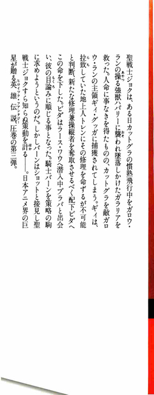
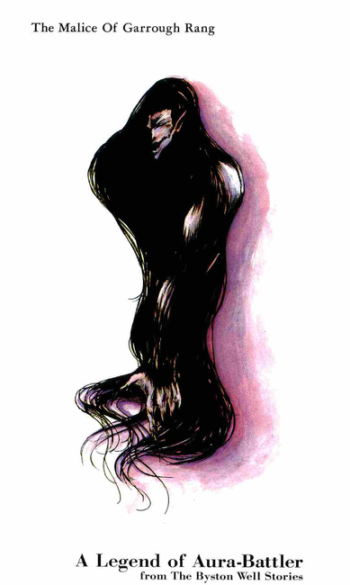
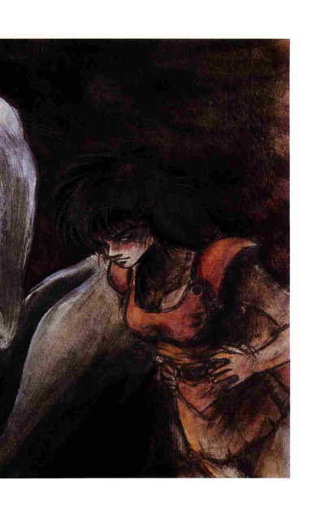
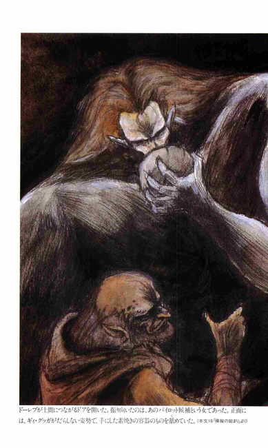
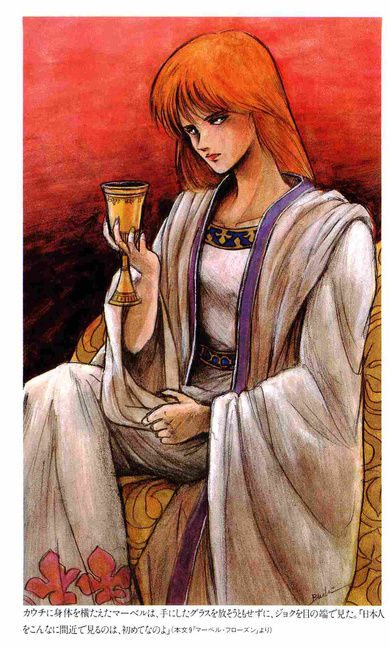
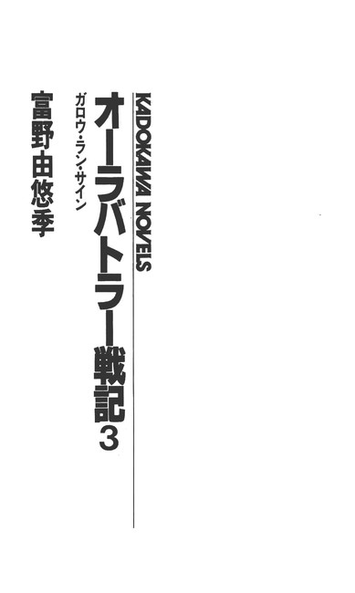
オーラバトラー戦記３ 目次
序
１ 夜と朝
２ ビダ・ビッタ
３ 遭遇戦
４ 機械の前のギィ
５ ラース・ワウ
６ トレンの発進
７ 刑場にて
８ ブラバとビダ
９ マーベル・フローズン
10 ステラの店
11 夜からの刻
12 ガロウ・ランたちと
13 火をつける者
14 接 触
15 本 陣
16 操縦の始まり
17 闇を読む者
18 想像の向うに
19 策動から
20 孤 立
序
城毅、通称、ジョク。日本人である。
しかし、バイストン・ウェルのコモン界では、アの国の戦士ジョクで通っていた。
弱冠二十歳で、城持ちの成り上がりである。
バイストン・ウェルの人々は、ジョクの生まれ育った世界を、地上世界と呼びならわし、ジョクを地上人と呼んだ。
その呼び方で、バイストン・ウェルが次元の違う世界であることがわかる。
ジョクの成功は、次元の違う世界で生まれ育ったことに負うところが大であろう。しかし、ジョクは、バイストン・ウェルで地上世界以上の能力を発揮したのである。バイストン・ウェルに移動できること自体、その人間が特別に強い生体力、オーラカを持っていることの証明である。
だが、オーラカを持つ地上人が、すべて、バイストン・ウェルで、特異な能力を持つ者として成功するわけではなかった。ジョクと共にバイストン・ウェルに落ちた女友達、田村美井奈は悲惨な運命にもてあそばれてその生命をなくした。
地上人の持つオーラカも、使いようでは、僥倖をもたらすものとはならないのである。
バイストン・ウェルの世界のコモン界は、地上世界で言えば、中世の動乱と暗黒の世界であった。現代の東京周辺に住む人々の感覚では、生き延びられるものではなく、そこで生き抜くためには、より自己を錬磨し研鑽しなければならない、とジョクは承知していた。
バイストン・ウェルの世界そのものの意思が、その世界に必要なオーラカを持った人々を呼び込んでいるのではないかとも考えられた。それは、過去、機械らしいものを有することを容認しなかったバイストン・ウェルが、オーラ・マシーンの開発を許したことに象徴的に示されているようにみえた。
さらに言えば、コモン界の人々にガロウ・ランと呼ばれて恐れられ、忌み嫌われている存在、地から湧いた人々が、オーラ・マシーンとの戦いを通して、変革の道を歩み始めているようにみえることにも現れていた。
彼等は、新たに手に入れた地上人を擁し、新しい挑戦を意図していたのである。アの国に敵するガロウ・ランをたばねる男、ギィ・グッガは、決して、不明ではなかった。
１ 夜と朝
「ケッケケケ......」
「シッ！」
含み笑いが闇のなかで湧くと、つばを含んだ声が、別の闇のなかから続いた。
そして、また、静寂が支配する......それは続かなかった。さらに、別の闇のなかから、男と女のからみ合う声が密かにわき上がってきた。
「あっ......っ！ クッ......」
「......フッ......ツ！......サラッっ！」
女の声は、こらえようとしてもつい洩れてしまう歓喜の呻きに、唇を噛むようにしているのが分った。
その女の声は、甘く切なかった。
それは、闇の厚みをかすかに、かすかに振動させて、四方に拡散していった。
しかし、拡散しきれないその男女の睦言が、やや離れた闇のなかに沈静する。
「キッッッ......う、うむっ......！」
さきほど声の聞えた闇のなかから、今度は、まったく別の男の呻きがほとばしった。
「ケッ......ケケケ......」
またも、さきほどの男の忍び笑いがわきあがった。
と、シューッ！ 何かをこする音がして、ボーッとした赤い光のなかに、人の影が四つ浮きあがった。
一人の男が、いつも唇の外に出ている歯をひからせて、ギョロッとした眼を右側の男に向けていた。
右側の男は、顔全体にブツブツとあばたがあり、山のようになった頬を左右に大きくふくらませて、その下にある口を三日月のように拡げていた。その顔は、人の顔とは思えなかった。上からかぶる髪が滝のように多く、鼻と言えばその高さがなくて、正面に鼻腔が開いているように見えた。
「............!?」
赤い光をかざしている出っ歯の男は、左側で肩を揺すっている男が両方の足を左右に開いているのを見ると、その男の腰を蹴飛ばした。
「オッテッえ！」
痛いのかどうか分らないような声を出したその男は、地に転がりながらも、「アハあっッ！」という呻きをあげ、闇につながる地の上で両膝を閉じるようにして、また「ウオーッ！」と歓喜の表現らしい声をあげた。
「やめないかよ」
赤い光を手にした男が、その光──マッチの光だ──を上にかざそうとした時、さらに別の男の声が起り、赤い光は急速に暗くなっていった。
それを合図に、別の闇から聞えていた男女の呻きが、とまったようだった。
「ハーァッ！」
吐息は消えていった。その息づかいにかさなるようにして、「チッ！」と言う舌打ちが闇に走った。
「......マッチというもの、無駄に使うんじゃあねぇ。せっかく、地上人にもらったものだろうに！」
最後に光を制した男の声であった。
「けどよ......へへへ......すぐに火がつくんだぜぇ......？」
「だから、大事にしろって言ってるんだ」
男と女のからみ合う呻きは、やや離れた闇のなかで、まだ息づいていた。
「ハッ......！」
真の闇に見えたそこ、睦み合う息づかいが聞える窪みには、ほんとうにかすかな光があった。光とも言えないかぼそいゆらめきである。
その光のなかに、ほんのりと女性の顔の輪郭がゆらめているのが見えた。すっきりとした鼻筋とあえぐ唇がようやく識別できる暗さだった。
歓喜に堪えないような息は、その唇からあふれていた、
「......ハッ！ きれいだ。本当に......」
男の呻く声がその女性に降りそそぐと、女性の顔をかすかに浮きたたせていた光は、わずかに強くなるように見えた。
その光を発するもは、幾条もの筋となって、闇のなかに浮き、波打っていた。
「髪が、光るなんて......サラーン......」
男の呻く声と共に、その光る筋が乱れた。男の手が愛撫したのだ。
「ああう......！」
髪の毛に触られたために、女性がまた、思い出したようにエクスタシーの声を上げた。密やかな声なのだが、ひどく妖艶である。
男の腰がまた動いたようだ。
「おうっ......！」
女性の呻きが闇を震わせた。
「......ガロウ・ランがいなければ......サラーン、もっともっと......」
男の未練がましい言葉が、闇のなかにたゆたうと、ボッとさきほどの赤い光がともって、さらにそれが大きな青い光に変った。
ガスのカンテラらしく、かなり明るい。
「............!?」
その光のなかに、トレン・アスベアの横顔とサラーン・マッキの長い濃緑色の髪が散っている白い背中が浮き上がった。
「なんとまあ......」
トレンは、下着姿のままもう一度サラーンの背中を抱きしめて、その耳たぶを噛んでやった。
「ウウッ......！」
サラーンの全身におこりのような痙攣が走り、そして、トレンに背中を向けたまま、這うようにして、前方の闇のなかにすすんでいった。その姿は当然、トレンに白い豊かな臀部をさらすことになった。
「サ、サラーン！」
トレンは、思わずその尻を迫おうとした。
「地上人っ！」
吐き捨てるような男の声が、トレンの背中を打った。
「............!?」
トレンが、背後を気にした一瞬、サラーンの尻が闇の下に消え、ドボッと低い水音がおこった。
「もう駄目だ。これ以上は、危険だぞ」
その声の主は、トレンの脇まで近づくと、脚でトレンの脇腹を蹴るようにして立たせた。
「ギィ・グッガ様に、知られでもしてみろ。フェラリオの精気をみだりに乱して、地上人を呼べなくなったら、貴様、申し開きができるのか？」
その論理的な弁舌は、ガロウ・ランのものとは思えなかった。
「分ったよ......」
トレンは、青い光を発するカンテラを手に取ると、サラーンの消えた闇の方に差し出してみた。
しかし、そこには、闇の窪みと、その窪みを遮るように、格子の横木があるだけだ。
三人のガロウ・ランが、闇のなかに走り出て格子の横木に近寄り、格子の縦木を重ねていった。格子の間に、出入り口があるようだった。
「分ったよ......フェラリオって......不思議なもんだ......」
不思議な動物と言いたかったのだが、そうではないと思う。しかし、人間と断定するにしては、摩訶不思議すぎる感触があった。つまり、空気のように男を取りこんでしまう包容力に、トレンは、人間の女性とは断定しきれないものを感じていた。
あのエクスタシーは、麻薬なのだ。
女の肢体の律動は、激しくとも、静かであるうとも、男の性感のすべてを動員することを要求し、確実に引き出し、受け入れていった。
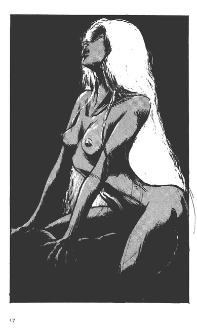
「人の生気を吸い取るというが、違うようだぜ......」
トレン・アスベアは、ドーレブを見やって言った。
まだ、全身にあの甘い感触がベッタリと残り、身体の深奥を震わせているようだった。
「......ハァ......」
ドーレブは、低く応えたがなんの感情も見せなかった。彼は、ギィ・グッガの側近で、トレンとフェラリオの手引きをしてやっているのである。
「なんとか、自分のものにならんのかな......？」
「......人じゃないんだぞ......？」
ドーレブは、ボソッと言った。
「分っているよ......」
フッと嘆息をすると、トレンは脚を止めて、闇を見やった。
「......？ 地上人？」
「ん？ どこか落ち着くわけにはいかないのか？」
「ラース・ワウを落したら、ギィ・グッガは、そこに陣を構える」
ちょっと考え深げにしてから、ドーレブはそう応えた。
「そのためにも、機械を動かして見せな。それまでは、ここを動かん」
「そうなんだな......」
トレンは、憂鬱そうに言うと、また歩み出した。
左右に数軒の家があるような場所に入った。
頭上に、星に似た光、燐の光が、銀河の光の帯のように天を横切っていた。
その燐光が、山間の小さな村の輪郭を、かすかに浮き立たせている。
「あハッ......ハハッ！」
「うっ！ おーっ」
ガロウ・ランたちの歓喜の呻きが、家の陰から湧き上がるのも、ギイ・グッガの陣らしかった。
トレンは、その声に、今しがた自分がしていたことを思い出して、恥かしくないでもなかったが、あのフェラリオとならば、人の見ている前で愛し合ってもいいとさえ思いこんでいた。
トレンは、数段さがった小屋の曲に降りると、居眠りをしているガロウ・ランの兵の前をすり抜けて、木戸を開いた。
「すまなかった。おやすみ......！」
その声に、居眠りをしていた警護の兵が、モゾモゾと起き出した。
近くに川があるのであろう。虫の声とせせらぎの音が、ガロウ・ランの臭気を消すように聞えた。
翌日、ドーレブは、ギィ・グッガが本陣にしている屋敷の裏の小屋で起き出すと、まず、彼の居室に向った。
周囲を低い石塀で囲んだその屋敷は、薄く板状にした石で屋根を葺き、煤けた緑と紅色の土壁、太い木の柱で構成された天井の低い家である。
造りは素朴でも、それなりの由緒ある風格を持った屋敷だったが、今は、ガロウ・ランの本陣と化して、まるで廃屋のように乱雑だった。
村を一望できる斜面を削って建てられているその屋敷の背部には、巨大な樹木が林立して、左右には低い濯木が続き、その向うには、桑畑に似た濃い緑の光景が続いていた。
しかし、山が緑と思うのはまちがいで、左右にせまる山は茶色の地肌をさらけ出し、緑があるのはその村を中心とした谷間だけである。
南面の庭には、石塀はなく、野の草の群がななめに村に向ってひろがり、村の中央を走る谷川の流れをわずかに見ることができた。
村の向うに見えるふたつほどの山を越えると、ラース・ワウヘ至る平野が拡がっている。
平和な村だった。
しかし、街道から外れ、来る人も少ないこの村は、今は、ギィ・グッガの軍の中枢となる部隊の占拠するところとなっていた。
すでに、ギィ・グッガ軍は、人を使役するということを十分に学んでいた。彼等は、村を占拠すると同時に、三百ほどの村人をすべて一角に収容して日常の使役に使いたて、老人と赤子以外は、殺すようなことはなかった。
さらに、ギィ・グッガは、コモン人の男女に報奨を与えて、敵地に放つという芸当までやっていた。
もちろん、それら高度の人の利用は、ギィ・グッガ自身が指図しなければならないことであって、まだまだ一般の兵に理解されるというところまでは至っていない。
ギィ・グッガ自身も、平時の朝は、ガロウ・ラン的にやらなければ、やっていけないという部分が残っていた。
「アッぐっ！」
女の苦痛に満ちた呻きが、ギィ・グッガの居室から聞えるのもそのためである。
ギィ・グッガは、『朝の気を抜く』遊びに興じているのだった。
相手は当然、この占拠された山深い村の年端もいかない娘である。彼女はうしろに廻された手首を藁縄で縛られて、ギィ・グッガの腰に跨っていた。
広く開け放たれた居室の前は、村の景色が望めるベランダである。部屋の中央に、熊の毛皮を敷きつめたギィ・グッガのベッドがあり、その上で上体をななめに起したギィ・グッガの白く巨大な肉体が、少女の股間を割るようにして、逸物を挿入し、彼のクレーンのような両腕が、ガッチリと少女の腰を押えて、上下運動を強要しているのである。
「グフッ！ ゲッツ！」
天井を向いた少女の口からは、そんな絶叫しか漏れなかった。
全身を光らせる汗が、黒い髪をベッタリと両方の肩に貼りつかせた少女は、わずかにふくらんだ胸と下腹部をゼェゼェと起伏させて、その苦痛に耐えた。
しかし、背後から見える割れた臀部には血が滲み、左右にひろがる緊張した大腿部の筋肉は、ピリピリと痙攣しているのが分った。
「アハッ......アヘッ......」
少女の息づかいは、まるでおぼれる者が、息をするような音にかわった。
背後から見れば、棍棒を挿入されているとしか見えない。腰の骨はくだかれ、内臓は、押しひしがれて、ロから飛び出すのではないかと思われた。
「フンッ！」
片腹をギラッと光らせたギィ・グッガの最後のひと突きが、少女の背骨を砕いたように見えた。
「アゲッ......ツツツ！」
少女の全身がビリビリと鳴ったようだ。ギィ・グッガの全身も痙攣し、彼の女の声のように細い、しかし、硬質な呻きがキィッと漏れた。
「ヘッ......ヒャッヘヘヘッ......」
ギイ・グッガは、ぬらりと赤く血に染まったおのれの逸物を抜き出すと、少女の身体を押し倒した。
哀れな少女は、後手にされた自分の手首の上に上体を落しながら、ドーレブの近くに倒れ、ひとつ呻いただけで、身体を動かそうともしなかった。
「......ヘッヒヒ......」
ギィ・グッガは、まだ、佇立している自分のものを両方の手でしごきながら、ドーレブに目をやった。
「.........地上人の件で......」
ギィ・グッガがかすかに頷いたので、ドーレブは、昨夜のトレン・アスベアの動きを報告した。
「......機械の方は、どうだってぇ？」
ようやく息をついたギィ・グッガが、少女の髪の毛を握って、引きよせながら聞いた。
「今日か明日には、少しは動くと言うことで......」
「フム......」
ギィ・グッガは、少女の頬をはたいて気づかせると、自分の佇立したものを舐めさせるようにしながら、
「ブラバは、女に逃げられても、やることをやっているじゃねぇか。いいことだよ......」
「ハァ......」
「けどよぉ、女がいなくて、ブラバは、どうしてんだろなあ......」
と、ケケケッと甲高い笑い声をあげて、
「ミュランも、仕事しているな？」
「はい、ハバリーを機械のように使うことを訓練しています」
「ならいいがよ。俺は、コモンからいろいろ勉強したんだぜ？」
ギイ・グッガは、眼を細くして、自分のものを舐めて清めてくれる少女を見下ろして言った。
「はあ......？」
「ン......知恵ということをだな。俺は、いろいろ研究したんだっ！」
最後の言葉に力を込めると、ギイ・グッガは、またも、放尿をするかのように、少女のロのなかに気をやったらしい。
少女は、ゲヘッと呻きながら、必死で上体をあとずさりさせた。
２ ビダ・ビッタ
「モドドッ！」
三角の天幕の入口を開いて怒鳴りながら、男は、天幕の周囲をギロリと見回した。
その周囲は、同じような天幕が十数個ならぶ小さな谷間で、ギィ・グッガの陣からは山ひとつ隔てた場所にあった。
なんの返事もなかった。
「チッ！」
今度は、本当に腹を立てたビダは、天幕のピンを外すと、何かを引きずるようにして、下半身むきだしの恰好のまま出てきた。ガレ場に引き出されたのは、女の裸体である。
ビダもギィ・グッガのように、コモンの女をもてあそんでいたのである。
ビダは、もう一度、天幕に入り、下穿きと太い革ベルトを手にして出てくると、下穿きをつけ、革ベルトを腰にした。ベスト状のものしか身につけていない上半身は、筋骨隆々として、衣装で身を飾る必要はないように見えた。
しかし、その形相は、頭部は半分がツルリと無毛で、左半分にしか髪がない。眼はクリッとして、奇妙にはっきりとくぼみを作っているものの、眉はあるかなしかで、唇は異常に厚く大きい。
「テッテアっ！」
もう一度、ビダは、叫んだ。
周囲は、シンとしていた。ガロウ・ランのたむろする場所とは思えない静けさである。
「............？」
ビダは耳をそばだてて、かすかに聞える呻き声の方向を見て、ドスッと脚を踏み出した。きわめて大股である。速い。
「............!?」
低く地を這うような呻きは、天幕ふたつほど隔てた場所から聞えた。
そこには、とりあえず木を組み合わせて造った檻に、数人の男女が手足を縛られて転がっていた。
ガロウ・ランたちが、蹂躙した土地から拉致してきたコモンの虜囚である。すべて、ガロウ・ランの戦士たちの慰みものに供される運命が待っているのだ。まだまだ、ギィ・グッガの考えがすべてのガロウ・ランに浸透するのには時間がかかるというわけである。
ここにも、誰一人いなかった。周囲を警戒する必要がない場所だからこれで良いのだが、ギィ・グッガの直轄軍ほどに、統制のとれた集団ではないことも確かであった。ギィ・グッガからは、冷遇されているのである。
テッテア以下のビダの部下は、アの国に最初に侵攻した時にはめざましい働きをしたものの、オーラ・マシーンの働きに度胆を抜かれたガロウ・ランの最初の部隊でもあった。
ビダは、テッテア以下の部下にラース・ワウに潜入させて、アリサ・ルフトを拉致し、それをギィ・グッガに示した。
それまでは、人質の有用性などというのは、ガロウ・ランに認識できる作戦ではなかったが、ビダはそういったことを想像できた男である。
しかし、アリサ拉致の結果は、無残であった。
ジョク以下の奮起を呼び、それを契機にギィ・グッガは敗退したのである。それが、ビダを後方に置くことになり、次の戦いでは、冷や飯を食わされることになった。
だからと言って、ビダは、ギィ・グッガの軍と接触ができないほど離れているわけではないし、ギィ・グッガが、人質作戦を嫌ったわけでもなかった。
「フン......！」
ビダは鼻を鳴らした。今は、怯えた眼を向けるコモン人の虜囚に興味はなかった。
気をやった後、彼等のことが頭をよぎったのは、この数日、気になっていたことを思い出していたからである。
知性と呼ばれる種類のものが彼の行動を支配し、ビダは、次のまだ目に見えない事態を想像できるようになっていた。それは、ガロウ・ランにあっては極めて勝れた資質と言えた。
ガロウ・ラン、地に逼塞するものたち......。
愚昧で、目の前にあるもの以外は反対することも賛成することもできないものたちである。
オス・メスの衝動だけは明瞭にあって、生死への恐怖はないに等しい。
もちろん、死への恐怖はあるように見えるが、それは、死の恐怖を想像できるからではなくて、死に至る痛みにたいして嫌悪感があるからにすぎない。
自己の快感、快楽には貪欲でありながら、他者の快感と苦痛を想像することはない。
しかし、ガロウ・ランのなかにあって、多くの部下を持ち、支配することができるものたちには、多少才があった。その一端に、この男、ビダ・ビッタもいた。
「ビダ！」
ビダは、焚火のなかから焦げた肉塊を取り出しながら、その声の主が近づくのを待った。
「テッテアは、どうしたんだ？」
ビダは肉の灰を払い、焦げた表面を剥ぎ取りながら、角のある驢馬に似た小型の馬を急かして上ってくる若い女を見やった。
その女は、遠慮会釈なく馬の脇腹を蹴って、岩の多い坂道を登ってきた。
彼女のヌメッとした肌は、好意的にいえば艶があると表現できなくもないが、脂が滲んでいるというほうが適切である。髪の毛も針のような剛毛で、それがブワッとひろがって頭部を覆っていた。
「............！」
ビダは、肉塊にかぶりつき、焚火の脇にあった素焼きの壷にはいった水をガブリと飲んだ。
「テッテアは、後から来る......嫌な話を聞いた」
ふくらんだ髪を振りたてて、女はビダのかたわらに飛び降りた。
「ギィ・グッガが、人質を取れってでブラバに言ったらしい」
「ブラバにだと？ ブラバは、情けない戦士だ！男じゃねぇんだぞ！そんな者にギィ・グッガがロを利くはずがねぇ！手前だって、ブラバから逃げたんだろっ！」
「ああ、そうだ、男じゃないからさ。けど、今、聞いたんだ」
「ギィ・グッガは、ブラバを一番にするのか？」
ビダは、肉塊を焚火に放り投げて、カッとした。
「聞いた。あたいが、言ったんじゃない！」
ビダの剣幕にナラは、強硬に言いつのった。
ガロウ・ランたちは自己保身の術に、本能的にすぐれていた。ナラは、今話に出ているブラバについていた女なのである。
「誰から聞いたんだ！」
「下を、メッデたちが通った。食う物も貰った」
ナラは、自分の馬の鞍の後に、山になっている青菜の前に立った。
ビダたちが、この山に籠もってかなりになる。ギィ・グッガの本陣と違って、ビダたちは、食料などをコモン人から、随時、略奪しなければならない立場にいた。今日は、その襲う相手が同じガロウ・ラン仲間で、しかもギイ・グッガの軍の一員であったために、情報が取れたというのである。
ギィ・グッガは、自分の軍の者たちに、幾つかのタブーを設けて、仲間同士の殺し合いが起らないようにしていた。でなければ、ガロウ・ラン同士の殺し合いと略奪は日常茶飯事なのである。それを、ともかくも統制ある集団に変貌させたギィ・グッガの功績は、偉大であったが、まだ、ガロウ・ランの世界で、その偉業の意味を理解する者はいないと言ってよい。
「ブラバをギィ・グッガは、可愛がるか......」
ビダは、呻いた。
このように人の上下関係が集団のなかで認識されるのも、ガロウ・ランの社会関係が、緻密になってきた証拠である。
「俺たちも行かなけりゃならねえ。人質は、ギィ・グッガが喜ぶ」
しかし、ビダは、部下が戻ってからでないとこの場所を出発できないことを思い出して、多少苛立った。
気にしていたことが的中し、早く実行しなかった自分が、墓に脚をつっ込んだのではないかと想像できたのである。
「ブラバが動いていたのを、早く教えねぇからよぉ！」
「怒んないでよ。やらしてやるからよー」
ナラは、青菜を口に押し込みながら、脚を開いてみせた。
革鎧に近い衣装は、堅牢であるが、今は、戦闘時ではない。ナラは、下穿きなどは着けていなかった。まともに、ナラの股座がビダの目の前にあった。
「そんな時けぇ！」
ビダが、ナラの股間を蹴ろうとしたので、ナラは素早く脚を閉じて、焚火の上で焦げ始めた肉塊に手を伸した。
「みんなが戻ったら、支度をさせろい！」
「なんでだよ？ ここで暮すので、いいじゃないか」
「いいか？ いい女、いい男がゴマンといるのがコモンの世界だ。俺たちみんながよ、好きにできる男と女がここにいるか？いつも同じチンポと、いつも同じクサレマンコでよぉ」
「あたしのが、悪いってのか？」
「ちがうってぇ！ コモンの男は、うまくないだろ？女もだ......まずいのは、意気地がねぇってことだ。やれば、その度に、死んじまう」
「殺しているからだよ」
「そうだ。その後を心配するのは、つまんねぇ。今日はいいがよ、いつもは女日照り、男日照りだ。違うか？」
「そうだねえ。今は、一匹しかいねぇんじゃねぇ」
「そうだ。ギイ・グッガが、あの国を取っちまえば、毎日、コモンの男と女を好きにできるってもんだ。そのためには、手柄だよ。手柄......。ブラバがギィ・グッガに認められれば、俺たちは、いつまでも、ここで暮さなけりゃならんだ。いいのか？」
「なにがいるんだ？ 獲物は、手に入る。死ぬまでは、死にはしないじゃないか」
ナラは、バリバリと青菜を食べるのをやめない。
「男はよ。やりてぇんだよ！」
「やらしてやるよ。ホレ......」
「そうじゃねぇって！」
ビダは、またも股座を開いてみせるナラの股間を、今度は、見事に蹴り上げた。
「ガホッ！」
ナラは口にした青菜を半分かとこ吐き出して呻いた。
「骨までは、懐しゃしねぇよ！」
ビダは、ベッと唾を吐くと、
「モドド！ テッテアっ！」
戻ってくる男たちの群に声をあげた。
３ 遭遇戦
ブブブッ！
翼、というよりもトンボの羽根に似て、その数十倍の面積のある羽根がふるえる音が、コックピットにまで聞えた。
本来、正面にあるはずのハッチが装備されていない状態のために、その羽根の震動音が、コックピットに座るガラリア・ニャムヒーに聞えているのだ。
革のヘルメット、革鎧に身を固めた彼女は、真新しいゴーグルをしていた。
そのゴーグルのフレームも革製で、現代の我々から見れば、ひどく古めかしいデザインであるが、この世界では新奇な道具であった。それだけでも、人々の好奇心を刺激するのである。
「順調だ。さすが地上人の作ったものだよ」
ガラリア・ニャムヒー、まだ二十五歳にならない女性の戦士である。
アの国の地付きの騎士ではないものの、彼女は、秀れた資質によってえらばれた騎士の仕事、人型の機械の操縦者──パイロット──女性でただ一人のパイロットになれたのである。
「よし、あと十分！ そのまま巡航速度を維持しろっ！」
その声は、ひどく雑音の激しい無線機から聞えた。
無線とはいっても、地上世界にあるビデオ・カセット程度の箱にすぎず、その実体は、鉱石ラジオ・レベルの無線である。
「了解っ！」
ごうごうとコックピットにふきこむ風圧も、シートの左右のベンチレーターから抜けているので、なんとか耐えることができた。
ガラリアは、アクセル・ペダルに相当する右のぺダルを押しこみながら、速度を増していった。つまり、無線の命令などは聞く気はないのである。
シートの前には、速度計、高度計、水平儀、エンジンの温度計、大気温度計、それだけである。
「三百キロか！」
ガラリアは、計器盤のむこうに流れる地上を見つめて、あたかも自分の身体が飛んでいるかのような錯覚を楽しんだ。
彼女の操縦する機械が、バイストン・ウェルの世界で革新的な機械、人型の機械、カットグラの四番機である、
彼女は、前の作戦で、自機を戦場に放棄せざるを得ない事態に追いこまれて、今日、ようやく新しい機体を手に入れることができたのである。
その慣熟飛行テストを行なっているのである。しかし、ガラリアは楽しんではいない。
彼女は、自分の不運が、自身の気の強さから来ていることを知っていたし、いつまでも好きにして良い時機ではないということも分っていた。
カットゲラと同じオーラ・マシーンであるオーラボム・ドーメのほうには、次々に新しい騎士がパイロットとして採用されて、訓練に励み、ガラリアを追っているのである。
ガラリアとしては、早く具体的な軍功をあげなければ、カットグラに乗る名誉を、若い騎士たちに奪われる立場にいたのである。
ガラリアにはバーン・バニングスという追い落さなければならない騎士がいた。
若くしてラース・ワウの騎士団のなかでその才覚を認められ、第一にオーラ・マシーンの操縦者に選ばれた騎士である。カットグラに乗るかぎり、彼に従わなければならないというのでは、ガラリアのプライドが許さないのである。
それが女ゆえの気負いから出ていることは承知していたが、騎士の世界が男の世界であるという事実に反逆したいという夢もあったのだ。
「そのためには、まだまだ、やらなければならない」
それがガラリアである。地付きの騎士でないという劣等感が思わせることである。
「ン......!?」
ガラリアは、カットグラの機首を大きくめぐらせて、アントバの山脈を左に見るようにした。
前方、山の稜線上の雲の上に物の影を見たように感じた。雲が、左右に走った。
その一層の雲を、下にした。
「......オーラボムか......？」
ラース・ワウのドーメ部隊が、訓練につかう空域からはかなり距離があった。しかし、コモン界で空を飛ぶものといえば、鳥か、強獣ぐらいである。
「............!?」
新型のカットグラの慣熟飛行という意識が、ガラリアの警戒感を薄いものにしていたのであろう。ガラリアは、またも高度を取った。八百メートルといったところだった。
バシュー！
空を切る音が、機体の風切り音のなかに、滑りこんで消えた。
「チッ!?」
次の瞬間、ガラリアは、機体を横に振って、左の雲のなかに飛びこもうとした。
その雲から、数頭の巨大な鳥が湧くように現れて、そこから放たれたものが、カットグラをかすめた。
「ガロウ・ラン!?」
鳥の形をしたものは、強獣のハバリーだ。その首筋には、人の影が取りついて、弓につがえた矢を放ちながらカットグラをかすめて後方に飛び去った。
もちろん、速度の上で彼我の差は歴然としているが、彼等が使う弓矢には、強力な火薬が仕掛けられていて、その直撃を受ければカットグラといえども墜落する。
ガラリアは、それで、前のカットグラを失ったのである。
「...............!?」
ガラリアは、自分の運命を呪った。戦場で撃墜されたただ一機のカットグラを操縦していたのが自分で、またも、狙われるというめぐり合せをである。
「............!?」
正面に目をこらした。ベットリと白い幕が視界一杯にあったが、その雲のなかにもオーラの光が浸透して明るかった。
ハバリーは速度が小さいので、彼等は、ひとつの空域に数を展開させて、カットグラを撃墜する予定であろう。
「来た!?」
影がゆらめいたようだった。ガラリアは、逃げなかった。一直線にその影に向って加速した。その間に、敵が矢を放って、直撃を受ければガラリアの敗北である。
しかし、そうはならなかった。敵の方が気がつくのが遅れた。
一頭のハバリーをかすめたカットグラは、その風圧でハバリーにまたがるガロウ・ランの戦士を振り落していた。
雲が切れた。
落下するガロウ・ランの影が、緑の大地に吸い込まれていくのが見え、主をなくしたハバリーは、体勢を立て直してカットグラを追おうとした。
ハバリーという獰猛な強獣は、そのような習性を持っていた。しかし、飛行速度が圧倒的に速いカットグラは、強獣を無視することができた。
「くそったれっ！」
野卑な言葉を吐きながら、ガラリアは、カットグラを急速にターンさせ上昇すると、追いすがるハバリーの群に対峙した。
「十頭はいるのか!?」
その判断は不確かすぎた。雲が、視界の半分をさえぎっていたからだ。
「ハバリーだ！ ハバリーの群だっ！」
ガラリアは、鉱石無線に怒鳴りながら、できることならば、なん頭かでも撃墜したい衝動にかられて、正面からやや下に位置した敵に向って、突撃をかけた。
テスト飛行のために、武器は、カットグラが使う剣と、シートの背もたれの脇に置いた小銃だけである。
カットグラの速度からみれば、敵の放つ矢を無駄にさせることは容易だったが、敵の布陣が見えないので、ガラリアは苛立った。
次に迫った雲のなかからも、あの強力な火薬ガダを装備した矢が、飛んでこないとも限らないのだ。
ガラリアはホルダーから小銃を抜くと、銃床のベルトを手首にからげて、その銃口を正面に向けた。
バババッ！ 雲と緑の大地の間から三頭のハバリーが飛び出して、矢が飛んできた。
その矢の造りのディテールをはっきりと見ることができた。
「しゃら臭いんだよっ！」
ガラリアは、小銃を乱射し、カットグラに剣を振るわせた。
バッ！ 正面に頭に派手な羽根をふり立てたハバリーの首が揺れ、その背中にまたがっていたガ口ウ・ランの男の姿が、ハバリーの背中から撥ねて落ちた。
そのハバリーは、まっすぐに正面からカットグラに襲いかかり、そのするどい嘴をカットグラの頭に立てようとした。二本の脚の爪は、ガラリアを掴もうとするように、ハッチのない空間に襲いかかってきた。
「チッ！」
ガラリアは、右手でレバーを引いて、カットグラに持たせた剣を振る。
ザバッ！ ギャッ！ ハバリーの叫びと剣が何かに激突する音は同時だった。
その刹那、別のハバリーが左横手から激突してきた。
「ウッ!?」
両方の手が使えなかったことが、カットグラの動きを鈍くした。ガラリアの身体が、シートの横に飛んだ。太腿にベルトが、食いこんだ。
「クッ！」
ガラリアの向う意気の強さが、ここでマイナスに出た。ガラリアはシートベルトを外すと、小銃を構えようとしたのだ。
カットグラが斬り落したらしいハバリーの身体が、くるくると舞い落ちるのが見えた。
ドスッ！ ドッ！
ハバリーが、カットグラに激突して、嘴を使うのが分った。ガラリアは、数発の銃弾を射ったが、体がシートから撥ね飛んでいた。ハバリーの巨体もカットグラの不規則な動きで、大きくよろけて上に流れた。
「うわっ！」
持っている小銃が、一度、コックピットの前のハッチ部分に引っかかったものの、ガラリアの身体を飛ばした反動の方が、はるかに大きかった。
ガラリアの身体が、コックピットから滑り落ちて、先ほどのガロウ・ランやハバリーと同じように落下した。
「あああ......!?」
スカイ・ダイビングの概念等はまったくない世界である。ガラリアの身体は、縦に回転しながら、次第に速度を増して降下していった。
ハバリーの群は、パイロットがいなくなって直進するカットグラに向って、なおも襲いかかろうとしていた。
ヒューッ！ ヒョー！
人間の耳に聞えない高周波の笛の音が、ハバリーの群をコントロールしていた。笛を吹くのは、ハバリーの使い手ミュラン・マズである。
彼は、ハバリーの群の最上の空域に位置していたので、ガラリアがカットグラから落ちたのは知らない。ただ、カットグラの動きが直線的になったので、最後の一撃を加えるべく、その前方に位置する三頭のハバリーに指令を出したのだ。
「トロいからよぉ......！」
ミュラン・マズの自分の部下にたいする感想だった。
すべてのハバリーに、ガロウ・ランの手下たちを乗せはしたものの、彼等にハバリーを操らせることなどはできないと知っていた。ただハバリーに乗って、弓矢を使ってくれれば良いという期待だけで乗せているのである。
訓練の時間はない。それは、ラース・ワウと同じ状況なのだ。だから、今日も、偵察をかねながら編隊飛行の訓練を行なっていたのである。
過去、何度かの戦いを通して、ミュラン・マズは『機械』と戦うことを覚えていった。
そして、なんとしてもハバリーを使える戦士を育てない限り、機械との戦いに勝つことはあり得ないと分ってきたのである。
『機械』との遭遇は、ようやくコモン世界に出てきたガロウ・ランにとっては、おもしろい事件ではなかった。
地中の奥深く暗い世界で生きるガロウ・ランが、オーラの光り輝くコモン界に出てきた目的は、ただひとつ、コモンの人々を蹂躙する楽しみがあったからである。しかし、『機械』という想像を絶するものと出会い、その目的を達することが容易でないとわかった時から、地に暗く住む者たちの脳細胞は刺激され始めたのである。
『勝つ』ということが、ひとつの目的として、一部のガロウ・ランの頭のなかを占めるようになったのである。
「手前たちは、一体、何を考えて生きているんだよっ！」
このような発想が生まれ、他人を使うということの苛酷さが、マズたちを苦しめるのである。
今も、布陣が遅れた最後の三頭を直進する機械の前に前進させて、あとは、ハバリーに乗った戦士たちの攻撃に任せるしかないのが、その手がいかにも遅いのだ。
「なんやってぇーのぉ！」
ミュランは罵りながらもカットグラを追おうとして、別の機械が後方から接近するのを見つけた。
「ケッ！ 落さねぇうちに、またかっ！」
が、そのもう一機のカットグラは、上昇せずに地上近くに高度を下げ、その速度を増していくのが分った。
「............!? ケッ、ケケケ......」
笑ったのは、怖くて攻めてこないのだろう、というぐらいの思考が働いたからだ。
後から戦闘空域に入ったカットグラは、ガラリアの無線を傍受して、掩護に駆けつけたジョクの二番機だった。
ジョクは、その空域に接近し、上空に乱舞するハバリーを見届けたが、別の妙な『気』を察知して、上昇をかける途中から、高度を下げていったのである。
「なんだ？」
テレパシーといって良いような感覚が、ジョクの意思を叩いた。
「......落ちているのか!?」
ジョクは、目を凝らした。その前方に石のように落下するガラリアの影を見つけた。
「......ガラリアかっ！」
ジョクは、カットグラを加速させて、ガラリアに接近すると、カットグラの左手を差し出しながら、その肘に装備している楯を上に向けて、ガラリアの落下速度に機体の速度を合わせていった。
「ジョクか!?」
落下するガラリアは、ようやく接近したカットグラに気がついて、上体を上にねじまげようとした。
そのため、ガラリアの落下方向が横に流れた。
「そのままだっ！」
ジョクは、喚きながらカットグラを前進させて、ガラリアの身体を楯で受け止めた。目の前に緑と地面の色がバッバッと雪崩のように走った。
「ジョクっ！」
ガラリアは楯にしがみついた姿勢で、コックピットの方に上体をねじ向けようとした。
「......カットグラは!?」
ジョクはガラリアに答えずに、上空を索敵しながら、機体の高度を上げ始めた。楯をコックピットの前にゆったりと持って来て、半透明のハッチを開いた。
バフーッ！
高速で移動する空気が、ジョクの身体をシートに押しつけた。
「恩に着るっ！」
そんな言葉と同時にガラリアの身体が空気に押されるようにして、ドッとジョクの膝にかじりついて来た。
「お互い様さ！」
ガラリアが、シートの背後の隙間に移動する。
ジョクは、ハバリーの群が飛び去ろうとする方向に加速をかけていった。
「あった！ まだ飛行しているぞ!?」
ジョクは、ガラリアが、背後の壁に身体を固定したのを確認すると、一気に加速をかけた。
「ううっ!?」
ガラリアの身体がシートの下に滑りこむように、小さくなっていった。
「ジョク！」
「地面に落ちるよりはいいはずだ」
ジョクは、ハバリーの動きに神経を集中した。
「十二、三頭いるな!?］
「二頭は、落したはずだ」
ガラリアは、肘掛けの下で身体を支えるようにした。
「ギィ・グッガの軍は、よくやる」
「そうだ。手が早い。よほど頭が働くガロウ・ランたちだ」
ヒュン！ ヒャン！ 数本の矢が、ジョクのカットグラを狙って降下してきた。
「ガダだ！ やられるぞ！」
「分っている」
ジョクは、下からハバリーに接近するのは危険だと実感した。
カットグラの右手に持っているフレイ・ボンム・ライフルを上に向けると、矢の壁を掃射しながら、高速で突破した。
ドヴッ！ バガーンッ！
火炎にぶつかった敵の矢が爆発し、空中に黒い煙の輪を作った。それは、近代の空中戦そのままの光景だった。
さらに、左右をフレイ・ボンムで掃射して、ハバリーから飛ぶ矢を牽制した。音もなく後方に移動する白い雲の壁が、カットグラをおおい、その白い壁の向うに、ハバリーの群が後退して行くように見えた。
「損傷はないか？」
ジョクは、ガラリアの無人のカットグラに接近すると、その腕を取り押えて平行に飛行しながら、その機体を観察した。
「かなり、へこんでいるところがある......」
ガラリアは、いまいましそうに呻いた。
「......敵は後退したのかな？」
「らしいが......連中は、白昼ラース・ワウを空襲するつもりだったんじゃないのか？」
ガラリアは、身体を立てると、レバーを掴むジョクの手を叩いた。
「だろうな......連中に戦略的空爆の思想があるなんて、考えたくはないが......」
「ええ......？」
「地上世界の戦争の考え方のひとつだ。その内に説明してあげるよ」
「そ、そうだな？ 頼む。ジョク、本当に、よく間にあって来てくれた」
「いいさ。騎士同士だ！」
ジョクは、ニッと笑うと、カットグラの機体をガラリア機の正面に向けて、コックピットの位置を合わせた。
ガラリアは、自分のコックピットに戻っていった。
「ありがとうよ」
ガラリアの素直な声音が、風を切る音をつらぬいた。
４ 機械の前のギィ
「やってみます」
トレン・アスベアは、ハッチから乗り出していた身体をシートに引っこめると、アクセル・ぺダルを踏んだ。
キュルルル......。トレンの背後から細く低い音が起り、トレンの座るせまい空間が、震動した。
「おおっ......！」
「動いたっ！ 来るぞっ！」
その機械、カットグラを取り巻いた異形の男女たちはドッと後退し、なかには谷川のせせらぎを飛びこえて行く者もあった。
ギシュ！ カットグラの右腕が前方に上がった。
またも、カットグラを取り巻く人の輪が大きく拡がり、背後の桑畑に伏せる者もあった。
しかしギイ・グッガは、カットグラの正面に立って、ギロッとその片方の眼で凝視しつづけていた。
トレンは、口をへの字に曲げたまま、左のスティックを前に押して、カットゲラの右腕を真上まで上げてとめた。
「......行くぞ」
その腕がドッと振り下ろされ、やや上体を震動させて停止する。
トレンは、コックピットの前にある木の梯子の上に上体を乗り出して、
「ここまでしかできません」
熊革に似た革ローブをまとった身長ニメートルを超えるギィ・グッガは、頬にナナメに裂傷をおびた顔を歪ませ、糸のように細い片方の眼をクワッとひらいた。
「......なんでだよ！」
「機械っていうのはこういうもんなのだ。俺はこの機械の専門家ではない。動かせっていったって、機械の構造の全部を知らなければ、動かせるものではない」
トレンは、ギィ・グッガを見下ろして、必死の思いで絶叫した。ここで、納得してもらえなければ、命がなくなるからだ。
「その、なんだ......機械のことを書いた本とかいうものがあるんだろう......なんで、それで動かせねぇんだ！」
ギィ・グッガは、操縦マニュアルのことを言った。それが、整備マニュアルや製造するためのものと違うということは、ギィ・グッガが多少コモン界のことを勉強したからと言って、理解できるものではない。
「このカットグラは、修理しなくっちゃならないところばかりなんだ。それに、ここには、直すための工具だってない。いいかね？機械を直すということは、機械の本質的なところが分らなくては、直せないんだ。いいかね？機械には、いろいろな種類がある。空を飛ぶ機械、地面を走る機械、それだけではない......」
トレンは、こうまくしたてる以外なかった。この話もギィ・グッガが、戦場でガラリアのカットグラを捕獲して、地上人のトレンなら動くようにできるだろうと考えた時から、何度話したことか知れない問題であった。
しかし、ギィ・グッガは、トレンが地上人なら直せると信じこんでいた。
トレンは、この村に入ってから、ただひとつの手がかりである青焼きの紙を綴じこんだ操縦マニュアルと、アの国の公用言語と一緒に書きこまれていたショットの英語による補足的な説明を頼りにして、修理をこころみたのである。
パイロット用のマニュアルでは、カットグラそのものの構造的な手入れなどは、できようはずがなかった。
「......洗濯をする機械、電気を光らせる機械、人間を昇降させる機械と、機械には、いろいろとあるんだ。しかも、この機械は地上にはない機械だ。それを理解して、使えるようにするためには、学ばなければならないことが一杯ある。それが、機械の世界だ。ここだけの考えが、通じるとは思わないでくれっ！」
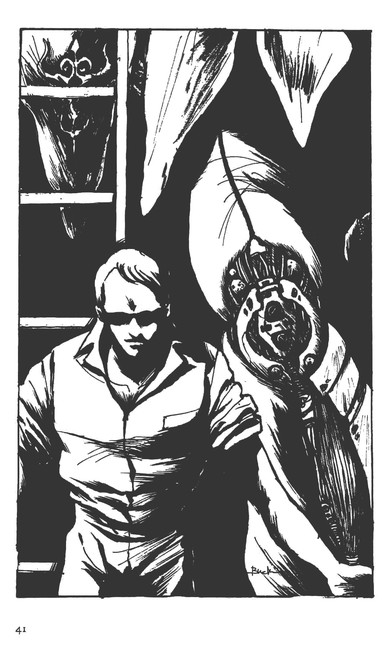
この時ばかりは、トレンは、この世界で伝わるテレパシー的な要素に賭けた。言葉が通じなくとも、意思が伝わる部分があるのならば、必死に真実を分らせる思考を羅列すれば、ギィ・グッガは理解してくれるだろうと思った。
ガロウ・ランのなかでもギィ・グッガの意思は、混濁していないということは、トレンも感知していたからである。
しかし、トレンの意識が絶叫しすぎて、彼の膨大な意思がギィ・グッガに感知された時に、ギィ・グッガが他人の意思が大量に流れこむことをうるさがれば、トレンの首などは、あっという間に胴体から離れてしまうのである。
ギィ・グッガは、ムッとした表情をトレンに見せて、仁王立ちしていた。
トレンは、一息入れると、怒ったような顔を見せたまま、コックピット前の木製の梯子を降り始めた。
その行動に、トレンは命を賭けたのである。トレンの傲然たる態度が、ギィ・グッガを怒らせて、部下に殺せと命令すれば、数十の剣と槍が襲ってくるかもしれない。
「機械か......」
トレンの脚が地についた時、ギィ・グッガはそう呻いた。
「この脚が直せないんだ。損傷がひどい」
「...............」
トレンは、かすかに息をついて、カットグラの脚を示した。
ギィ・グッガは、その長い脚をドッとトレンの方にすすめて、トレンの背後にある装甲の半分がはがれた脚に向った。
それはふくらはぎに相当する部分で、錯綜する数十の筋肉に似た筋によって形造られていた。
ギィ・グッガは、片方だけの眼でギロリとトレンを見下ろし、カットグラのむきだしの筋をシミジミと観察して、一人唸った。
「腕も同じようなんだな？」
ギィ・グッガは、今しがたトレンが動かして見せた腕を見上げて、さらに、脚の回りを一周した。
周囲に上体を低くしていたガロウ・ランの手下たちも、おそるおそるカットグラの近くに戻ってきた。
ガロウ・ランたちも、カットグラに畏敬の念を感じて、いつものような乱雑で粗暴な挙動は見せなかった。
彼等の大半は、戦場でオーラボム・ドーメとカットグラの働きを目撃して、その威力を承知していた。
彼等は、今は死んだ状態にあっても、機械というものは、直せばまた生き返るという話は、信用しなかったのである。
しかし、トレンがともかくもカットグラの腕を動かして見せたことで『機械が生き返る』という事実に、納得顔を見せはじめているのが分った。
ギィ・グッガは、背にしたローブを空になびかせて、コックピットにつながる梯子を登り、一方に聞かれた半透明のドアの脇のコックビットを覗いた。
「ここが、操る場所か......」
「はい！」
ギィ・グッガは、半透明のドアの聞いた入口をくぐろうとしたが、
「辛気臭せえよぉ......」
と、身を引こうとして、もう一度、上体をコックピットの方に寄せたようだった。
ググッ......！
「うおーっ!?」
またもガロウ・ランたちから、どよめきがあがった。
「ギィ・グッガ！」
トレンが、梯子の下に駆け寄って、梯子を押えようとした。カットグラの右腕が、ギシッと上がってから、横に曲った。
と、その腕は、バキーン！ と半透明のドアを打って、ギィ・グッガの腰を打ち、カットグラの上体を震動させた。
「うわっ！」
その叫びは、ギィ・グッガとトレンのものだった。
はね飛ばされそうになった梯子を押えようとしたトレンは、横に流れる梯子の震動でまともに身体を飛ばされた。
視界に、コックピットに半身をつっこんだギィ・グッガの脚がバタバタするのが見えた。
半透明のドアは、砕けもせずに、ギィ・グッガの腰を押えこんでいた。
「う!?」
梯子を抱えるようにして倒れたトレンは、ギィ・グッガの腰から下が、グリッと動くと、腰を押えていたドアを押し退けるのを見てゾッとした。
「ヌッ！ オオオッー！」
獣の雄叫びに似た声が湧きあがった。
ドアと機体の間に隙間を作ったギィ・グッガは、コックピットからスルリと身体をすべり落した。建物の高さでいえば、三階の屋上といった高さから、ギィ・グッガは飛び降りて、スッと地上に立った。
「............!?」
トレンは顎を引いて、ギィ・グッガの巨体を見上げた。
「......なんだってんだぁ!?」
「腕を動かしたんだ。ギィ・グッガが、カットグラの腕を動かしたっ！」
トレンは梯子を立てながら、カットグラの右腕を見ろとギィ・グッガに言った。
「......なんだとぉっ!?」
ギィ・グッガは、トレンが梯子を外したのではないかと思ったようだ。
トレンに噛みつくようにしながら、カットグラを見上げ、カットグラの腕が、胸を叩くように震動しているのを見て、トレンに視線を戻した。
「お前が、動かしたのか!?」
吠えた、
「あんたが、あそこで、あの腕を動かしたんだ！」
トレンは、本当に怒ってみせた。
「ああ......!?」
ギィ・グッガは、あらためてカットグラの腕とトレンを見くらべて、キッとまなじりを上げた、
「コックピットで、なにかいじったんだろうっ！それで、あの腕が動いたんだ！それが、機械というものなんだ！分ってくれよ。ギィ！俺は、嘘はついていない。機械というものは、そういうものたんだ。ギィ・グッガが、コックピットでいじったものがあるだろう。それが、カットグラの腕を動かしたんだ。それが機械ってもんなんだよ」
トレンは、梯子を抱いたまま、ギィ・グッガにいろいろな言い方で呼びかけ、哀願した。
両眼に涙が湧いたのも、訳が分らずに殺されるのはまだ早いんだ、というトレンの心情のあらわれで、理不尽に殺されることには、人は我慢できない。
「なんで、動かねぇんだ」
「......え？」
トレンは、鉄の指に似たギィ・グッガの掌が、ドズッと岩のように自分の肩にのったので、眼をしばたいて、涙を払うようにした。
艶やかな白い肌に似合わない醜い剣傷と、片方の眼の裂傷。そのギィ・グッガのドロッとした眼が、トレンの視界一杯にあった。
「ならよぉ、俺ぁは、手ぇ動かしたんだ。なんで、脚が動かねぇ？」
「機能が違うんだ。損傷程度も違うって言っただろう」
「なんで、空を飛ばねぇ？」
「機能が違うんだよ！ 駆動系が根本的に違うようなんだ。何度言ったら、分ってもらえる！」
トレンは、ギィ・グッガの手が首にかかって、ちょっと力が入れば、即死させられることが分っていたから、身を引くようなことはしなかった。
逃げれば討たれるのが、狩人と獲物の関係だからだ。
「主は、腕を動かした。直せた。脚も羽根も直せ」
「それは、直せない」
「なぜだ？」
「機能が違う。工具もない。俺には、オーラ・マシーンを直せる知識はない」
「......フム......！ どうしたら、直せるんだ!?」
ギィ・グッガは、鼻のあなを大きくしてから訊いた。
「ラース・ワウだ。あんたは、ラース・ワウで機械を作ると言ったろう！ええ!?ラース・ワウしかない。でなければ、この機械を作った奴を連れて来るしかないんだよ！」
「......主はいらんというのか？ 機械を直せたのに？」
その瞬間、トレンは死を覚悟した。
「少しは直せた。しかし、この機械が教えてくれてんだ。この機械が、もっと大きな機械を持って来なければ、このカットグラは直せないってな！」
トレンは、計算機能のついた自分の碗時計を、ギィ・グッガの目の前にかざして、叫んだ。
「機械か......そいつが、そう言うのか......」
ギイ・グッガにとって、腕時計の液晶表示ひとつをとっても驚異的なものに思えるのである。この時計の液晶表示を出したトレンの直感が、トレンの命を救った。
「これ以上の仕事は、ラース・ワウの技術者を呼ばなければならない。そして、教えてもらえば、俺だって、こんな機械は作ることができる」
トレンの最後の強がりで、ギィ・グッガは、トレンの肩に置いた手をどけた。
「ラース・ワウにいるか......」
トレンから身を引いたギィ・グッガの眼に、ハバリーの編隊が帰ってくるのが映った。
「なんだ？ ミュラン奴？」
ギィ・グッガは、ミュラン・マズが、今日、独断でアの国の偵察に出たことは知らなかった。
「どうしたぁ、ええ？」
「こいつらぁ、まったく、使いものにならねぇ」
背中半分ほどが前に曲ったミュランは、それでも顎を天に向けるようにして、ハバリーの頭の手綱を押えて、ハバリーを静かにさせようとしている手下たちをののしった。
「そうか......簡単にはいかねぇか......」
ギィ・グッガは、ミュランに、手下たちが強獣を使うときに、あの白い薬を使うことは許していなかったのである。
「......何度やってもいい。慣れさせろいっ！」
ギィ・グッガは、そう吠えると、トレンの背中をつつむようにして、村の一番高みにある本陣に連れていった。
トレンは、次に待っているものが、なんであるのかまったく想像できなかったが、とりあえずは、死ぬことはないだろうと思った。
しかし、もっと苛酷な課題が待っているかも知れないとも想像して、トレンは絶望した。
５ ラース・ワウ
「すごいものですねぇ......！」
その少女の感嘆の声は、オーラ・マシーンを修理する喧騒のなかでも良くとおった。
カッットグラの肩にまたがる木のタラップにいたガラリアは、声のした方を振りかえると、叫んだ。
「ガキの来るところじゃないだろうっ！」
ジョクは、ガラリアの声に、コックピットから這い出してきた。
「......ガラリア？」
ジョクは、その少女、リムル・ウルのあどけない姿が、オーラボム・ドーメのフレキシブル・アームの向うを歩いているのを見つけて、別の意味であきれた。
「関係者以外は、立ち入り禁止だろ！」
ジョクは、少女の護衛に付いている二人の近衛兵に怒鳴った。
「......姫様であるよ！」
前を行く若い兵が、負けずに抗弁した。
「あのね、あたしたちは戦争をやってんだ！ 姫さんに見学させるために、こんなことをやってんじゃない！」
そんなつまらないことに、タラップから飛びおりんばかりに怒るガラリアの気持は分るのだが、ジョクは、コックピットから出て、ガラリアを制しようとした。
しかし、アリサの妹になるリムル・ウルを見て、ジョクは呆れた。
彼女は、ガラリアの罵声などは気にする風もなく、近衛兵の脇をすり抜けると、ガラリアの立つタラップをトントンと上がってきたのだ。
「リムル様......！ 駄目です！」
ジョクはコックピットの前のステップに立って、目の前を上って行く少女を呼びとめた。
「だって、見たいんですもの？」
「その上のガラリアは、自分の機体を整備するのに必死なのです。後にして下さいませんか？王女様が、好き勝手できると思うのは、下々に対してしめしがつきませんよ？勝手な王女と思われて、嫌われて、良いのですか？」
「お前は、誰か？」
十一歳になったというリムル・ウルは、ムッとした表情を見せた。
「ご想像なさい。人の言葉だけを聞くようでは、よい大人にはなれません」
「......なんなの？」
ジョクの言ったことが分らなかったらしい。好奇心いっぱいの瞳をパチパチとさせて、
「あなた、地上人ね？」
と訊いた。
「え？ ええ？」
「降りるんだよ！ 子供は邪魔なの！」
ガラリアが、リムルに顔をつきだして怒鳴った。
「守ってもらわなくっていいってんなら、いいがね？しかし、あんたがどう言おうが、こっちだって、死にたくないんだから、やることはやっておかなくっちゃならないんだよ？ええ？姫さん？」
「......でも......！」
「後で見せてやるという約束で、ここは、ガラリアの言うことを聞いてくれないか？」
「地上人！ 姫様のお望みなんだから......」
「へつらうのはやめろと言っている！」
ジョクは、大きな声を出した。
「なんだと！」
若い近衛兵は、剣の柄に手をかけんばかりにして、コックピットの下に駆け寄った。
「姫様、あなたの我儘で、あなたを守ろうという下下の者がいさかいを起します。いいのですか？」
「......お前たちは......みんなで、私が好きにできないようにする」
プイッとガラリアに背をむけたリムルは、ピンクのローブをふくらませて、タラップを降りて行った。
「よろしいのですか？」
ご機嫌うかがいをする若い近衛兵の声に、ジョクは、手にしたスパナを投げ飛ばしてやろうと思った。
「ガラリア......」
「ああ......」
二人は、かすかに徴苦笑をかわして、仕事に戻った。
ガラリアの新しいカットグラの修理と調整を続けているので、他のメカニックたちも多忙なのである。
「ジョク！」
今度は、バーンだった。
「おう！」
「時間をもらえないか？」
カットグラ部隊の責任者であるバーン・バニングスは、手にした書類をヒラヒラさせながら言った。
オーラ・マシーン部隊全体の編成について、ジョクの確認を取りにきたのである。
それには、ガラリアのカットグラ四番機が遭遇した強獣部隊ハバリーとの戦闘経験も含まれている。
「......戦闘の手順を組み立ててみた」
ジョクとて戦闘の専門家ではないのだが、経験もつんだし、なによりも、時代感覚が根本的にバーンとは違う。
バーン・バニングスという進取の気象に富む若い騎士は、自分と違うジョクの考え方を理解し、それを利用しようとしていた。
コモン界は、地上で言えば、市民戦争以前の世界で、そこに、突然、空を飛ぶ機械が現れたのだから、どう使いこなしていくかを考えるのは、難しい。
現代的な思考とセンスを持つジョクの存在は、貴重であった。
ジョクは、多少、読めるようになったアの国の文字をながめた。技術的なテーマの場合は文法が繁雑ではないために、理解することができる。
「......いいと思うな。あとは、ショット・ウェポンがどう言うかだ。彼と俺とは、国が違うし、年代も違う。彼は、近代戦についての専門的なセンスを持っているからな」
「しかし、彼はオーラ・マシーンのパイロットではない。オーラ・マシーンの戦闘方法を開拓して行くのは、我々パイロットだよ」
「そうだな......そうだ」
飛行機好きのジョクは、そう言われて初めて、胸をつかれるような感慨が走るのを知った。ジョクは、この世界に降りてから生きることに必死で、こんな感慨にとらわれたことはなかったのだ。
つまり、ジョクは、今の自分は、航空史の黎明期の先駆者たちと同じ立場にいるのだ、と思いついたのである。
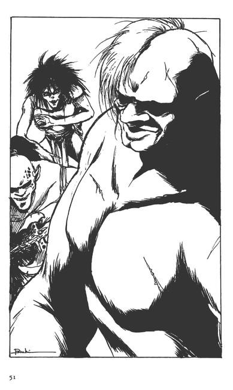
ジャンボ・ジェットで旅行することが当り前になった我々は、飛行機の歴史が浅いのを忘れているが、第一次大戦のヨーロッパ戦線では、飛行機械に乗ったパイロットたちは、一機討ちを戦いの基本と考えたものである。
それは、彼等パイロットが、騎兵隊出身の騎士であったからで、まさに、今のアの国の騎士たちと同じである。
だから、彼等は、発明されて間もないパラシュートを使うことを嫌い、飛行機械を馬と同じに考えて、墜落する飛行機械から、乗り手だけが逃げることを拒んだのである。
そして、飛行機械乗りたちは、空中でレンガや手榴弾やライフルを使って決闘をした。
しかし、地上の戦闘の膠着状態に業を煮やした将軍たちは、飛行機械の力を地上軍の攻撃に利用しようと考えた。
そして、フランスでは、フレシェットという鋼鉄のエンピツほどの矢を地上にバラ撒くことを考えついた。
まだ、七十年ほど前のことである。
一九一五年（大正四年）は、ジョクのような飛行機好きには忘れられない年である。
フランスの戦闘機がホッチキス機関銃を搭載し、やや遅れてドイツの戦闘機フオッカー機が機関銃を装備して、自機に個人の紋章を描いた空のエースが出現した年である。
一方、日本の陸軍と海軍は、青島攻略戦で九十三回出撃しながら、その飛行時間は、延べにして百六十時間という時代であり、それでも、世界で初めて艦隊に爆弾を落したりした。
個人と機械の最後の蜜月時代である。
だから、飛行機好きは、あの時代にあこがれる。
しかし、機関銃の出現以後は、急速に技術が進歩し、騎士や武士精神を持ったパイロットたちは、機械の狂暴な性能の拡大によって、押しつぶされていった。
そして、技術基盤のすそ野が拡がりすぎた現代では、個人の資力では、ひとつの発明もできなくなって、特許権者として企業名が登録される時代になった。
一人のエースは戦術的にも社会的にも邪魔な存在になったのである。
バーンの言葉は、ジョクに、自分がなににあこがれていたのかを思い出させてくれたのである。
「戦術を開拓するか......」
まして、ショット・ウェポンが、オーラ・マシーンと呼ぶからには、それは、個人の力そのものを認める機械である。
これは、人にとって、もっとも刺激的な事態なのである。
「あとは、オーラボム・ドーメのパイロットたちが、我々カットグラ部隊の動きを、どのように補ってくれるかだ。単独の戦闘はさせないようにしなければ、ハバリーにも勝てない」
「そうだな......」
「いいか？ バーン。問題は、将兵にどう分らせて実践させるかだぞ？軍事行動では、オーラ・マシーンの性能などは問題じゃないんだ。一番の問題は、将兵の質の問題だ。騎士一人一人の働きは、忘れろ」
「......集団戦だからな」
ジョクは、しつっこいほど言った。バーンは理解したような口ぶりでも、真実、納得しているのではないのだ、
もちろん、ジョク自身、なにかの小説などで知った考え方で、身についている知識ではないのだが、装備の性能がどんなによくても、それだけでは戦争には勝てないという事実は、ベトナム戦争や中東紛争が教えてくれていた。
「馬も装備の一種だがさ、乗り手次第で馬だって臆病にもなれば、強くもなる。それと同じだ」
ジョクは、そう言った。
「まったくだな。ガロウ・ランヘの対処の仕方にミスを犯し続けたのは、オーフボム・ドーメ、カットグラの使い方を間違っていたせいだと認める。騎士の時代は終ったのか？」
「地上でも同じような歴史があったが......」
ジョクは、そんなことを言いながら、テーブルに座りこんで、強獣のハバリーが編隊で攻めてきた場合の迎撃戦闘の図をえがきはじめた。
まず、オーラボム・ドーメ三機を左右と上に展開させて、その中央をカットグラが侵攻するという四コマ・マンガである。
「上に一機ドーメを出すのがミソじゃないかな？それができなければ、カットグラがこの一番機に代らなければならない」
「なぜだ？」
「分るだろう？ 空中戦では、上に出た方が勝つ」
「そうか......となれば、ハバリーをいかに早く発見して、ドーメを上に上げるかのタイミングの問題になるな？フム、どうしても、集団の力を借りることになるか......」
「騎士としては、面白くないのは分るが、空中戦で強力な飛び道具が使われるようになれば、こうなるさ」
「これが、近代の戦争というわけか......？」
「残念ながら、そうだ。地上だって、七十年ほど前までは、パイロットはみんなバーンのような騎士上がりだった。しかし、一機対一機で戦うのは、十年とつづかなかったよ」
「理屈では分るが、それでは、騎士の名誉もなにもないぞ？」
「しかし、敵を撃墜するのは、カットグラに乗ったバーンだけだ。ドーメが敵を撃墜することはまずない」
「初めに敵に接触してもか？」
「そうさ。初弾で撃墜することは不可能だろう。ハバリーが、強力な火薬を使った飛び道具を使うようになれば、簡単に敵に接近するのは不可能になるからだ......そうだ。このことが一番重要なことだ。ガラリアが攻撃を受けたのは、彼女がうかつだったからじゃない。この教訓を正確に伝えておかないと、オーラボム・ドーメ部隊は、あっという間になくなっちまうぞ？」
ジョクは、最初のコマ、敵と接触する前の編隊の図を描き直しながら言った。
「だから、三機のオーラボム・ドーメの編隊は、水平面に展開するのではなくて、先頭の一機を上におく」
「カットグラは、敵の編隊を発見してから、上昇をかけて、三機のオーラボム・ドーメのうしろ上から、俯瞰するということだな？」
「そうすれば、好きな敵から狙撃できるはずだ」
「ン......理屈だ。これで講義してくれ。あすからは、これで徹底訓練だ」
「仮想敵機の役は、俺がやろう」
「いいだろう。装備より人が先らしいな。やはり......」
「古来変らない原則だろう？」
「ああ......！」
戦争の仕方の原則といっても、所詮は、人なのであると説いたものをジョクも読んだ記憶があるのだが、それが小説なのか別の種類の本なのかは覚えていない......。
バーンは、ジョクの描いたものを手にして、
「これは、大きな紙に絵師に清書させよう......」
「頼む。夕方の講義で、使う」
「ああ......おや？ リムル様？ いけませんな？機械の館周辺は、軍人以外の出入りは禁止ですぞ？」
リムルが、まだウロウロしていたのは、リムルを案内する近衛兵三人の方が、オーラ・マシーンを見学したかったからと分った。
「......ハマダ......聞いているのか？」
先刻、ジョクが怒鳴った男だ。
「ハッ！ 申しわけありません。しかし、リムル様のお供でもしないと、我々には、ここの見学ができません。退出いたします」
リムルは、バーンとジョクのいる部屋に特別なものがないので、入口から入ろうともせず、城の方に戻ろうとした。
ハマダと二人の近衛兵は、きらびやかな衣装を光らせて、それを追った。
「子供らしくない娘だな」
ジョクは、その一団を見送って言った。
「アリサ様がいらっしゃっているので、城にいるのが厭だと言っていたな」
バーンは、ジョクにそう言った。
「ハンダノから来ているのか？」
「知らんのか？ 亭主になる男が、迂闊だな？」
バーンは、そう言うと、ジョクを無視して、馬の方に向った。
「いつ？」
ジョクは、どこか自分が忘れられている存在、でなければ、まだまだこの世界に同化していないのだと感じた。
ジョクも、自分の馬をつないでいる馬溜りに向った。
「ということは、ヤエーも来ているのか？」
ジョクは、オーラボム・ドーメの編隊飛行が頭上を通るのを見送ってから、城に戻ると、自分にあてがわれている個室に向った。
案の定、ジョクのハンダノの財政官のヤエー・ウーヤが待ち受けていた。
「問題があるのか？」
「......はい、新しい畑の開墾の問題で、領地の線引きが不明瞭な点がございまして、ラース・ワウの管財課の者との打ち合せがございました。しかし、なに、問題はありません。ジョク様がハンダノに入られて、前より収穫量が上がり、ラース・ワウは聖戦士の威光であると喜んでおりますので、有利に線引きされるでしょう」
「俺は、何もしていない。お前の働きのおかげだ。感謝している」
「勿体ないお言葉で......」
「この報告書を読んでおけばいいのだな？」
「左様でございます。サインは、最後の書類に......」
「いつ、帰るか？」
「明朝になりますので、それまでに......」
「やっておこう」
「では......」
「いや、ヤエー、お前の家も苦しかろう？ 麦一ガタットの増役をしたらどうか？」
ヤエーは、疑わしそうにジョクを見上げて、ターバンに似たかぶりものをちょっと持ち上げるようにした。
「ハンダノの家計では問題なのか？」
「......戦争は、つづきましょう？ 騎士殿のお支度に金がかかりますので......」
「それは、お前の家でも同じだろう。嫁に出す娘だっていると聞いている」
「可能ですが......」
「分った。月に二ガタット増役しておけ。俺に何かあったら、助けてくれればそれで良い。俺にとっても、貯金みたいなものだ」
「ハッ！ では、来月からいただきます」
「今月からにしておけ」
「ありがとうございます。聖戦士殿」
「ン......後は、頼む」
ヤエーが退出するのと、入れ違いにアリサ・ルフトが入ってきた。
「ご無沙汰です。騎士殿」
「お元気そうで......アリサ様も？」
「ン......ハンダノにはいつ戻れるのだ？」
「当分......ギィ・グッガは、あらたに戦力を整備しているという情報が入っておりますので......」
「そうか......」
アリサは、ローブを外すと、窓ぎわのカウチにドッと身を横たえるようにした。
「ドレイク様にお会いなされましたか？」
「ああ......」
「昼食を用意させましたが？」
「つき合うよ......」
アリサは、背中でそう言った。
ジョクは、埃まみれになった革鎧を脱ぐと、シャワーで身体を流してから、着替えて、アリサのいる居間に戻った。
アリサは、座った姿勢のまま中庭の形良く整えられた植木を見つめていた。
「............」
ジョクは、お茶をいれると、それをアリサの手に持たせてやった。
アリサは鷹揚に受け取り、顔をジョクに向けることもしなかった。
怒っているのではない。王女として育てられた気位の高さが、こういう時に、フッと態度に出てしまうのである。
そんな躾の良さからくるなに気なさを、ジョクは嫌いではなかった。もちろん、時には、横柄に感じないでもないのだが、気位の高さをスルッと見せられると、文句などは言えなくなった。
育ちの良さは、理屈や、ある年齢になってからの学習で身につくものではない。
むしろ、アリサの場合は、家事一般については、母親から厳しく躾られていて、それこそ、安手の女子学生以上に働くことができた。それは、学習によって身についたものである、
しかし、気位というものは、そういった種類のものではない。
「......機械の館で、リムル様に会いました。元気の良い王女ではありませんか？」
「......子供のうちは良い、何を見ても面白いのだし、環境が変っても、受け入れるだけの適応力がある。しかしな、わたしの年齢は、自分でも厭になるくらい感じやすい。自分でもどうしたら良いのかと、迷う......。ルーザとて、悪い女ではないのだろうが、父と結婚できることをどこかで自慢しているようで、謙虚さがないのだよ」
「ああ......ドレイク様の新しい奥様でいらっしゃるから......」
「まだ、婚礼の儀はすませておらぬ！」
アリサは初めて膝を廻して、ジョクを見た。
「そうです。が、自分の言いたいことは違います。ルーザ様のお育ちは違います故......」
「ああ、そういう話か......構わぬよ。わたしに言う分には......ジョクは、そういうことに、気をつかいすぎる」
「そうですか？」
「このコモン界に、慣れぬのか？」
「そりゃ、アリサ様のような方の判定をいただかない限り、自分では分らないことです」
「......そうだな......この茶は、ジョクがいれたか？」
「はい......」
「そうだな......」
アリサは、カップを見つめた。その姿は、逆光のためもあって、ひどく老けて見えた。
「ジョクは、いつまでも地上人か？」
あげた顔にも、生気がないようだった。
「......そうですね、時間が解決してくれるでしょう......」
ジョクは、どうして、と聞くのはやめていた。
ドレイクの再婚について、アリサはどうしても承諾しきれないものがあるのだ、しかし、アリサは、今日まで、決してそのことでジョクに愚痴を言うことはなかった。
アリサがジョクのハンダノ城に寄留したことで、ジョクと結婚するのではないかという噂が公然のものになっても、まだまだジョクとアリサの間に、それほど深い理解があるわけではない。
「母方の者が住んでいた街は、ギィ・グッガによって全滅させられ、わたしが身を寄せるところはない。本当に引っ越すが、いいな？」
「光栄です。アリサ」
ジョクが、『様』をおさえた気持をアリサは感じたようだった。ニッと白い歯を見せてから茶をすすり、
「前にも言ったことがある。わたしが知らぬところでは、好きにしていい」
アリサは、冗談のように言い、食事の支度ができたようだ、とカウチから立ちあがった。
ジョクは、アリサの手からカップを受け取ると、その頬にキスをした。
「優しいのですね？」
「......そうですか？ アリサが、疲れていらっしゃるから、そう感じるのでしょうし、そう感じられるのは、アリサ様もお優しいからです」
「ありがとう」
アリサは、ジョクの腕をとって、入口の方に向った。
二人を迎える下働きの者が、ドアをノックするのが聞えた。
６ トレンの発進
「...............？」
トレンは、数人の女戦士たちの怒声に、馬の脇腹を蹴って、馬首をめぐらした。
「フェラとやったってのか!?」
「やっちまえっ！」
「見たんだな!?」
「見たよ！ 水のなかからフェラリオを出して、やってやがった」
二人の男を前にして、十数人の女戦士たちが、一人の男を地に押し倒して詰問しているところだった。
サラーン・マッキの水牢があるわきだ。
「やってねえ！ はめようとしたら手前等が来たんじゃねぇか！」
地に這った太ったガロウ・ランは、下半身を剥き出しにしたまま、それでも逃れようとして、脚をバタバタやった。
「なに言ってやがる！」
二人の女戦士が髪の毛をふり乱して、かがみこむと、その股間のものを引っぱるようにしたらしい。
「フェラの臭いがするよ？ いれやがって！」
「そんなこっねぇ！ フェラは、股を拡げただけでも、臭いがつくんだ！」
「うるせえんだっ！」
サラーン・マッキを清水のなかに漬けておくと、精力を回復して、また、地上人を呼べるという。
トレンは、彼女のおかげでバイストン・ウェルに降りてきた男で、もともと、サラーンとは縁があると言えた。
「トレン！」
その女の声は、トレンの背後から聞えた。
「......？ ミハ？」
彼女も跨る馬をつぶすのではないかという大きな身体である。革の胴巻きの下からはみ出た腹の肉が、部厚く下のパンツに垂れさがり、腕などは、トレンの大腿部ほどあると見える女丈夫である。しかし、黒の髪といい、それなりの器量といい、ガロウ・ランのなかでは美しい部類にはいった。
その上、トレンに見せる気の良さは、ガロウ・ランのなかで、トレンに話ができるただ一人の女性であった。
ガロウ・ランが人ではないというのが正しいとすれば、その理由は、容貌よりも、その頭脳にあった。
テレパシー的なものが利用できるバイストン・ウェルではあるが、彼等、ガロウ・ランの意思は、混濁しているか空疎である。意思を感知しようとしても、何も感じられない者もいるのである。
それは、ガロウ・ランのなかでもレベルが低いもので、肉体だけが存在しているという手合である。それは、動物以下であると言えなくもない。
しかし、さすが空疎そのものというガロウ・ランは少ないし、それでは、ガロウ・ランのなかでも長く生き続けることはできない。
人間の世界には、そのような存在のものでも、生き永らえる社会的な構造があった。
それらの弱者が、どのようなタイプのものと特定するのは難しいが、たとえば、昔、『村』というレベルの共同体が庇護しなければならなかった『神懸ったもの』といわれる存在である、という言い方は許されるだろう。
それらの弱者は、村全体の意思が容認する限り、生き延びることができた。
それは、弱者を守らなければならないという思想とは違って、村で一番の弱者を生き延びさせることによって、村全体の存続基盤を維持しようとした結果である。
その発意がどこにあろうと、一番の弱者を生き延びさせるという意味は、弱者庇護や福祉の発想ではなく、コミュニティが存続するための最低限の倫理であった。
それができなければ、そのコミュニティは、存続する力を喪失する。それが、自然と隣接して生きなければならない時代のコミュニテイのあり方だったのだ。
ガロウ・ランには、そのコミュニティの概念がない。
強者のみが生き延びる世界である。弱者は、一瞬にして抹殺されるのである。
それがガロウ・ランであり、自然に隣接しない生き方をしている現代の地上世界と同じである。
「なんだ？」
「リンチ！」
ミハは断固として言ったが、トレンはそれを無視した。
無視すれば、ミハの鞭が飛んでくるかも知れないという危惧があったが、トレンにも、ガロウ・ランの世界で生きるコツは多少分ってきていた。
仲間と見なされれば、こちらに断固とした意思がある限り、彼等は、黙って引き下がるのである。
しかも、トレンは、ギィ・グッガの承認という圧倒的な鑑札をぶらさげていたので、ミハは柔順にちかい態度をみせた。
「ゲヘッ！」
その男の声は、その次のボドッと堅い物が落ちる音で終った。
わーっと女たちの歓声が上がり、トレンは、女たちの輪の外に落ちた男の生首を見た。
しかし、女戦士たちは、そんなことは気にもせずに、
「下もだ！ 斬っちまえっ！」
そんな掛け声で女たちの体が、またも一点に集中した。
「まだ、動いていやがる！」
「こんなチンポッ！」
なかの背丈がきわだって高い女が、その手につまんだものを、他の二人の男に見せながら、
「フェラとやるとお前たちのも、こうしちまうからな？」
と言い、それをサラーンの沈められている窪みの方に持っていった。
「............!?」
トレンは、生首が転がっているのも忘れて、馬を走らせた。
「なんだよ？」
女戦士の一人が、見慣れないトレンに眉をしかめたが、制止はしなかった。
「ホーラッ！」
背丈の高い女戦士は、つまんだものを横木を伏せてある窪みに放りこんだ。
暗い窪みの下でポチャンという音がした。同時に、ザワッと水が鳴り、薄暗い窪みに白いものがゆらめくと、次にザバッと水音が激しくなって、サラーンの半身が現れた。
その姿は何度見ても、幻のように見えた。
「............!?」
窪みの脇に馬をとめたトレンには、怯えた声をあげるサラーンの両手が、格子の横木にかかって、這いあがろうとしているように見えた。
「あがんじゃない！ 手前が、股にくわえこんだチンポだろう」
女戦士たちが、格子にかかった白い手を蹴った。
なかには、踏みつけて下に押し戻そうとする女戦士もいた。
「捕虜が水責め......？」
トレンは、何度かサラーンと逢引をしたものの、すべて夜中である。
白昼に、半裸の女性が、窪みの水溜りのなかに閉じこめられて、格子をかぶせられているのを見て、トレンは、中世の魔女裁判の光景を連想した。
女戦士が放りこんだものなどは見えはしないが、サラーン・マッキは、その異物が自分の呼吸する水のなかに放りこまれたので、ひどく怯えた。
「なんだい？」
「地上人だ。触らない方がいい」
女戦士たちはやることが終ったのと、トレンの存在が分ったので、あっという間にその場を退散した。
興味をそそるものがなくなった瞬間に、そのことを忘れるのがガロウ・ランの習性である。そして、危険なものには、絶対に近寄らない習性も持っていた。
このばあい、トレンもサラーンも女戦士たちには、危険というか面倒な存在なのである。
トレンは、格子の間から、まだ上半身を水面上に出して、震えているサラーン・マッキを覗いた。
その哀れな姿は、ただただ、愛しかった。
「サラーン。なんとか、早くこんなところから出してやる。もう少し待っていろ」
「......トレン様......？」
フェラリオは本能的に哀願の色合いをみせた。媚びであった。
「ギィ・グッガと約束をしたんだ。待っていな」
「いつまで......待つの......？」
「それは......」
言いかけて、トレンは、かたわらにミハが来たので口を噤んだ。
「フェラは、汚ねぇよ」
ミハの憎悪は、トレンに明確に分った。
ガロウ・ランの兵士レベルの意思が、このように明瞭にトレンのなかに飛びこむのは、めずらしいことである，
「俺を地上から呼んだ女なんだ、こいつ......」
「............!?」
ミハの混濁した意思がトレンに感知された。
トレンが、フェラリオの仲間ではないかという疑惑と、ギィ・グッガが大切にする地上人という概念が混乱するのである。
「俺は、フェラリオの住むもっと上の世界の人間なんだよ。あの女が呼んだんで、俺はここに来た」
「フェラが、また仲間を呼ぶか？」
「そうだ。機械を作る人間をな」
ミハの混濁は、渦を巻くようだった。
トレンは勇を鼓して、またサラーンを覗いて、その手に触れながら低く言った。
「お前が地上人を呼ぶ時が、俺が、機械を直した時、だ」
トレンは、期限の話を思い出させるようにゆっくりと言った。
「ああ......！ でも、こんなんじゃ、地上人は呼べません......」
サラーンは、ミハの存在を意識して、怯えの色を濃くして言ったが、その視線は、トレンの瞳にしっかりと裾えられていた。
「......そうだ。フェラ、そうすりゃ、放してやれる」
ミハの言葉に、サラーンは真白な額に濃緑色の髪を張りつけた肩をプルと震わせた。
その長い濃緑色の髪は水中で藻のようにひろがって、下半身を隠していた。
「......地上人のお方......努めましょう......」
「そうだ。その美しさは、まったく、この世のものとは思えないのだから......」
トレンの言葉に、サラーンは水面から上体をあげるように身じろぎをして、豊かな乳房をフワリと水面上に浮かせて見せた。
そして、スルルルと全身を水面下に沈めていった。
その時、下半身が濃い緑藻から抜けて、トレンを誘うように見えた。
「地上人！ 退れよ」
さすがに、見張りの男たち二人が、トレンを追い出しにかかった。
「分ったよ」
トレンは立ちあがり、ミハがジロッとトレンを凝視しつづけていたのを知った。
「ミハッ！ 汚いものを水のなかに入れられたおかげで、フェラリオが地上人を呼べなくなりそうなんだ。この話、ギイ・グッガに伝えておいた方がいいぞ！」
トレンは、取り繕うようにおおきな声で言った。
「ああ!? そうか、そう言ったな」
ミハが、うろうろとそう答えた時、その背後に、数騎の騎馬が接近するのが見えた。
「ミハッ！ 地上人はっ！......いるじゃないか？」
それは、ビダ・ビッタの一行だった。
「あれが、ビダか？」
「ああ、あんたを呼びに来たんだ、ビダと行くんだろ？」
「そう命令されている」
ミハは、ビダに頼まれて、トレンを呼びに来たのを忘れていたのである。
ガロウ・ランは、いつもこうなのだ。
ビダたちも、サラーンの水牢があるのを知って、ひとしきり騒いでから、トレンを騎馬隊の中央に置いて、ギィ・グッガの本陣を出発した。
その時、トレンは、ドーレブにサラーンの件を伝えた。
「あんなものを水牢に放りこまれては、怯えるのも分るというものです。あれで、地上人を呼べなくなるとサラーンは言っています」
「......そうか......それはそれで気をつけさせよう」
「俺だって、ああされたんじゃ、気が離れるというものだ」
と、ドーレブに耳打ちした。
「分る。地上人。機械を直せる男たちを連れてくれば、あの女は、お前のものになるように、わたしからお館様に申し上げよう」
「......大丈夫なのか？」
「ガロウ・ランと言えども、軍を指揮なさるお方だ。功績があれば、報奨はお考え下さるよ」
ドーレブは、まるでコモンの策士のようなロのきき方をした。
そして、トレンが、半ば疑わしそうな顔を見せながら、ビダたちと谷間を下っていく後姿を見送りながら、ドーレブはギィ・グッガに言った。
「あれで、あの地上人は、裏切ることはしますまい」
「フン......地上人とフェラリオ、使いようだな......」
白面の巨人はせせら笑うと、居室に逆さ吊りにしておいた女たちの方に向けて、その棍棒をそそり立たせた。
７ 刑場にて
「なんで急ぐ！」
「急ぐ！」
トレンの質問に、そう答えるのがビダ・ビッタだ。説明は億劫がってしてくれない。それに続くガロウ・ランたちも、黙々と馬を駆った。
そのガロウ・ランたちの乗馬技術は、近代の馬術にくらべて粗暴ながら、実戦的であった。
トレンも趣味の乗馬とはいえ、かなりラフに乗りこなす自信があったのだが、半日ぶっとおしで走ると顎を出した。
ビダ・ビッタを始めとするガロウ・ランたちは、馬がつぶれることも気にならないようだった。
角を持った驢馬のような馬も強靭だった。全身にうっすらと汗をかいても、その脚力は衰えることを知らない。ナラやミハのような女たちを乗せていてもそうなのだ。
「ブラバはラース・ワウに入ったらしい！」
すでに、オーラの光は薄くなり、天頂に星の光に似た燐光が輝きはしめた頃になって、先頭のビダがようやく説明してくれた。
その時は、トレンは、返事ひとつできない状態だった。
「ヘッ！ ヘヘヘヘ！」
この一行についてきたミハは、そんなだらしのないトレンを笑った。
コモン界の昼夜を分けるオーラ光が暗くなって、天にひろがる星の光は、コモン界の上の界、ウォ・ランドンの海底に生息する魚たちの鱗の光だという。
夜半ともなるとその光は、地上で見る星そのものと思える輝きを見せた。
......空気が冷たい......。
小さな谷間に水の流れを見つけると、ビダ・ビッタは、食事の支度を命じた。
いままでは必死に馬を駆っていたガロウ・ランたちは、忘れたように静かになって、馬から飛びおりると、飼い葉用の枯れ草を集める者、水をくみに行く者、馬の身体を藁でこすってやる者と、命令された仕事を黙々と始めた。
その間、ビダは、ひとつの岩の上に腰を下ろして、八人の部下の動きを監視する風だったが、普通に言うような気配りを見せているのではなかった。
ただ呆然と空と山と前方の地平を眺めているだけなのだ。
トレンだけは、そのような任務は命令されていない。ビダに庇護されているのである。
彼は、息をととのえるために、ビダの岩の下に仰向けになって、ゼェゼェといつまでも激しい息をついていた。脚は、まだ閉じることができず、鞍に跨ったままの恰好で、天に向けていた。
「それで地上人けぇ？」
ビダが一度だけ岩の上から笑った。
「すまないな。俺たちは、車輪のついた機械に乗ることはできるから、馬はいらないんだ」
「コモンの女も、半日やりゃあ、股は閉じられねぇもんなあ......ケケケケ......」
笑う時に膝を合わせて、両腕で抱くという癖は、ガロウ・ランの粗野な性格に合わないような気がした。ビダの腰には、鎖のついた鉄球がジャラジャラと揺れているのだ。
「......ケケケ......」
ビダは、笑い終った時には、もうその話題を忘れて、鼻をほじりながら、また周囲を見回しはじめた。
意思が伝わるだけ、まだビダという男はインテリジェンスを持っているのだろうが、今は、呆然とした空虚な意思が感知されるだけだった。
トレンは寝たまま顔をねじむけて、異形のガロウ・ランたちがそれぞれの仕事をするのを見やった。
ミハも両手に水をくんだ革のバケツを持って、川から上がってきた。
「たいしたものだ......」
トレンは、この世界が大きく変りはじめているのだろうと思った。
軍隊という組織的な動きを学習することによって、文化を持たないとされるガロウ・ランたちが、近代的な社会を建設する下地を手にし始めているという認識である。
しかし、個人としてのガロウ・ランは、まだまだ粗暴である。言ってみれば、北欧人のベルセルク気質が、日常でも持続しているというのが彼等なのだ。
トレンとしても、逃げ出せるものならば逃げ出したいのだが、逃げるあてなどない。ラース・ワウに到着するまでは、堪えるしかなかった。
しかし、その間に、ビダの気が変ったりして、殺されることだってあり得るのだ。
「......それに、サラーン・マッキだ......」
トレンは、漠然と、ラース・ワウの軍がギィ・グッガの軍を殲滅した時に、サラーンを救出する英雄的な自分の姿を思い描いていた。
ミハが自分の馬の鞍から木片を取り出して、火をおこしはじめた。棒を錐のようにつかって簡単に炎を出した。
「たいしたものだ......！」
トレンは、また感動した。
彼の懐中には、安いライターや、十数本のマッチがまだ残っていたが、もう、そういうものを簡単に見せびらかすことはしなかった。ギィ・グッガが興味を示しても、壊れている、故障していると言って、使おうとしなかったのである。
いつまで生きられるか分らない状況であるが、長く生きれば、ライターひとつにしても使いようがあるのは事実なのだから......。
「......メシだ」
ビダは、焚火ができたので、岩からヒラリと飛びおりて、トレンの脚を蹴った。
「ナラっ！」
飼い葉の用意をしていた女戦士を呼んだ。
「アアッ！」
ナラとミハは、その頑丈な身体つきに似ず、まめに食事の用意をした。大豆に似たものを銅製のコップで煮て、あとは、肉の燻製ひと切れである。中世の農民の食事と同じだと思えば、食べられないことはなかった。
食事が終ると、トレンに我慢できない光景が展開された。
ビダとナラが、仲間が見ている前で、まぐわうのだ。それを見て楽しむ者、自分で済ませる者もいて、その猥雑な光景には、つきあっていられるものではない。
ミハまで鼻を鳴らして、トレンの股間に手を伸してきた。
「勘弁してくれ。疲れている」
トレンは、やんわりとミハの手をどけると、焚火の火が届かない場所に移動した。
しかし、そこにも、ナラの歓喜の声が、狼の遠吠えのように聞え、ややあって、ミハの歓喜の声もまじった。
「まったくっ！」
人間のかたちをしたものが、よくもこんなことができるものだと感嘆はしても、容認できる光景ではない。
他に楽しみがないのだから仕方がないという考え方もあるし、太古の人間はガロウ・ランのようなものであったろうと、理屈では分っても、別の文明を身につけた者にとっては、ひどい光景と言う以外なかった。
革ベストをジャケットの上に羽織ったトレンは、乗馬で十分に痛んだ内股をマッサージしながら眠ろうとした。疲れと恐怖が息をつく間というものは、人をまたたく間に、眠りに導くものだった。
しばし、まどろんだ。
と、トレンは、ザクッと地を打つ音にギョッとして眼を開いた。数人のガロウ・ランが、彼を見下ろしているのが目に入った。
「死ぬぞ！」
ミハが言った。
「馬鹿なんだ！」
別のガロウ・ランもトレンのことをそう言った。
トレンが上半身を起した時、別のガロウ・ランが剣を振った。
「なんだ......!?」
剣を振ったガロウ・ランは、トレンの脚のすぐ脇に、その剣先を突きたてた。
「............!?」
その剣先には、さそりに似たものがビクビクと尻尾を震わせていた。
「死んでたぜ！」
ペッと唾を吐いたミハは、トレンの腕を掴むとヒョイと引きあげた。たいした腕力である。
「出るぞ！」
彼等の背後からビダ・ビッタが怒鳴った。
その号令を聞いて、トレンはガロウ・ランを見直さなければならないと感じた。まさか、夜の行軍があるとは考えていなかったのだ。
「.........なんで!?」
「ブラバが気になる。負けたくない！」
ビダは厳然と言い放ち、腰の厚い革ベルトに鎖と鉄球のついたものをからげると、ナラを馬に跨らせてから、自分の馬に向った。
一行は、闇の平原を疾駆し始めた。トレンは、ただ遅れまいと懸命についていくだけだ。
＊ ＊
「ヘッ！ へへへ......うめえ？」
「うめえ......うめぇよ......」
その小さな男は、背中の羽根をブルブル震わせると、キャップにそそがれた米の研ぎ汁のような酒を呑んで、ヒックと大きなしゃっくりをしてから、ドタッとカウンターの上に仰向けになって、自分の腹をさすった。
「ヘヘヘ......」
ブラバは、その羽根つきの男のだらしない恰好を、うすら笑いを浮べて見ているだけだった。
「飽きないのねぇ？ そんなの相手にすると、馬鹿をみるよ」
奥から出てきた小柄な女は、洗い桶で手を洗っていたが、羽根つきの男の寝ているカウンターに手を伸すと、男の身体を払った。
「痛ぇっ！」
羽根つきの男は、バタバタと羽根をふるわせると、フラフラと飛んで梁の一角にかじりつくようにしてとまり、梁の上に姿を消した。
「......どこで会ったかねぇ？ あんた？」
「......あ？ へヘヘ......」
ブラバは、卑屈に笑いながら、言葉がよく分らないというふうにロを指差してから、足下の麻袋から油紙に包んだものを取り出して、それをカウンターの上に置いた。
「......売るんだ」
紙包みを開きながら、それだけは、言えた。
「あら、いい陶器じゃない？ 水差しだね」
小柄な女は、七宝焼きに似た水差しを手にして、
「そうか、こういうの売っているの？ 怖そうな人だからさ、何かってさ......」
「ブラバだ。へへ......」
ブラバは、自分の顔を指差して、あとは笑いでごまかすと、カウンターに粗末な銅貨を置いて立ちあがった。
「あら？ もう帰るの？」
「......商売、商売......」
ブラバは、そう言いながら、ドアを開いてかがむようにして、外に出ていった。
「あ！ これ！」
小柄な女が、あわてて油紙に水差しをくるもうとすると、ドアの向うでブラバが手を振ってみせ、ドアを閉じた。
「フン！ こんなことで、コネをつけようってさ！」
小柄な女は、そんなことを言いながらも、水差しをガス灯にかざして、ニタリとした。
「バーン様に鑑定してもらうかな？」
女は、ニコッとするとそれをゆっくりと油紙でくるみ始めた。
この店は、ジョクがこの世界に降りて来て、初めて食事し、寝た場所である。
女は、ステラ......。
ガロウ・ランのブラバは、警戒が厳重になったラース・ワウの城下街に潜入して数日たっていたが、ステラの店に来たのは、今夜が初めてである。
彼は、トレンとサラーン・マッキを拉致した時、ステラとは闇のなかで一度顔を会わせていた。
その事がブラバを、この店に来させることになったのだろう。
彼は、この数日、漫然とラース・ワウの城の周囲を徘徊してみたのだが、穏当にラース・ワウに潜入する方法は思いつかなかったのである。
だからと言って、以前のように力ずくでラース・ワウに忍びこむことは、今のブラバにはできない事情があった。それもこれも、ブラバが、ガロウ・ランとコモンの人間の違いについて研究に研究を重ねた結果であった。
彼は、オーラ・マシーンがラース・ワウの街の上空を飛ぶのを見て、いってみればカルチャー・ショックを受けたのである。そして、ギィ・グッガの軍の強獣部隊が、アの国のオーラ・マシーンに殲滅されるのを見て、ブラバにもショックの実体がかすかに分ったのである。
戦後、ブラバは、何人かのコモンの商人を襲い、彼等をすぐには殺さずに、コモン世界の習慣、考え方、人づき合いの方法を教えてもらった。
用がすめばあとくされがないように殺すのだが、そのブラバのやり方を見て、彼の手下は彼をうとんじ、逃げだしていった。彼の女であるはずのナラも逃げ出して、ビダ・ビッタについた。
つまり、ブラバは、戦士という尊敬される立場を失っていたのである。
しかし、ブラバは、自分のやり方は間違っていないように思えて、ギィ・グッガに、一人でラース・ワウに行く許可をもらったのである。
一軍を指揮するギィ・グッガは、ブラバのやる事が成功するとは思えないまでも、可能性のある仕事だと判断してくれたのである。
それがブラバにとって、ただひとつの救いだった、そういう経緯があるから、今のブラバには、部下はいない。
「昔からのガロウ・ランのやり方では、機械には勝てねぇんだ」
それがブラバの考えである。
「トレンって野郎も言っていた。機械を作る人間を、機械もろとも盗んでくるしかねぇんだ」
その機械をもってして、戦うしかないというのがブラバの発想なのである。
幸いというか、そうであるからこそ、ブラバは、思考を変えることができたのである。
彼の容貌はガロウ・ランのなかでは、かなりコモンに近い。それが、彼に、次のステップをのぼることを可能にしたのであろう。
彼は、以前、ラース・ワウに潜入するのに使った街外れの小屋に腰をすえていた。
しかし、以前とまったく風体が違っているために、周囲の人は、ブラバを野盗づれとは見なかった。
商人の恰好をして、陶器商人から奪った木の鑑札を携帯し、数頭の馬に恰好だけの荷を用意していた。
もちろん、その荷物のなかに、武器をひそませるぐらいのことはしていた。
「疲れるもんだぜ......」
ブラバはいつになく疲れる自分の身体を藁の山のなかに横たえて、闇を凝視した。
戦いで感じる以上の疲れが、ブラバを責めさいなんだが、それはそれで、ブラバに優越感を感じさせるものだった。
その後、ブラバは、日中は商売をしている風に見せて、ステラの店に通い、何日目かに、ステラからいい話を聞きこんだ。
「あの水差し。バーン様が誉めてくれたんだよ。コントバのものだってねぇ？」
と。
「バーン様？......騎士バーン？」
それは、ラース・ワウの城下町で、よく耳にする名前だった。
「そうだよ」
ステラは、小鼻をふくらませて、得意そうに言ったものだ。
ブラバは、いつものように酒をのみながら、待った機会が来たと感じたが、いつもの無口を続けて、そして、いつもの小屋に帰っていった。
「バーン・バニングスか......」
オーラ・マシーンのカットグラを操縦する騎士。
狙うには、いい相手だった。
しかし、ステラとバーンの関係がどうであれ、ステラを拉致しただけでカットグラが手に入れられるとは思えなかった。
「どうする？」
それ以上の事は考えられないブラバである。またも、疲れて寝入った。
考えるということは、体力を消耗するとつくづく感じる最近のブラバである。
その翌日......。
ブラバは、ラース・ワウの刑場で、ガロウ・ランが吊されるという話を耳にし、街の人々に交って見物に行った。
「へ......？」
街の外れの刑場には、数百の人々が集まっていた。
一方には、街の最外部の家が一軒ポツリとあって、そのバルコニーで、数人の高貴な人々が見物していた。
「......城の者か？」
ブラバは、人の群の間を、気づかれないように移動して、バルコニーをあおいだ。
しかし、近づくことはできなかった。
家の周囲には、城の兵が警戒線を張り、一般の人々を寄せつけないようにしていたからだ。
「騎士様が？」
そんな娘たちの嬌声もあがったので、ブラバは、バルコニーの若い男たちや老人夫婦を見ていった。
「バーンとか、地上人がいるのか？」
しかし、識別できる距離ではなかったし、それだけの知識もブラバにはなかった。
「うわーっ！」
人々の一角で喚声が起り、騎馬隊が囚人をひいて、広場に現れた。
「......ビダの手下じゃねぇか？」
三人のガロウ・ランが、うしろ手にギリギリに縛られて、人々の罵声のなかを刑場の中央の絞首台に追いたてられていった。
「ガロウ・ラン共への見せしめである！ ガロウ・ランは、ラース・ワウに近づくことなどはできないことを思い知るがいい！ラース・ワウを望むナア・バァで、召し取られたガロウ・ラン！生きながら千切られ、焼かれる姿に他のガロウ・ランよ！恐れおののくがいいっ！」
刑執行人の宣言のあと、三人のガロウ・ランが、絞首台の上に引き上げられた四輪車の車輪に手足を拡げてくくられると、その四輪車はガラガラと絞首台の階段から落とされていった。
「ウゲーッ！」
すさまじい悲鳴が、生きながら手足を砕かれた三人のガロウ・ランのロから漏れた。さらに、その四輪車は、牛に引かれて刑場を数周した。
「............！」
その残酷な刑を見物する人々は、歓声を上げてはやしたて、ガロウ・ランを罵りつづけた。
「チッ！ ビダ奴......」
ブラバは、ひとり口のなかでののしった。
その場を出たかったが、刑はまだ続いていた。となれば、動くことはできない。
他の人びとと違った動きをして怪しまれるのは、得ではなかった。
手足を踏み砕かれた三人のガロウ・ランは、まだ死んではいない。三人をくくった四輪車が再び絞首台に押しあげられ、絞首台は、半ば血で汚れた。
その台上で、刑執行人は、鉄のバケツから真赤に焼けた鉄鋏を取り上げ、その赤い爪で、ガロウ・ランたちの脇腹をつまんだ。
「残酷なっ！」
ブラバは、呻いた。
そのブラバと同じかそれ以上の嫌悪感で刑の執行を見ている者がいた。
ジョクとマーベル・フローズンだった。二人は、刑場に面した建物のバルコニーにいたのである。
しかし、ジョクは、とっくの昔に刑などは見ていなかった。刑場を背にして、部屋の中央のテーブルでこれも肩を丸くしているマーベル・フローズンの背中を見つめた。
「そりゃ、気持ちのいいものではない」
バーンは苦笑したものの、見なければならない、とはさすがに言わなかった。
「察するに、地上世界は、天国であるのだな？このような刑が必要でないというのならば......」
「そりゃ、中世のヨーロッパにもこんなことはあったけど、現代よ！今はっ！」
マーベルは、眉をしかめ口元をおおって、ようやくバーンを見返した。
「しかし、ガロウ・ランは人間ではない。地上人の方が感じるほどに、むごいことではないのだがな......」
バーンはムッとした様子で、「ニー！」と隣の部屋で見物をしていたニー・ギブンを呼んだ。
「ハッ！」
「マーベル様を城までお守りして！」
「ハイ......！ 騎士バーン」
ニーはマーベルの脇に立って、手を差しのべた。
「臭うわ......」
マーベルは、肉の焼ける臭いのことを言った。
「しっかり」
ジョクは、いろいろな意味をこめて言ったつもりだった。
マーベルは、何も答えずに、ニーにともなわれてドアに向った。
外で、ブラバは、とどめを刺してもらえないガロウ・ランの囚人たちが、刑場にさらされたままになっているのを確かめ、何人かの人々が刑場を立ち去り始めたのを見届けると、刑場を後にした。
「......ナア・バァの森と言っていたか......？」
８ ブラバとビダ
その日の午後、ブラバは市門にいた。彼にとっては、難しい芝居をうっているところだった。
「街を出るのではないのか？」
「ヘヘヘ......ここで陶器に合う土を捜す......」
つまり、午後は、夕方まで土捜しに行きたいから、出してくれと言ったのだ。
「陶器の商人か？」
市門の番兵たちは、空馬を引いたブラバの恰好をジロジロと観察して、
「メットゥール・メット。ヘド・ンバラの者だな？」
「ヘド・ンバラン！」
ブラバは、大きく頷いてみせた。
番小屋の奥で、出入りの者の書類を照合した番兵の長が、なにごとか書きこんでから、
「暮れ前には、門は閉じるぞ！ そしたら、商人の鑑札があっても、門は開けねぇ！」
兵の一人が偉そうに言うと、ブラバを、解放した。
これだけのことだが、ブラバにとっては、大仕事だったのだ。馬に跨るとフッと息をついてから、ナア・バァの森とおぼしき方向に馬首を向けた。
ガロウ・ランならば、嘘は得意かもしれないと想像するが、それは違う。嘘をつくためには、嘘をつくための知識が必要なのだ。
ブラバには、まだそれだけの知識はなく、つけ焼き刃の知識であるために、苦労するのである。
単純な出入国ならば、黙って鑑札を示して、行く方向に身体を向けておけば、ことが足りるのだが、この場合のように、ちょっと出て、また帰ってくるという意思を伝えなければならない時は、ブラバに緊張を強いる。
「......ビダ・ビッタ奴......」
彼とは近い関係ではないが、知らない顔ではない。
ギィ・グッガの軍で初めて、ラース・ワウに潜入してアリサ・ルフトを拉致してきた男である。ブラバがトレンとサランを拉致したのも、ビダに倣ってのことであった。
ブラバは、ガロウ・ランの習性に従って、ナア・バァの森からまっすぐにラース・ワウを離れる方向に馬を走らせた。同じ習性を持つ者であれば、どのような方向に走るか、逃げるか見当がつくというものである。
森から湿地帯を抜けて、数軒の農家が無事であるのを見ながら、進路を山の方向に取った。
さらに、小一時間、走る。
コッコッ！ 鶏が木々の間に走るのを見て、ブラバは、その鶏を追った。
そこにも一軒の家があった。炭を焼いている小屋の脇に、そまつながらも人が住む小屋があった。
「............!?」
その小屋のうしろ手には、水が流れる音があった。
「水か......！」
ブラバは、またも、コモン人から教えられたことを思い出して、馬をその小屋の脇に乗り入れていった。
「すまない！ 水が欲しい！ すまない！」
小屋のなかに人の気配があったが、ブラバは平静を装い、炭焼き小屋のけむりを見やった。
住いの方の小屋のドアがゴトッと鳴った。
「水なら、お好きにどうぞ？」
ドアの隙間から覗いた老婆がボソボソと言った。
ブラバは、女の顔を見て、『手前なんかの股は覗きたくもねえ！』と思ったものだ。
「ごめんなさい」
ブラバは、知っているアの国の公用語のひとつで言葉を並べたてた。
「怖いことがあったのか？ 最近？」
ブラバは、そう言いながら馬の手綱をとって、清水の音のする裏の方に移動した。
「娘が、殺されましてなあ......」
ボソボソした声が耳に入った。
「いつ？」
その聞き方でも、外国人であれば、相手は疑いもしない。
「昨日なんですよ。ガロウ・ランが、娘夫婦をメチャメチャにして......」
「............！」
後の言葉は聞えなかった。ブラバは、清水が流れ出る木の樋の前で、ニタリとした、
ブラバは、愛想笑いのひとつ、悔み言葉のひとつも言わずに、馬に跨ると一路、山のなかに分け入っていった。
「ヒューッ！ トロットロッ！」
ブラバは、口の先をすぼめて、両方の手で口の左右を囲んで鳥の鳴き声の真似をした。その声は、山々にこだまして、消えていった。
ブラバは、左右に山を見ながら、ポクポクと馬を歩ませていた。
「ピョョョ......！」
応答があったのは、それから間もなくだった。明らかにビダの手下の者は、かなりの間、ブラバを観察していたようだ。
右手の下の熊笹に似た平坦なしげみが、風もないのに鳴った、そして、そこに二人の顔がポッカリと浮んだ。ミハとモドドだ。
「ビダの手の者だなっ」
ブラバは先に言うと、自分の名前を告げ、ビダを呼べといった。
「手前がギィ・グッガのもんだって、分らねぇ！」
ミハが怒鳴った。
「すまねぇ。コモン人に化けているから、こんな恰好をしているんだ。俺は、同じ言葉をしゃべっているブラバだぜ！」
「待ってな！ 動くんじゃねぇ！」
女の方がそう言うと、風のように熊笹の繁みのなかに消えていった。残ったモドドは、パカンと口を開いて、ブラバを見つめていた。
そのモドドを馬鹿だと感じないのがブラバである。
「......ヘヘヘッ！」
笑いが熊笹のなかから聞え、山の景色を背にして、ビダ・ビッタがヌーッと姿を現すのに大して時間はかからなかった。
「なんだ！ ブラバ！」
ビダは、自分がブラバに先を越されずにすんだらしいことが嬉しいのだ。その背後から、ミハ以下、数人のガロウ・ランの手下たちが上半身を現した。
最後尾にトレン・アスベアとナラがいた。
「............!?」
「地上人を連れていたのか！」
ブラバは、絶句した。
ビダのような男が地上人を連れてラース・ワウの近くまで来ていたことに唖然としたのだ。
ブラバの姿に、ナラはおよび腰のように見えたが、だからと言って、恥じもしなければ、馬鹿にした風も見せなかった。前の男だということを忘れているのかも知れない。
「......難しい話があるんだぜぇ」
ビダが嬉しそうに言った。
「フン！ 昨日、ラース・ワウの兵隊に、手下が三人もやられたな！」
「そんなこたぁ、ねえ！」
ビダが気色ばんだ。
「いいんだよ。俺は見たんだよ、三人は、コモンに手足をメチャメチャにされて殺された。リンチだ」
「本当か？」
「見世物になっていた。コモンのリンチは、ひでえのを知っているだろう？」
ブラバが説明すると、さすがにビダの一統は、うむーっと唸って、コモンなどは叩き殺すしかねぇ、といきりたった。倫理観が違うのではなく、人は、やり方が違うと残酷に感じるという部分がある。
「待ちな！ あんたらだって、人をさらうのが目的で来たんだろ？」
ブラバはビダの手下たちを制して、背後にうずくまっているトレンに目をやった。
「地上人、俺を覚えているか？ 手前をラース・ワウから連れ出したのが俺なんだぜ」
「覚えている。あんたの話すことはよく分る」
「いいことだな......ええ？」
ブラバは、ビダが見ている前で、トレンにすり寄ると、トレンの肩を抱いて、
「手前は、ラース・ワウに行って、何をしようっていうんだ？」
「機械を盗み、機械を直せる男を盗む」
「それはできねぇだろう？ ラース・ワウに入っちまえば、もう戻って来ねえよな？」
「そんなことをしたら、あんたたちに殺される。約束は守る」
「冗談言っちゃあ困るぜ。ラース・ワウに入れば、お前は機械に守られる。俺たちには手が出せねぇよ」
「そんなら、ここで殺しゃあいい」
トレンは、きっぱりと言った。
「そうかよ？」
ブラバは、懐中の短剣を引き抜くと、
「やってやろうじゃねぇか！ ヘッヘヘヘヘ......」
と、恫喝した。
「ブラバ！」
ビダの鉄球が、ブラバの足下に飛んで、ドスッと土をえぐった。
「やめねぇかっ！ この仕事は、ギィ・グッガが命令しているんだぜぇ！手前の好きにさせるわけにゃあいかねぇ」
「ビダよ！ なら、地上人をラース・ワウに入れようっていうのか？今の俺の話、分らねぇはずはねぇ」
「............」
ビダは、ズリッと鉄球を引き寄せながら、考えている風だった。
「......だから、ラース・ワウに入って、俺たちが機械を作っている奴をさらって、こいつと会わせようって考えたんだ。が、やられちまった」
「フフフ.........知恵をさずけようぜ。機械を作っている男は、ラース・ワウにはいねえってことだ。それに、ショット・ウェポンをさらうのはちょっとばかし骨だぜ」
「誰だって？」
「まったく。そんなことも知らねぇで、何ができる！」
ブラバは、ズッと立つと、前方のかすんで見えるラース・ワウの街を見やって、
「ここは俺と手を組むこったな」
そう宣言した。
９ マーベル・フローズン
「戦士ジョク！」
ニー・ギブンが、礼儀正しくジョクを呼ぶ。そんな時は、困惑している時か、何かを頼む時だ。
「なにか......？」
ジョクは、机を前にしてヤエー・ウーヤの決算書類に目をとおしているところだった。
ニーは、ドアのところに立ったまま、動こうとしない。
「......マーベル様は、わたしの話を聞いてくれません。ジョクなら、通じるでしょうから......」
「......なんでだ......？」
言わずもがなの問いを発したが、ジョクは書類を読むことにうんざりしていたので、立ちあがった。
「マーベル様がふさぎこんでいられまして......あれでは、この世界で暮すことが苦しくなります。早く馴れていただかないと、お気の毒です」
ジョクは、長身のニーを見上げた。
身体が大きくとも何もできないのだな、と思う。
「俺が行けば、邪魔になるような問題なんじゃないのか？」
意地が悪いな、と意識しながら言った。
「そんなことはありません。マーベル様は、まだまだ、心を開いて下さいません」
「分ったよ」
「申しわけありません」
二ーはホッと息をついた。
ニーに先導されて回廊を歩んでいった。暗い回廊である。反対側のガス灯の下に、人影があったが、うずくまったまま動きもしない。
『そうか......』
ジョクは、マーベル・フローズンのことを思う。
学識があるだけに、カルチャー・ショックを乗りこえるのは、難しいのであろう。
『日本の大学生は、気楽だものな......』
ジョクは、このバイストン・ウェルの世界で生きることに比べたら、自分の学生生活はいかにも甘っちょろいものであった、と思い返していた。だからと言って、この世界の基準を地上世界にあてはめるのは、間違っている、とは承知している。
『自然に帰ろうなんてキャッチフレーズは、ＣＭの世界のものだものな。ほこりとドロにまみれていれば、プラスチック板の滑らかで清潔な質感にあこがれちまうのが、現実なんだよな......人間なんて、いつもいつも隣の芝がきれいに見えるんだから......』
ラース・ワウの夜は、暗い。
中庭に面した回廊は、ガス灯があるところだけが、ほんのりと浮きたって、周囲は闇に包まれている。
しかし、そのほのかな光のなかに、たえず、うごめく人影や、うずくまっている人影が認められる。
その影が、警備の兵のものであれば当然と言えるが、それだけではない。いろいろな種類の人びとが、夜中でも起きているのである。明日の朝のための用意をしなければならないから、祈りの時間が欲しいから、やり残した仕事があるから、という人びとは多いのだ。
つまり、やるべきこと、やりたいことが沢山あると言うのだ。
ジョクには、そうは見えない。それらの人びとは、ひたすら、時間が過ぎるのを待っているとしか思えない。
城というものは、必要な人びとしか入れないはずなのに、一般人と思われる人びとがウロウロしているのである。
しかし、それは、ジョクという現代の価値観にまみれている青年の観察であって、この地の人びとは、そんなジョクの批判じみた見方を笑うだけだった。
だが、ジョクは何度も観察していた。一日、何もしないで城の一角の日陰やら、軒下で寝ている人びとを......。
おそらく、ジョク自身、気がつかないうちに、効率論的な価値観に汚染されてしまっていて、どこか、無駄を許せない生理があるのだ。
『最近は、日中寝ている奴を見ても、腹はたたないものな......』
こんな光景になれるのにさえ、ジョクには、時間が必要だったのである。
となれば、この世界での戦争経験もないマーベルが、白昼、中世期の残酷刑そのものを見せられて、精神的に打撃を受けたのもうなずけるのである。
「マーベル・フローズン......」
マーベルにあてがわれた小部屋には、あかあかとガス灯がともっていた。コモン人が普通に便う以上のガス灯が部屋一杯にともっているのだ。
ムッと暑かった、
「......なにか？」
カウチに身体を横たえたマーベルは、手にしたグラスを放そうともせずに、ジョクを目の端で見た。
ジョクは、入ってもいいか？ と訊くのを忘れて、入口の脇の椅子に腰を下ろしてしまった。
ニーは、ドアの外で待った。
「別に、用はないけど......」
マーベルは、返事もせずに、またグラスを口にした。
「............」
ジョクは、ガス灯がいくつあるのか数えながら、こうして、アメリカ人と称する女性の部屋に座っていることを、不思議に思っていた。
美井奈のことが、ふと、意識をかすめる。
『......美井奈が無事でいてくれれば......』とは、思わない。そう思えば、あの美井奈の無残な最期を思い出してしまう。だから、ジョクは、美井奈の記憶を封印しようとしていた。
『アリサに冷たいのかも知れない......』
はっきりと意識してそう考える。
そして、マーベルに意識を戻す。
マーベルの赤毛の髪が、たっぶりと肩にかかっている。ジョクは、うつくしいと思った。その髪のような豊かさを精神面でも持てば良いのに、ともジョクは思った。
彼女は、裾の方に花の刺繍のあるたっぶりとした長いワンピース、古代ローマのガルマティカ風の衣装に身を包んでいた。
「............！」
手にしたグラスをあおったマーベルは、そのグラスをカウチの前のテーブルに置き、そして、ロに含んだものをブッと窓の外に吹き出した。
「............!?」
ジョクは、別に驚きはしなかった。
「......許婚者の方は、引越しなさるんですって？あなたのお城へ？......あなたのお城は素敵ですものね」
多少、ろれつが回っていないように聞えた。
「ありがとう......」
ジョクは、かすかに頷いた。
彼女は、二度ほどジョクの城を見学していた。アの国に降りた当初、ニーの案内で来たことがある。
その後、彼女は、ラース・ワウから外に出ることはなかった。機械の館にも顔を出さずに、ほとんどこの部屋の周囲で暮していたようなのだ。
ドレイク・ルフトが、ガロウ・ランに地上人が拉致されることを恐れて、警備を厳重にしたこともあったが、マーベルが、自閉症気味になっていたのである。
バーン・バニングスが、そんなマーベルを刑場の見学に連れ出したのは、気晴らしをさせて地上人としての力を発揮してもらいたかったからだ。
「ただ飯を食わせる余裕は、ラース・ワウにはない」
バーンの言葉に、他の人びとの生活のさまを見ているジョクは、苦笑を禁じ得なかったが、鬱病にかかっているマーベルが元気になってくれるものならば、バーンの指図に従わせるのも良いと思った。
ジョクも、あんなことになるとは思ってもいなかった。刑場の見学と言っても、ひどくて鞭打ちとか、尻叩きであろうとかってに想像していたのだ。
街の女子供だって見学するというのだから......。
「こっちにいらっしゃらない？」
マーベルは、ややあって、言った。
「偉いのね。わたしが、あんな不躾なことをやっても、驚かなかったわね」
「ああ、今のですか？」
ジョクは、ゆったりとあたたかい空気を押し分けながら、徴笑した。
「......この世界に降りてから、いろいろなものを見たし、また知りました。初めて外国に行った時にも感じたことだけど、人間には、いろいろあるんだなって分って来たんですよ......このバイストン・ウェルだって、そうですね。我々の生体力、オーラ力が通じるというのならば、同じ人間じゃないかって思えるようになった......多少あったカルチャー・ショックもそれで薄らいだのです......だから......」
「............？」
「そうなれば、マーベルなんかは、まったく上品な人間に見える。どんな意味でも、きれいだってね」
「......らしいわね？ やさしいのね......」
マーベルは笑いもしないで言うと、膝を引いて、そこに座れと手で示した。
ジョクは、まだマーベルの脚のぬくもりが残っているカウチに、尻を引っかけるようにして座った。
「フフ......」
「............!?」
「日本人をこんなに間近で見るのは、初めてなのよ」
「そうですか？」
ジョクは、英語を使っていた。
「ボストン出身でしたね？」
「そう、古くて、新しくなろうって、大騒ぎをしている街だわ」
「古い歴史的な街かと思っていましたけど？」
「トーキョーみたいに、高層ビルだってできているのよ」
「日本に来たことあるんですか？」
「いいえ......テレビで知っているだけ」
「そうでしたね......」
「聖戦士ジョク、なんで、こんな世界に同化できたの？」
ワッと上体を揺らせたマーベルは揶揄するように唇をゆがめて訊いた。
ジョクはムッとした。
その気分を、マーベルは感知したはずだが、彼女は、笑った唇の形をかえなかった。神経が内向している証拠だ。
「同化なんかできませんよ、死にたくなかったから、戦士をやっただけです」
マーベルが、初めてジョクを覗くような眼をした。
「そう......？ 好きそうに見えるけど？」
「皮肉だな......」
「そうでもないって、分るわよ」
「......こういうの嫌いなんですね？」
「仕方ないでしょ、と言うんでしょ？ 日本人は」
「日本人に対しての偏見だな......ぼくは、カミカゼ、ハラキリなんて知りませんよ」
「そうなの......？ フーン」
マーベルは、本当に精神が飽和しているように見えた。
「マーベル。ここは我々の住んでいた世界じゃないんですよ、アメリカも日本も、ヨーロッパだってない世界なんですよ」
ジョクは、膝にのったマーベルの手の甲を叩いて、優しく言った。
「......分っているわ。今は、あなたとわたしのことを話しているのよ」
マーベルは、背筋を伸してジョクを見下ろした。
「ならいいけど。いいですか？ 我々は、まだ地上世界に帰る方法を知らないんです。あのショットにだって......」
「あの人は、嫌いよ。わたしと会っている時は、いつも、猥雑なことしか考えていないんだから！」
マーベルは唾を吐くような気分で、ジョクから目を外した。話を逸らす。まだ、まともとは言えない状態だ。
ジョクは、マーベルに合わせることにした。
「......ショットが？」
「そうよ。まるで、安物の映画の悪漢みたいなのよ！」
「......そう......ニーも心配しているんだ。すこしは、元気を出してここで暮す覚悟をしなければ、今度ガロウ・ランにさらわれても、誰も助けてはくれないよ、マーベル」
「分っているわよ！ けどね、けど......あのバーンのやり方は、許せないわ」
マーベルは、ジョクの手を退け、膝の上に両肘を置いて、床を睨むようにした。
「............？」
「......バーンは、ジタバタすれば、あの刑場のガロウ・ランのようになるから、覚悟してオーラ・マシーンを操って、戦士になれと言っているわ、地上人のオーラカは強いから、良い戦士になりましょう！地上人ならば聖戦士になれる！だから、わたしにも戦えと言っている！そんな話は、御免だわ！」
ジョクは、そういう考え方もあるのかと思い、黙るしかなかった、
「あんな残酷な刑が残っている国で、なんであたしがやっていけて？厭よ！」
マーベルは、両手で抱くようにした頭をはげしく振った。
「しかし、このままでは、ラース・ワウにだって、いつまで住めるか......」
「わたしはねっ！ あなたほど、無神経ではないわっ！」
マーベルは顔をあげて叫んだ。
「いいっ？ ヨーロッパの中世にだって、ああいう残酷刑はあったけれど、まず、宗教上の理由があったのよ。罪を犯したものを裁くというのは、贖罪に手を貸すことだっていうね。刑を執行する側に、罪を犯したものを神に近づけてやるという考え方があったわ。見せしめだけではないのよ。でも、ここの人たちのやり方は、違うでしょう？残酷な刑を楽しんでいるところがあるわ。宗教らしい宗教もなくって、あんなことをするなんて、ここの人たちは、ああいうことをするのが好きなのよ。野蛮なのよ！いいえ、もっとひどいわ。残酷を好むサディストの集団じゃない！」
「マーベル」
ジョクは、思わず彼女の肩に手を置いて、浮いた腰を座らせた。
「英語で言う宗教ってどういう意味か知らないけれど、ここにだって、宗教はあるよ。アニミズムがね。神という偶像はないらしいけど、絶対者としての自然の存在を認める姿勢はある。聖戦士思想もそのひとつだ。死者を弔うという習慣だってある。その意味では、宗教は存在する」
「あなた日本人でしょ？ なら言うけど、仏教は宗教ではないという考え方だってあるのよ。あなた、知っている？」
「え......？」
「死んだ者の骨に祈って、なにになる？ってね。それは宗教でも哲学でもなくって、邪教だって考えるバラモンだっているのが世界よ」
「なんだよ......？」
ジョクは、立ちあがった。
「怒ったの？ 仏教徒だったの？ 若い日本人は、シントーだって知らない、無宗教者がほとんどだって聞いたけれど？」
「信者ではないがね......なにも自分のことで怒ったんじゃない。この世界を狭い視野で見るだけで、生きることまで拒否するマーベルの考え方に怒っているのだ。大体、あの刑場のやり方だって、ヨーロッパの車裂きの方法とは違うはずだ。この世界は、なにも、君たち祖先の嫌なやり方を思い出させるだけのものじゃない。それは分れ」
「......？ なにさ......？」
「君が仏教のことを持ち出すからさ。多少、言いたくもなる」
「死刑の歴史的な意昧って知っている？生者の贖罪が重なるものが死刑だって......」
「ああ......生活苦、社会的なプレッシャーの捌け口がない時代に、残酷刑が成立したってね......しかし、ヨーロッパ中世の車裂きの方法は、違っていた。ドイツとかフランスでは、縛って地面に転がした犯罪者の上に車輪をのせていって、手足を潰すってやり方だ。その上でとどめを刺して、その後で、その車に死体をのせて、掲げたんだ。なぜだか分るかい？」
「車輪は、太陽の象徴。犠牲者を太陽に掲げるという意味と、太陽によって贖罪させる......」
「そうだ。アニミズムの延長にあるんだよ。太陽って......しかし、このコモン世界には太陽がない。アニミズムの発生があったにしても、起源が違う。となれば、やり方だって違うさ」
「よく知っているのね？ 正しいわ」
「違う世界で生きていくための勉強は、多少しておかないとフラストレーションに陥るからさ。それができない時は、全面的に事態を受けいれる。咀嚼するのは、その後でいい。でないと死んじまう......」
マーベルは、溜息をついた。言葉を探そうとしたが、諦めて、ジョクを見つめた。
「そうだ。だから......今は、考え方をかえて、生きていくために、この世界にどう対処するか、考えるしかない.........ほくは、マーベルに生きていて、そばにいて欲しいんだ。地上人がショットだけなんてのは、辛いからな」
ジョクは、立ちあがった。
「......日本人か！」
マーベルが、そう言ったようだが、その意味は不明だった。
ジョクの頭はマーベルの思考をかすかに受信したが、それは、『人種』を持ち出すことで自分を納得させようとするもののようだった。
マーベルは、どこかに人種的な偏見を持っていたようだ。つまり『人種が違う......』という認識......。
マーベルは『人種』ではなく『人』そのもの──つまり、ジョクと自分との違いを問題にしているのだ、と、ジョクは思いたかった。
「おやすみ」
ジョクは答えずに、ドアを開いた。外の冷たい空気が、気持ちよかった。
「戦士ジョク？」
ニー・ギブンの不安な表情が、闇のなかにあった。
「すまないが、当分、マーベルには会いたくないな」
「ジョク......？」
「地上世界にだって、いろいろな種類の人がいる。ちょっと、彼女は、俺にはハードだ」
「そうですか......」
「今夜は、黙って寝かせてやれ。時間が解決してくれるよ......」
ジョクは、ニーの腰回りを叩いて、自分の部屋に戻っていった。
10 ステラの店
「あら......？」
ステラは、がなりたてる客たちの向うに、入口をかがんで入ってきた男を認めると、パッと明るい顔を作った。そして、何気ない風にカウンターから出て、奥の方に入って行った。
男は、フードつきのマントを羽織って、不愉快そうな顔を隠そうともせずに、カウンターに並ぶ客たちの背中と壁の間を滑るように奥に向った。
「ヘッ！ 騎士殿が、こんな店に来るのかい？」
目敏い客の一人が冷やかしたが、声高に話す客たちの声にかき消されてしまった。
しかし、入口近い椅子に腰をかけていた男、ブラバは、その冷やかしを耳にとめ、奥に消えていく男の背中を凝視した。
飲んでも酔うことはない。飽きずにステラの店に通ってくるブラバの根性を、あなどることはできない。
ブラバは、何度か意識して目をしばたいた。
今、酔漢が吐いた言葉が、ブラバの頭のなかでスパークしていたのだが、『どうして騎士なのか』ということが分らず、考えているのだ。
『騎士......この店の女ステラ......この女は、バーンと言っていた......陶器の価値を聞いたと言った......それがバーンだ......騎士......バーン......』
ステラが口にしたバーンという名から、騎士バーン・バニングスに思い至ったからこそ、ブラバは、この店に入りびたっていたはずなのだし、ビダとも手を結んだのではなかったのか？
しかし、ブラバは、総合的にすべてを把握していたのではない。だから、ブラバは、今、なぜ俺はここにいるのかと考えたのである。
このブラバを笑うことはできない。人はおおむね、きわめて大雑把な感覚でもって、物事を遂行しているのだから......。
ブラバは、知恵があまりないからこそ、確率の高い場所を選んで飽きずに網を張っていられたのである。これは、ほめられるべきことである。
普通の人びとは、少ない知恵や、狭い洞察力でもって、勝手に想像を逞しくして、何もしない場合の方が多いのであるから......。
「フンム......」
ブラバは、素焼きのコップのなかの白濁した酒を口に含んでゴクリと呑みこんだ。そして、ステラの丸っこい身体が、奥の狭く暗い通路から出て来るのを見ると、立ちあがった。
「あら？ もうお帰り？」
「小便だ......」
「そう......」
ブラバは呻くように言うと、奥に向って身体を横にして移動した。
外でしなよ、とステラに言われるのではないかとブラバは恐れた。かなりの想像力である。
ステラはカウンターの陰で忙しく手を動かしていた。ブラバの動きは、別にあやしいものではなかった。
店のランプの光が届かない、暗い空間に階段とトイレがあった。その向うの粗末なドアの隙間から、奥の部屋のランプの明りが筋になって洩れていた。
ブラバは、そのドアをノックした。
「ン......！」
部屋から声が聞えた。ブラバは、ドアを開いた。
「............？」
白面の騎士が、マントを脱ぎ、私服に近いくつろいだ恰好になったところだった。
騎士は、部屋に人って来た見知らぬ男を目にすると咄嗟に腰を引いて、腰の剣に手をかけた。その速さは尋常でない。
「騎士......バーン？」
ブラバは、はっきりと質問口調で言った。
「......そうだが？」
「......俺は、トレンを知っている。トレン・アスベアだ」
ブラバはそう言いながら、何も持っていないというふうに、両手を前に差し出すことを忘れなかった。
「なんだと？」
バーンが言った。
ドハハハッ！ ブラバの背後で、店の客が笑う声が聞えた。
「トレンと会いたい」
ブラバは、もちろん、会わせたいと言ったつもりだった。そのブラバの言い回しでバーンは了解していた。
「トレンがどこにいるか知っているのだな？ 他所のお方」
「ああ......連れて行く」
「条件は......なんだ？」
それは、ブラバにとって難しい質問だった。
額に縦にシワを作って、ブラバはバーンを凝視して低く唸った。頭を使うことに慣れはじめたとは言え、まだまだ言葉とそれが指し示す内容を瞬時に理解するのは、難しいのだ。つい、感情的になってしまう。
ブラバは、懐中に呑んだ短剣を握りしめたい衝動に駆られた。力ずくで、バーン一人を拉致した方が早いと感じた。
ブラバの暗い色の瞳に危険なものを感じて、バーンが先回りをした。
「つまり、わたしが何かしないと、トレンに会わせてはくれないのだろう？」
「......そうだ」
「トレンに会うためには、わたしは何をしなければならないのだ？」
ブラバは、うっすらと納得をした。
「機械だ」
吠えるように言った。
「......機械？」
バーンは、きっとブラバの全身を観察し直して、腰の剣に手をやった。ブラバが、それを見逃すはずはなかった。
「へへ......それならば、俺は強い」
「そうか？」
そのとき、ブラバの背後のドアからステラがいきおいよく入って来て、ブラバの背中にぶつかりそうになった。
「おーっと！」
ブラバは、ステラに何も言わせなかった。ひとつまばたきをする間に、ステラの首は、ブラバの腕に巻きこまれて、その頬にブラバの山刀に似た短剣の刃が押しあてられた。素焼きの壷がステラの手から落ちて、酒がドフッと土間に散った。
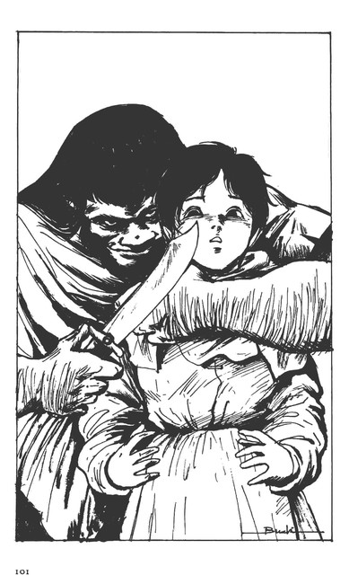
「女の命はなくなるぜ？」
ブラバは、久しぶりに女の体臭と体温を感じたが、任務を忘れはしなかった。ガロウ・ランとしては異常なほどストイックになっていたのだ。
「ガロウ・ランにしては、やるな......」
バーンは、剣の柄から手を離して、両方の手を背中に回して組もうとした。
「手は、前に出しておけっ！」
バーンはニタッと笑うと、その手をテーブルの上に置いた。
「で、どうしろと言うのだ？」
「機械、持ってくれば、トレンと会う。機械直す人いれば、トレンに会わす」
「会いたくない。トレンなどは殺せ！ 敵にいる地上人などはいらん」
バーンは、ブラバの狙いが分ったので、そう恫喝したが、次には、ステラの首から、血飛沫が飛ぶだろうと覚悟した。
こんな場合、愛人を犠牲にすることができるのがバーンである。
「............？」
案に相違して、ブラバは瞼をふるわせ、眼球を左右にウロウロさせてから、バーンを見据えた。
バーンは、ブラバの反応がガロウ・ランらしくないので、おやっと思うと同時に、この男は本当にガロウ・ランかと疑った。
「ガロウ・ランの使いの者か？」
「ガロウ・ランでなんでいけねぇっ！」
ついに、ブラバは、怒声を発した。
「怒鳴るな。店の者が来るぞ。いいのか？」
「............!?」
ブラバは、あわててステラの首を締め直した。
「ゲッ！......バ、バーン......」
ステラが呻いた。
「......その女を殺しても、わたしは、トレンに会わん」
「なんだと？」
ブラバは、完全に混乱した。
自分の予定通りにものごとがすすまないと、ただ動揺するだけなのは、まだまだ、知的に現状に対処する能力が欠けているのだ。頭を使う訓練が十分にされていないのである。
「フ......面白いガロウ・ランだな、こんな手を使うことを考えているとは」
「なんだよ？」
ブラバは、呻いた。
「トレンに会おう。ただし、今じゃない。明日だ！」
「明日？」
「そうだ。明日だ、明日、お前の言うところに、わたしを連れて行け」
「本当か？」
「いいか？ トレンが死んでいたら、機械は渡せない。生きていれば、機械を渡す。だから、トレンに会う。そして、機械を渡す。トレンが死んでいれば、機械は渡さん！分るか？」
「トレンは、生きている！」
ブラバの怒りをバーンは手で制して、
「わたしは、トレンが生きているのを見ていない。だから、見る！」
「フーム......」
ブラバの頬髭がビリビリと震えた。ステラは、顎を上げて、金魚が水面にロを出して呼吸するような恰好をした。
「明日、トレンに会わせろ。今夜は、ブラバに渡す機械の用意をしなければならん」
「フム......明日まで、この女を預かる」
ブラバは考えてから、そう言った。
「い、厭だよ！ バーン！」
「......その女の股座に手をつっこむことをしないと約束するならば、預けよう」
「............」
ブラバの表情が一瞬、苦痛に歪んだ。
「......なんもしない。預かるだけだ。お前、来なければ、この女は、殺すぞ」
「やむを得んな」
「バーン様......」
「安心しろ。死なせはせん。ステラ、明日の朝、オーラの光が、息をついたら、ここにいろ」
「ここだと？」
「フフフ......軍を連れて来ることはしないさ。ガロウ・ラン」
「ブ、ラバだ。ブラバ」
「そうか、ブラバ。わたしはバーン・バニングスだ」
「憎い敵だ！」
「そうだ。貴様も憎い敵だ」
バーンは、マントを取ると、
「店は閉めるようだ」
そう言って店の客を追い出しながら、トロゥがいないのに気づいた。
「肝腎な時にいないのが、あれだ......」
バーンは、思わず苦笑をして、奥の部屋から覗いているブラバと、顎を上げて脚をバタバタさせて抵抗の風を見せるステラに、
「安心していろ、その男は、礼儀正しい男だ。食事ぐらいは、させてやれ」
「い、いやだよー！ バーン！」
「大切なことだ、我慢してくれ。これはアの国のためであり、わたしの出世にもつながる。ステラだって、市民になれるチャンスだ」
「で、でもっ！」
「行けっ！ 支度を急げ！」
「ああ......騎士ブラバ！」
バーンは、世辞を言うと、ステラの店を出た。
11 夜からの刻
オーラ・マシーンの製造工場は、なるべく森の木々を伐り倒さないようにして建設されていた。やむをえず木を伐りたおした後は、網を張って工場を隠していた。
工場は、かなりの煙突を必要とするのだが、それも森のなかの煙道を通して、煙そのものを地中に排出させるような工夫がされていた。
しかし、今は、灯火管制が実施されているわけではなく、道々には、それなりに灯火がかかげられて、工事が続けられていた。いつ終るとも知れないようである。
ラース・ワウにあった機械の館の移転は、ギィ・グッガ麾下の戦士ミィによるドラゴ・ブラーを使っての空襲などがあったことから決定されたのだが、工場をラース・ワウの外に移築するべきだというショット・ウェポンの進言は、なかなかアの国の人々に納得してもらえなかった。
城を中心にした攻防戦か陣地取りという発想しかない人々には、巨大な戦力を生む工場を城の防衛線の外に移すという考えは、理解できなかったのである。
それに、経済的な理由もあった。工場を移せば、その防御のための防壁や兵員もよぶんに必要であった。それをまかなうだけの経済的な基盤は、まだアの国にはなかったのである。
しかし、ギイ・グッガの軍は、二度までもアの国の軍によって撃破されたにもかかわらず、撤退の気配を見せなかった。その執拗さは、かつて語られたガロウ・ランの習性とは違うという認識がアの国の人びとの間に生まれ広がっていった。その不気味さが、工場の移築を決定させたのである。
かつて、ガロウ・ランは、獰猛ではあるが、飽きっぽい種族であると語り伝えられ、なによりも、組織戦などはまったくできない単純な人びとと信じられていた。
しかし、それは、コモン人が、自分たちの恐れるものを希望的に観察した願望的な伝説でしかなかったのである。
ドレイクは、新規に召集されたウルの国の兵をすべてこの工場の警備に廻し、建設要員を確保するために、国中にかなり無理な動員をかけた。
そして、数日前から、この工場では、ようやくオーラボム・ドーメの生産が再開され、カットグラを補充する仕事も再開されていた。
ラース・ワウ内の古い機械の館は改装され、オーラ・マシーンの指揮所および整備工場として使われるようになった。
「ショット様は！」
「ハッ！ 中のお館にお帰りになりました」
「至急の面談である。注進していただきたいっ！」
バーンは、数人の部下を引き連れて、エ場に至る道の検問の横棒を上げさせ、森の暗い道を走った。
その間に、衛兵が電話で、ショットの館に連絡をとることができた。無線装置を本体とした有線通信施設で、これもショットが開発したものとされていた。
『中の館』と言っても、二階建ての小さな田舎家である。その周囲にロクな警備の兵もいないのは、工場区画全休を警備させているからである。
それでも、ショットは、その田舎家の玄関口を二人の兵に警備させていた。
「バーン様だけこちらへ。家来衆は、あちらの離れの居間で、お待ち下さい」
「ン......」
バーンは、馬の手綱を部下の一人に渡すと、玄関の網戸を開いて、ドアを開けた。ドアにつけられた鈴が鳴った。
そこは小さなホールで、正面には、丸くカーブを描く階段があった。左右に居間と食堂がある造りである。
「騎士バーン、こちらへ」
ショット自身が、二階のベランダから呼びかけた。
「おお......！ こんな夜分に......」
バーンは、最後まで言わずに、階段を軽い足取りで登っていった。ショットが、右の部屋のドアを開いて、バーンを招じいれた。
「なにかな？」
「ガロウ・ランが、接触して来ました......トレンと会わせると......」
バーンは、ステラの店でのことを説明した後で、二人は、その対策をどうするか密やかに協議をした。
翌日......。
アリサ・ルフトは、下働きの者たちを指揮して自分の部屋から必要なものを運び出していた。とは言っても、我々の言う引越しとは違う。
身の回りに必要な細々としたものを納めた幾つかの荷箱を運び出させるだけで、家具調度を運搬するというのではない。
それでも、小型の荷馬車二台分の荷物である。
アリサは、最近はきなれた乗馬ズボンに、ジャケットを羽織って、下働きの者たちの動きを馬上から見守っていた。
「元気そうなので安心しました。アリサ......」
ジョクが手伝うことなど何もない。ただ、馬上のアリサをやさしく見守ってやるだけだった。
「......ジョク、軍務の方は良いのですか？」
ジョクがまだくつろいだ姿なのを見て、アリサは、怪訝そうな顔をした。
「お見送りの時間をもらいました。ドレイク様の方はよろしいんですね？」
「もちろんです。兵たちも付けてくれるということですから」
「付けてくれる？ ハンダノまで？」
「いえ、わたしが、ハンダノにいる限り、護衛をしてくれる部隊です」
アリサは、おかしそうに言った。
「ちょっと、待って下さい。外に二、三十騎の騎士がいました。あんなに多数は、バンダノでは養えませんよ」
ジョクは、蒼くなった。
「大丈夫、ラース・ワウの予算でやってくれるようですから......まだ、わたしは、ラース・ワウの人間でしょ？」
「そりゃそうですが......困りましたな......」
「地上人の面子ですか？」
「面子もなにも、人を養うというのは、大変なことです。そんなことをしていただいて、ハンダノとの......」
ジョクは、何を言おうとしているのか不明瞭になった。本当は、ハンダノとラース・ワウの経済上の関係、自分とアリサについてのことなど、ドレイクと詰めなければならない話が一杯あるような気がしたが、そんなことは、何ひとつ話し合われることなく、アリサは、ハンダノのジョクの城に引越すというのである。
サラリーマンが、貴族の娘を嫁に取るのは、物理的に無理な話である。ジョクは、それに似たプレッシャーを感じていながら、何もできない立場にいた。
「それは、前の馬車につんで下さいな」
アリサは、時々、そんな指図をしながら、迷いがふっ切れたような晴々とした気分を味わっていた。アリサは、鬱々とした暮しができない質なのである。
それは、ジョクにとっても救いになった。ジョクは、まだまだ対等にアリサと接するだけの器量というか、自信を持つまでには至っていないのである。
「............？」
馬上のアリサは、フッと中庭に面したバルコ二ーの一方を見た。ジョクも、アリサの視線を追って、そこに、二人の侍女に伴われたリムル・ウルの姿を見つけた。
「こんなところまでノコノコと出てくるなんて！なんでも珍しい年頃なんだから......遠慮というものがないのよ」
アリサは、鞍の上で身体を横にするようにして、ジョクの耳元に囁いた。
「早く結婚しちゃいましょ、ね？」
アリサのお茶目な表情に誘われるようにして、ジョクは、その可愛い唇にキスをした。
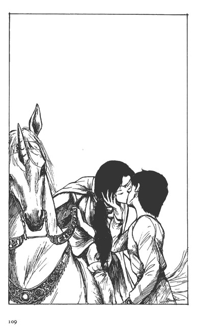
「......クククク......！」
アリサは、嬉しそうに身をひくと、馬腹を軽く蹴って、馬首をめぐらせた。
「まさか、馬に乗りっぱなしで、ハンダノに行くのではないだろう？」
ジョクは、そのアリサの背中に訊いた。
「いけません？ 騎兵にも負けないつもりよ？」
アリサは、馬上で白い歯を見せた。
「護衛の兵の迷惑にならないように！」
「はい」
アリサは素直に答えると、二台の馬車の周囲を回って、ロープ掛けや幌の様子を見ていった。
「ドレイク様です」
ジョクの背後に従っていたミハン・カームが囁いた。ジョクが視線を向けると、ドレイク・ルフトが供もつれず、気楽な恰好で近づいて来る。
「おお、見送りか？ ご苦労だな」
「はい、ドレイク様も」
「アリサ、行くか！」
ドレイクは、ジョクに笑顔を見せて、中庭のアリサの方を覗くようにした。それは、王ではなく、ただ娘の身を心配する父親の姿である。
ドレイクのそんな姿を見て、ジョクは、安心すると同時に、娘一人の安全と幸せを保障できるかどうか分らなくて、心配するのである。
『......深刻にはなるまい。どうにでもなるさ』
ジョクは、努めてあかるく振舞う親子の姿を見つめて、そう思った。
「女が身につけるものなのか？」
バルコニーの上で、リムルは、侍女に聞いた。
「リムル様！」
リムルは手すりに掴まって、無遠慮に中庭のドレイクとアリサの別れを見下ろしていたのだ。侍女二人が、あわててリムルの身を手すりから引かせ、
「......地上人の御夫人方の姿だそうでございますよ」
悪いことを教えるといった雰囲気で、リムルに囁いた。
「はしたないというよりも、奇怪であるな......なんで、あのような姿を許すのであろう......？」
「ドレイク様が、でありますか？」
「ああ......」
リムルは、ようやく高いところからドレイクを見下ろしている無礼に気づいて、身をひるがえした。
そして、自分に与えられた居室の方に戻りながら、義理の姉になるアリサの姿を見たショックをどう整理したらいいのかと、迷っていた。
アリサのズボンは、膝から上がたっぷりとした乗馬用のもので、身体の線を浮き出しているようなものではない。
しかし、リムルの眼には、ジャケットとズボンというファッションは、すっきりしすぎて、身体の線がむき出しになっているように見えるのだ。
なによりも、男風の恰好をする姉の姿に、驚いたのであるが、リムルは、それを嫌悪しているのではない。その自分の感性を、リムル自身が分らなくなっているのである。
『あんな姉ならば、認めても良い......』
そう思う自分があるのを知って、驚いているのである。
「この国は、不思議じゃ......」
「アの国は、地上とつながっているというお話もございます」
侍女は、リムルの言葉を別の意味にとって、そう囁いた。
「そうか......そうだな」
リムルは、城内の別の庭に出たところで、上空を見上げた。
ブブッ、ルルル......。
カットグラが低く飛んでいた。
そのエンジンの震動は、大きくないのだが、どこかリムルの生理を刺激した。オーラの光を通すカットグラの羽根が、輝いて見えた。
「そうだねぇ......こんな強獣のようなものを作ってしまった地上人がいるのだもの......」
リムルは、城壁の向うに消えていくカットグラを見送って、一人、納得顔になった。
「では、父上......」
「ああ......行ってこいとも言わんし、帰ってこいとも言わん。主は、まだこの城の王女なのだからな」
ドレイクの言葉の意味は、アリサには良く分った。
しかし、これでドレイクは、自分のことを忘れるだろうとも思っていた。
「はい......そりゃ、もう！」
アリサは、ジョクの前に回りながら、先行する馬車を追うように、馬首を向けた。
「............？」
リムルの見たガラリアのカットグラが、中庭の上空を通過して行った。その影は、アリサの周囲を一瞬暗くして、上昇して行くように見えた。
「......ガラリア機だ。なんで、飛行しているのか、聞いてこい」
ジョクは、顔を向けずに背後のミハンに低く命令した。ミハンは、風のようにその場を去って、機械の館に走っていった。
その間に、アリサの馬も中庭の門を出て、ジョクの視界から消えた。
「騎士、ジョク」
「ハッ！ ドレイク様」
「厄介を掛けるが、頼むぞ？」
「ハッ！ 自身の栄光、心から感謝しています」
「世辞はいい。あれに、辛い思いをさせるのが忍びない。好きにさせてやりたい。あれの多少の我儘は、聞いてやってくれ」
「はい、そのためにも、自分がハンダノで幕せるような世にすべく、ギイ・グッガのこらしめ、急ぎましょう」
「そういうことだ。戦士ジョク」
「編隊作戦が実施できるようになりましたら、オーラ・マシーンによるゲリラ戦を活発にさせるのが肝要と存じます」
ジョクは、急ぎすぎを承知で、上申した。
「らしいな。貴公の考えは分る。気になること、思いついたことがあれば、何事も儂に上申してくれ。重臣たちのなかには、取り次ぎの手順を気にする者がいるが、そんなことは無視して良い。儂に直接面談を申し入れるのだぞ」
「はっ！ 気をつけます」
「貴公は、まあ、婿殿だ。頼む」
ドレイクは、ジョクの瞳のなかを覗き込んで言った。ジョクはまた身分不相応なブレッシャーをかけられたのだ。
しかし、男ならば、これを利用して出世しなければならないと思う。また、出世などあてにできなくとも、やって見せなければならないことだということも分っていた。
『問題は、俺にそれだけのオーラカがあるか、だ。しかし、オーラカは、育てることもできる......！』
そう自己催眠をかけるしかないジョクであった。
ジョクは、トーキョーもロスも遠くなったと実感した。
12 ガロウ・ランたちと
ガラリア・ニャムヒーが操縦するカットグラは、ラース・ワウの城下街一帯を掃くように低空飛行した。
「こんなことをやらせて、バーンはどういうつもりだ？」
ガラリアは、いぶかしく思いはしたが、一応、バーンの説明に納得をして、飛行しているのである。
この飛行が終れば、機械の館前の広場に引き返して、この日の通常任務につくことになっていた。
『ブラバというガロウ・ランを威して、トレンに会う必要はあるな』
『はい、しかも、事を成すには、まず、味方を騙さなければならないというのは、真理であります。まして、これは一般的な作戦ではありません。朝、街の上空低くカットグラを飛行させることを、ガラリアにどう納得させましょう？』
これが、昨夜、バーンとショットが会った時の最後の会話であった。
『フム......こういうことこそ、難しいな』
ショットは、ちょっと考えてから、言葉を継いだ。
『騒音調査をすると言って、飛行をさせろ』
『騒音調査でありますか？』
バーンは、ショットの考え方が分らなかった。
『ン......。大衆というものはな、自分たちの暮しを脅かすものは嫌いだ。今までは、馬と馬車の騒音、大きな音と言っても大砲の音ぐらいが、精一杯だったろう。しかし、将来、オーラ・マシーンが大量に飛行するようになれば、人々は、この音を恐れ、嫌うようになる』
『しかし、オーラ・マシーンは、軍のものであります』
ここが、バーンには分らないのである。バーンには、軍のやることに、一般市民が反対したり、異議を唱えたりするなどということは、想像できることではないのである。
騒音問題にしても、軍事基地建設反対運動にしても、市民意識が政治に反映されるようになった現代になってうまれた運動である。ショットは、公害という概念など持ちあわせていないバーンに、噛んで含めるように説明してやった。
『つまりだ、朝の時間にカットグラを飛ばして、住民たちの非難が起るか起らないかを調査するのだ。これは、我々は地上世界でやっているのだ。この騒音調査は、今後のためにしておく必要がある。そうガラリアには説明してやれ』
『ふむ、妙な考え方でありますな？分りました。ガラリアは、それで納得させましょう』
バーンは、半ば納得しきれないというふうな顔を見せた。
『地上世界は、進歩した文明の機械のために、人々が脅かされて暮しているのだよ。分らんだろうな？地上世界は、天国ではないのだ。音楽ひとつにしても、ここの人々が聞いたら、轟音に聞えるようなものがある』
バーンは、ショットの説明に、ますます首をひねる風を見せた。
ともかく、そういうわけで、ガラリアは、今朝、城下街上空を低空飛行しているのである。
その城下街のラース・ワウの城壁に近い路地裏のステラの店の前には、数騎の兵がひっそりとたたずんでいた。
バーンの姿は、すでに店の奥にあった。
「バーン様！ わたしのために、ガロウ・ランの言うことを聞いたのですか？」
ステラは、ブラバから猿轡を外してもらった時、信じられないというふうに首を振った。
「怖い思いをさせたようだな？」
「いいえ！ いいえ！ ありがとうございます」
ステラは、上体を縄でキリリと縛られているために、ブラバの前から動くことはできなかった。
その縄尻を握っているブラバは、窓から、隣の家の壁との間に見える狭い空を見上げて呻いた。
「人型の機械が、飛ぶか......」
ブラバは、ステラの肩越しにバーンを見やった。
「お前が考え違いをして、ステラかわたしを殺せば、あのカットグラは、お前を殺す」
バーンは、この恫喝で、ブラバは確実にこちらの言う通りに動くだろうと読んでいた。
「俺は、お前を待った」
ブラバは、ステラの両腕をうしろに廻した縄尻を離さなかった。
「そうらしいな。ステラに手を出さなかったことは感謝する。貴公は、紳士のようだ」
「シンシ？ 俺は、戦士だ」
「そうだ。だから、トレンが生きているのならば、貴公に機械を渡す」
「機械をくれるか？」
「そうだ。しかし、トレンに会わせてくれなければ、渡す約束はできない」
「連れて行く」
「トレンに会わせてくれれば、機械は、明日には、渡す」
ここで、ブラバは、またも分らないという風を見せた。ブラバは、トレンを見せれば、すぐに機械は手に入るものだと信じている。新しい条件がついたことが、思考を混乱させるのである。
ブラバは、唸った。バーンは、用心するように身を引いた。このような時に丸腰というのが、どうもバーンには落ち着けなかった。
バーンには、新たな条件を出せば、ブラバの思考が飽和するのではないかという危惧が十分にあったからだ。その時は、ステラを楯にして、外に逃げ出すしかなかった。
「......よーし！」
ブラバは、ステラの縄尻を握ったまま、バーンに先に店の外に出ろと命令した。
「了解だ。ブラバ。しかし、ステラの縄をすこし緩めてやってくれんか？手首が死んでいる。それに、縛った女を連れて外に出ると、我々が怪しまれて、トレンのところにも行けなくなるぞ」
バーンはゆっくりと言った。
「トレンのところに行けなくなる？」
「そうだろう？ 縛った女を連れて行くのを、街の人や、他の兵たちに見られたら、兵たちは、私の命令を聞かずに、女を助けに来る。それが、コモンだ」
「そうか......」
ブラバは、またも新しい条件というか、考えなければならない事項を列挙されて、険しい表情を見せた。そして、まず、ステラの手に触ってみて、
「死人の手だな......」
一人納得するとステラの縄をゆるめてやったが、それでも、巧妙に手首だけはくくった。
バーンは、壁に掛けてあったステラの大きな肩掛けを取るとブラバに投げてやった。
「それで、縄目が見えないようにしろ」
「フン！」
ブラバは、鼻を鳴らして、バーンの言う通りにすると、ステラの背中に身体を密着させるようにし、懐中の短剣を使えるように身構えて、店の外に出た。
「この兵隊たちは、手前のものか？言うことは聞くのか？」
ブラバは、店の前に待機している数騎の騎兵に、気色ばんで見せた。
「ヒッ！ バーン！」
ブラバは、ステラの首に短剣を押しあてて、左右をねめ廻した。
「ブラバ、これから行くところには、貴様の仲間がいる。わたしが、一人で行けると思うか!?」
バーンは、自分が剣を持っていないのを改めて示しながら言った。
「貴公のための馬も用意してある」
バーンは、一頭の空馬を顎で示した。
「うーむ......」
ブラバは、その馬の脇に立つとステラを跨らせて、それから自分がそのうしろに跨った。
「それで安心したか？」
「お前たちが、前を行け！ うしろから合図する」
「了解だ」
そのようにしてバーンたちは、ラース・ワウの城下街を出た。もちろん、市門の検問などのいさかいもなく、彼等は街を出た。
「次の道を左だ」
ブラバは、道中、指令をするだけであった。
バーン以下六騎の屈強な兵たちは、なにも考えることがなく、ブラバがビダ・ビッタと合流する予定の場所に辿りついた。
そこは、ブラバが一人、ビダを捜しに行った時に、水を飲みに寄った田舎小屋であった。
周囲はしんとして、人の気配はない。
鶏は、あいかわらず庭先で寝ていた。鶏を殺さずに、そのままにしておけと命令したのは、ブラバである。コモン人に怪しまれるのを回避するためのアイデアである。
「ここだ！」
ブラバの言葉に、バーンは、さすがにいぶかしんだ。
「こんな道沿いの家か？」
そうは言っても、庭にあたる部分のスぺースはかなりあり、左右は木々に囲まれて、背後には、山の傾斜が迫っていた。
街道とは言っても、主要な街道ではない。
「ヒョーッ！」
ブラバが口笛を吹くまでもなく、小屋の裏口から、テッテア以下のガロウ・ランの影が滑り出て、左右の繁みのなかに身を潜ませながら、裏に行けと手真似をした。
バーンたちには、その姿はあきらかにガロウ・ランと分る獰猛さと猜疑心の塊に見えた。
騎士たちは、ザワッと腰の剣を鳴らした。
「動くな！ 俺だけが行く！」
バーンは言いつつ、周囲を見ろと手真似をした。
小屋の陰、木の上、繁みのなかに、数人ずつガロウ・ランの戦士たちの影があった。彼等は、物の影そのものになって、弓矢を構えていた。数で言えば、ガロウ・ランの方が優勢であろう。
バーンは馬を降りて、騎乗したままブラバに従って、小屋の裏口に回った。清水が裏山から流れ出て、庭を横切っていた。
物置小屋があり、藁を干すための木組が物憂げに立っていた。裏山の木陰には、人の脚がぶら下がっているのが見えた。老婆らしかった。
「......ン！」
ブラバが、ステラを馬上に残したまま、馬から降りて、田舎家の戸口を叩こうとすると、ドサッとそのドアが開いた。
「あれか？」
ビダである。
「ラース・ワウの騎士だ。機械を操る騎士だ」
「フン......？」
その醜悪な顔をバーンに向けたビダに、ブラバが言った。
「面倒な話がある。すぐに機械は、持って来れねぇ」
「なんでだぁ！」
「ここは任せろっ！」
吠えるビダにかぶせるようにブラバは言うと、バーンに入れと手招きをした。
バーンがブラバの陰に隠れるようにして小屋に入り、信じられないものを見た。
「騎士、バーン！」
ベンチから立ちあがったのは、トレン・アスベアその人である。多少汚れてはいるものの、ラース・ワウから拉致された時のままのものを着、手足も自由で、真直ぐにバーンに向って歩いて来たのだ。
「バーン・バニングスさんが直々来るとはな！こりゃあ......！」
トレンは、バーンに握手を求めて、さすがに、安心したという表情を見せた。バーンは、挨拶の言葉も忘れて、周囲のガロウ・ランたちを見回した。
「これは、なんだ？」
バーンの驚きは、ブラバに直接つたわったようだ。
ブラバがバーンの質問に答えた。
「ガロウ・ランは、卑しくない。考えもする」
そう言うブラバは、自信に溢れていた。
「認めよう。貴公たちは、他のガロウ・ランと違う。秀れた人びとだ」
言いながら、バーンは、何かすべての考え方を変えなければならない時代が来ているのではないか、と直感していた。
トレンは、ガロウ・ランの要求を改めてバーンに説明し、バーンもガロウ・ランの要求を受け入れるために来たことを説明した。
「......しかし、明日まで待ってくれ」
「なんでだ？」
「こちらだって、数少ないドーメを一機調達しなければならんのだ。ドレイク様も苦慮されている。それに、どこまで飛ぶかも分らんのだ。補給物資を、どこかで搭載しなければならんはずだ。その用意も必要だろう」
そう言われれば、トレンは黙るしかなかった。
「俺のために、リスクを背負うのだな？ アの国は......」
「そうだ。しかし、黙って整備兵までつけて、そちらに送り込む本当の意味は、想像できるな？」
バーンは、言わずもがなのことを訊いた。
そうでもして確認しておかなければならないのは、トレンが地上人だからである。バーンは、まだトレンなどは信用していない。
「そりや......俺だって、興味のある人と出会った。カットグラが直ったら......な？」
トレンは、ウインクを見せて、ニッと笑った。
「では、トレンが生きていることが分ったので、機械を一機貴公たちに渡そう」
「おーしっ！」
ビダが呻いた。そのビダを制して、ブラバが訊く。
「いつだ？ 明日のいつだ？」
「そうだ。明日の昼。場所は......」
バーンは、持参した地図を広げて、ブラバとビダに示した。
「この森の境、ハラン河のこの曲った場所だ。ここからはかなりあるが、移動できるな？ここに故障したと見せかけて、オーラボム・ドーメを一機着陸させる。それを持って行け」
「故障とは、なんだ？」
「飛べなくなったと見せかけることだ」
「飛べんのでは、話にならん！」
ビダが、大声を出した。
「ビダ！ いいのだ。飛べるのを一度、地に降ろすのだ」
「そういうことだ。そうでもしないと、貴公等に渡すことはできん。いいか？そのドーメに乗ったパイロットと兵は、殺すなよ。彼等がカットグラを直す。そして、なによりも、パイロットを生かしておけば、ドーメには十人以上の人が乗れる。貴公らは、一気に空を飛んで帰れるだろう」
「空、飛ぶか？」
ビダが、ギロッと眼を動かした。
「なるほど、機械に乗っているコモンを殺すと、機械は動かんのだな」
ブラバは呻くように頷くと、ビダとその一統に、同じことを言い渡した。
「まだ難しい問題がある」
と、バーンは、たたみかけるようにして、補給問題を出した。
「どこまで飛ぶのか知らんが、ドーメという機械もカットグラも、飛ぶ距離が限られている。この場所を選んだのは、諸君たちがラース・ワウの兵に捕捉されない場所であるからだ。この山のためにラース・ワウとは無線が使えなくなる。だから選んだ。貴公たちがカットグラを修理する時間を与えるためだ」
「なるほど......」
その話は、トレンにしか分らない。
しかし、なぜかガロウ・ランたちは、バーンの話に黙って聞き入っていた。
知識の暴力というものがある。知識を列挙されても、理解できない者は、それによって打ちひしがれてしまうという情況......あれである。
「で、補給物資をここに隠して、それを補給して、次の飛行を実施するのだ。このためにラース・ワウの軍が今夜から、明日の午前中に動く。それには、手を出すな」
「フーッ！ なんて言ったんだ？」
「トレンから、詳細は聞け」
バーンは、つっぱねた。
「機械を飛ばすためには、いろいろやることがあるんだ。分った。あとでゆっくり説明する」
トレンは、ゆっくりとした思考をブラバに投入してやった。
「分った。機械をここに持ってこい」
ブラバは、バーンの地図で場所を指さして、吠えた。
「よし、帰るぞ！ ステラは離してくれるか？秀れた者、ブラバよ」
バーンは、大仰にブラバの顔を見上げた。
「いいだろう。お前は、間違いなくやってくれた」
「ン......！」
バーンは、ステラの縄尻を受け取ると外に出た。
「バーン！ ショットに言ってくれ。俺が戻ったら、オーラ・バッテリーの開発を研究したいと言っていたってな」
「オーラ・バッテリー？」
「そう言えば、分る。そちらも作戦を急いでくれ。それと、明日のドーメには、俺の着替えを用意してくれないか？カミソリとさ」
トレンは、きれいな人びとと出会え、気持が楽になったのだろう、嬉しそうに言った。
「我々は、貴公を忘れてはおらん。身体を大事にな」
バーンはニッコリと答えると、ステラの縄目を解いて、街道側に回った。
繁みの陰を走るガロウ・ランたちは、バーンの帰るのを確認するまで、監視を続けるつもりだ。
『......連中の統制ある動きは、今後の脅威だな』
バーンは、ステラが馬に跨ったのを確かめると、一気にその場を離れていった。
この後すぐに、ここを襲撃したにしても、ガロウ・ランがとどまっていることはないであろう、とバーンは思った。
13 火をつける者
「ですから、いつ、ギィ・グッガを駆逐して、周辺の国々を平定なさるのです......？」
ルーザ・ウルの言い方には、棘などは一切ない。その優しさは、アリサが城を出たからだと解釈したくなるが、それほど、あからさまでもない。
ルーザも、夫をなくした後、小さいとはいえ領地ひとつを統治してきた女性であって、今回、ギィ・グッガに対するためには......と、領民の支持を取りつけて、アの国に嫁いできたのである。
ウルの領地では、式も挙げることなく軍事同盟を樹立するために、ドレイクの許に行ったルーザは、殉教者的に語られて敬われていた。
なまなかの決心で、できることではない。それ故、ドレイクが、選んだ女性である。
「......お口に出さずとも、予定を持たねば、戦争はだらだらと長びき、いつまでも領民を苦しめることになりましょう」
「そうだ......そうだが、今回のガロウ・ランは、妙でな。歴史的に見られるガロウ・ランと違う」
「だからこそ、です。ギィ・グッガとの一戦に勝ったとて、我が国が得るものは何もないのです。領地も金銀も......こんな利益を生むことがない戦は、一挙に決着をつけませんと......」
「そうなのだ。海運業が拡大するとか、金山銀山が手に入るということはない。ただ蹂躙される民がなくなるというだけだ。しかしな、ルーザ、ギィ・グッガを駆逐することができれば、領民は絶大な自信を持って、海外に出て行くだろう。機械という最も新しい技術を持ってな......さすれば、我が国の隆盛は、目に見える。これが儂の目論見だ」
「はい......」
ルーザは立つと、ドレイクの前のコップに茶をそそいだ。これがラース・ワウの流儀である。
食後のこの時間だけは、召し使いはいない。
「でも、不思議でありますな？ 地上人のショット殿が降りた頃に、ギイ・グッガが北から攻め寄せてくる......殿の御運でありましょう、これらを従えて、バイストン・ウェルの世界を平定せよという......」
「悪い運勢ではないと思っている」｀
「世界が殿に与えたものでありましょう。でなければ、わたしとて、苦労は買いませぬ......」
「そうだな......では、仕事に戻る。奥の仕切りは、くれぐれも頼むぞ」
「はい、それにつきましては、アリシア様のご配慮には、本当に頭がさがります。わたしは、それを引き継ぐだけでございますから、易いものです」
「ン......」
ドレイク・ルフトは、生返事をして居室を出た。
ドレイクは、ルーザに一切借りはないのだが、ルーザに精神的に負けている部分があることを自覚していた。
と言うよりも、ルーザがそのような種類の女性であるからこそ、先妻のアリシアの後の女性としては、彼女しかいないと選んだのである。
遊ぶ相手には不自由しないのが、この国の王である。となれば、妻とする女性は、ドレイクを鼓舞する女でなければならないのである。
ドレイクは、そういう妻ならば、自分の野心を育ててくれるだろうし、また、自分は王であることに満足して無為に過ごすこともなかろうと考えたのである、そういう女性を選ばなければ、古来、王たるものが国を食いつぶすという愚を、自分も繰りかえすだろうと感じたのである、
その意味で言えば、アリシアは、ドレイクにとって危険な女性であった。
彼女は、あまりにできすぎていた。
家事一切を切り盛りし、城全体の経済一般にも気を配って、適切な忠告をしてくれた。彼女に任せておけば、アの国全体が安心できたのである。
それは、ドレイクに平和時の治世のあり方を教え、ドレイクの評判もあがった。
しかし、ギイ・グッガに代表されるガロウ・ランの跳梁が始まってからは、ドレイクも軍の前に出て、防戦することを余儀なくされた。
このような時代には、アリシアの温和で、思慮深い性格は、ドレイクの腰を折る結果を招く。
つまり、軍事行動によって勝利を得なければならない時には、往々にして、強攻策をとらざるを得ない。そんな時代には、アリシアの優しさは、時に優柔不断になる。
つまり、アリシアの存在が亡国を呼ぶと、ドレイクは感じはじめていたのである。
それで、ルーザの気の強さと進取の気性を、ドレイクは、自分のものにしようとしたのである。ドレイクに野心が出てきた証拠なのである。
「ご苦労」
ドレイクは執務室で、まず待たせておいたショットと謁見をした。
「首尾はどうだ？」
「これから、オーラ・マシーン部隊が訓練に出ます。その時、一機のドーメをガロウ・ランと接触させます」
「ン......全員が惨殺されることはないだろうな？」
「それはありますまい。ギィ・グッガが、カットグラを修理したいと考えているのは、信じて良いことでありましょう」
「カットグラの奪還を期して、ギィ・グッガの本陣をたたく用意はさせているが、問題は、ギィ・グッガの本陣の場所だ。これが掴めんな......」
「はい、カットグラのあるところにギィ・グッガの本陣があったにしても、彼の全戦力ではありますまい......いかがなさいます？」
「ギィ・グッガのことは、カットグラ奪還部隊に任せて、見ていろと言うのか？」
「ハッ！」
「分った。貴公の考えは聞いたが、戦略を立案して実行するのは、儂の仕事だ。以後は、儂の仕事だ」
「ハッ！ ロが多かった分については、ご容赦を......」
「いいさ......さて......」
ドレイクは、大様に答えた。
つづいて、オーラ・マシーンの生産についての報告を聞いてから、戦術面についてのショットの協力を促した、
「......兵の迅速な輸送が急務であるとの仰せはごもっともであります。自分も前々から考えておりますが、もう少し、時間が必要であります」
「輸送機の図面の作成だけは、すすめてくれ。現在のオーラボム・ドーメを輸送用に改造する手段はあろう？武装を外せば、小隊を移動させることはできるはずだ」
「問題は馬であります。これを移動させることに、かなりのエネルギーが必要です］
「そうだ。そうだ......。しかし、急ぐ。少ない軍を広く展開させるわけにはいかんのだ」
「はい......」
ショットが退出した後、ドレイクは、会うべき人びとに次々に面談していった。
地方にまで広く軍を展開させているので、それによって起る領民との問題が多くなっているのである。それらの解決策を指示することをはじめ、仕事は山ほどあった。
軍の方には、ギィ・グッガの軍の動きについての情報収集を督促しなければならない。
今日の秘密の作戦は、あくまでも隠密にすすめなければならないのだが、これは、バーンとショットに任せておけば良い。
ギィ・グッガが本陣をすえている村は、国境を深く入った山間部にあったのだが、未だ、ドレイク軍は、その所在を掴んでいなかったのである。
しかし、ガロウ・ランが接触してきたからには、ギィ・グッガが国内のどこかに潜んでいるという推測が成り立つ。人心に与える影響を考えれば、この情報は公表できなかった。
「強獣の動きが目撃された点をつないでいけば、敵の主要な部隊の所在地が掴めるはずである！」
その日も、ドレイクは、何度か将官たちに大きな声を出して、隠密作戦を覆い隠す配慮をした。
「マーベル様」
ニー・ギブンのひそやかな声を聞いた時、マーベルは、まだ乾き切っていない髪にイライラしていた。
「ご用？」
ドアの前に立って、マーベルは聞いた。
「いえ、別に......一
「なら、後にして下さいません？」
「............」
ドアの向うに未練がましいニーの気配があった。動こうとしない。
『こんな朝早くから......』
タオルと言っても、現代、我々が使っているような吸湿性の良いものではない。マーベルは、髪を挟んだタオルをパタパタと叩きながら、
「なんなのです？」
と、また聞いてしまった。
「すぐに訓練飛行が、始まりますので......」
ニーが、関係のないことを言う。
マーベルは、自分の室内着が乱れていないのを確かめてから、タオルで髪をつつむようにした。
その間も、ニーは、ドアの外に立ったままでいるのが分った。それは、かすかに、マーベルに喜びを感じさせた。
マーベルは、彼の声と姿がどこか記憶にあったために、抵抗感がなかったこともあるが、それよりも、自分が鬱々としているのが厭になりはじめていたので、ドアを開いた。
「......ああ......！」
ニーが感嘆の声をあげた。
マーベルは、それには微笑などは見せない。
「こんな恰好なんです。失礼でしょう？」
「申しわけありません。本当に......しかし、当分、お会いできなくなると思いまして......お元気で......」
「訓練で、遠くに？」
「はい......当分......お達者で......」
ニーはまたそう言うと、両手をフラリとさせて、背中を向けた。
「ニー......？」
マーベルは、思わず身を乗り出して、ニーの腕を掴まえた。
「会えなくなるのですか？」
「分りません。任務です」
マーベルは、ニーの前に回って、
「会いたくなるわ。きっと.........ご無事で！」
「あ、ありがとうございます。マーベル様......」
「いいから。マーベルで......きっとよ！」
「はい！ そう言っていただくと、勇気が湧きます。行ってまいります」
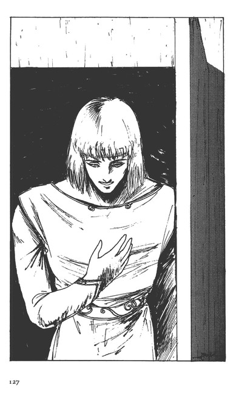
ニーはマーベルに微笑を見せると、すっと離れていった。
ニーのうしろ姿を見送りながら、マーベルは、胸のつかえがとれたような気がした。
『わたしは......バイストン・ウェルで生きる覚悟がついたのかしら？』
そう思わずにはいられなかった。
ニーは、自分がおかしいほど興奮しているのが分った。
『マーベル様が、ようやく自分に声をかけてくれた......』
それだけのことが、こんなにも自分を興奮させるのかと思うと口惜しい気がしないでもない。しかし、これで良いとも思う。
「絶対に任務を果して帰ってくるぞ！」
ニーの独言は、声が大きかった。
「どうしたんで？」
マッタ・ブーンが、憂鬱そうに訊いた。
「覚悟をする以外ない。勢いをつけなければ、ガロウ・ランに負ける」
そう低く断定した。
この日の早朝、ニー・ギブンのクルー、マッタ・ブーンとキチ二・ハッチーンは、バーンに呼び出された。そして、もう一人、機械の館付きのメカニックマン、イットー・ズンという新進の技師もいた。
彼等は、バーンから、ガロウ・ランに接触して、カットグラを奪還する作戦を命じられたのである。
二ーたちは、ジョクを含めた他の将兵に、この作戦を教えることを禁じられた。
「他の騎士たちに動揺を与えるのは面白くない。それと、ニー、貴公の罪は、まだまだ払拭されているとは思えぬ。故に、この任務を与えるのは、ドレイク様の御配慮である。この作戦が成功すれば、貴公は真実潔白の身になり、今後の憂いはなくなろう」
「ハッ、ありがとうございます」
ニーは、答えざるを得なかった。
バーンは、先に、ニーが、ラース・ワウに報せることなく地上人、田村美井奈を匿ったことを言っているのである。
「墜落と見せかけて、ハラン河のこの曲ったところに着陸する。そこに待つガロウ・ランと合流して、カットグラのある場所に移動。そこで、カットグラを修理したら、機を見て脱出しろ」
そのために今日の訓練には、メカニックマンのエキスパート、イットーを同乗させるというのである。
「行くぞ！」
ニーは、ブリッジに立つコ・パイロットのキチニのコールを待って、ドーメのプラットホームから発進のコールをかけた。
先行するドーメ部隊を追って、ニーのドーメが離陸すると、バーン、ガラリア、ジョクのカットグラが、十二機のオーラボム・ドーメを追って飛翔した。
麦の穂をそよがせる風を乱しながら、田畑に立つ人々の喚声を受けて上昇していくそれらの機械の光景は、すでに、ラース・ワウの日常的な風物になっていた。
ことに、ヒトデに似た四本のフレキシブル・アームを揺らしながら飛行するオーラボム・ドーメの姿は、人気があった。
海を知らない人びとにとっては、海に住むヒトデに似ているというドーメは羨望の対象になっていたのであろう。
アの国、強し！ ギィ・グッガ、なにするものぞ！
その風説は、すべて、この機械の飛行する姿によって証明されていると人々は信じていたし、他の国々の商人、軍人たちにとっても、偵察するだけの価値のある光景になっていた。
しかし、これらの機械を操縦する騎士たちから見れば、決して満足できる結果を手に入れているわけではない。
そのために、訓練飛行は、苛酷を極めた。今日の訓練飛行も正規の教科のものであった、
「調子がいいだろう？」
マッタが、カットグラの製作にもあたっているメカニックマンのイットー・ズンに振り向いた。
中年以上のスタッフがいないのが、この国のメカニックマンの現状である。若いイットーは、口も動かさずに、ただ頷くだけだった。
「......貧乏籤なんだよな......」
「言うなよ！ 騎士ジョクが、厄介になった騎士なんだから」
キチニが不満そうなマッタに、ニーのことを言った。
「こっちだって、こんなものが発明されなければ、もともとはガロウ・ランと斬り合う覚悟をしていたんだ。機械に乗れただけでも、ありがたいって思わなくっちゃな」
キチニは、ジョクに世話になっていたから、そのジョクが剣術を指南してもらっているニー・ギブンに礼を尽くさなければならないと肝に銘じている若者なのである。
「鍛冶屋上りが、なんでガロウ・ランに会いに行かなくちゃならんのです......」
それでも、イットーは愚痴を言った、
「そんならさ、なんで、オーラ・マシーンを作る仕事なんかしたんだ？」
「そりゃ、機械に興味があったからで......」
「それがお互い様って奴じゃないの？」
彼等を乗せたドーメは、訓練空域に来ると編隊飛行から、カットグラを中心にした戦闘隊形の訓練に入っていった。ジョクが提案した隊形からの侵攻と、戦闘パターンの訓練である。
三機のカットグラは、それぞれ三機ずつのドーメを従えて、侵攻、敵の探知、攻撃の幾つかのパターンの訓練に入った。
その光景は、遠くから見れば、ただ、蝿に似たものが、右に左に降下し、上昇している遊びにしか見えなかった。
それを遠望することができる森の一角に、ブラバの一統が伏せていた。
彼等は、バーンと別れるとすぐにあの小屋を離れて、約束の場所に移動を開始したのである。
しかし、本能的に護身術にすぐれているガロウ・ランたちは、追っ手を警戒することも忘れなかった。
「......兵隊の影はない......」
「誰もいない。土を掘っている奴がいた」
それらの情報を分析したブラバは、ビダとトレンに言った。
「あの男、バーンは、本当に我々に機械をくれるつもりだ」
「......機械を囮にして、俺たちを掴まえるつもりじゃねぇな......」
ビダもようやくブラバの考えが正しいようだと納得した。
「川に出る道を偵察だ！ ナラっ！」
ブラバは、テッテァ、モドド、ナラの一行をドーメと合流する場所に先行させた。
14 接 触
編隊訓練が終ったところで、バーンは、左右に続くジョクとガラリア機に、上昇の指令を出した。
「ジョクほどではないが、四千メートルを超えたい！いいか！」
「望むところだ！」
ガラリアは、高度を試したことがない。
「頭が痛くなるぞ。気持ちも悪くなる。無理は、駄目だ！」
「了解だ！ ジョク！」
ドウッ！ 三機のカットグラは、上昇に上昇をつづけて、十分ほどで高度三千メートルを超えた。バーンは、そろそろニーのドーメが、予定のポイントに脱出する頃だと判断して、わざわざ訓練項目にない飛行をしたのである。
バーンは、今回の作戦をガラリアやジョクに知らせることを嫌っていた。
表向きの理由は、余計なことに二人の頭をわずらわせたくないということであるが、それは違う。
真実は、バーンとショットには、まったく別の目論見があって、今回の作戦を実施しているのである。その真の目的は、ショットは、ドレイクにも知らせてはいない。
うまく行けば、こうしたいという二人だけの『予定』が合意されていたのだ。
それがあるからこそ、ガラリアやジョクに『カットグラ奪還』という表向きの作戦も知らせたくない心理が、バーンに働いているのである。
上昇を続けていたバーンのカットグラの機首、というよりもその頭部が下がり始めた。
「高度四千！ 凄いものだ。これならば、強獣の上に出られる！」
バーンは、多少、眠気に近いものを感じたが、この冒険の面白さに感勤していた。彼は、結局、ジョクやガラリアよりは生真面目で、こんなことひとつも、勝手にやることはなかったのだ。
バーンのカットグラは、背中に装備されているトンボの羽根に似た四枚の羽根を機体にそってピタリと後退させると、滑空から落下に近い状態になった。
ジョクとガラリア機もそれにならって落下を開始した。
刷毛で刷いたような薄い雲をなんども突破して、その三機の降下は続いた。
カットグラの左手というべきところには楯が装備されているが、それも今は、機体に寄せられていたし、右手に握られているマシン・ガンに似たシルエットのものも、右脚に沿って収納されていた。
「時速！ 七百八十キロッ！」
「まだだっ！ 八百キロまでは、堪えろっ！」
「こっちの機体は、震動がないっ！この調子じゃ、九百キロまではいくよっ！」
「冗談じゃないっ！ 音速を超えるつもりかっ！」
ジョクが雑音のまじる鉱石無線に怒鳴った。
「オンソク!?」
ガラリアは、音速という概念を知らない。
「時速千二百キロってところだ！ この速度は、特別なんだよっ！」
「その説明は後で聞く！ ジョク！ 八百まではいくぞっ！」
「行ってくれっ！ それ以上はっ！」
バーンの言葉に、ジョクは素直に従った。
地上の光景が、乱層雲の薄い層を抜けた瞬間にドッと視野一杯に、厚い緑の色と大地の色をもって迫った。
「クッ！」
ジョクは、速度計を見ながら、両手につかんだレバーを力一杯引き、両方の脚で踏んでいた。ペダルに全身の体重をかけるようにした。
ガガガガッ！ コックピットが震動し、地上の光景がザーッと下に流れ出した。
「八百三キロっ！」
ジョクは叫んだ。
正面を先行するバーンのカットグラも機体を立て直して、そのトンボのような羽根をバッと左右に開いた。
「ムッ！」
ジョクは、それにならって左腕を動かし、自機の羽根を開いた。そして、機体を左にひねって、ガラリア機を見た。
それは、かなり遅れて上昇姿勢に入ったようだった。
「八百六十キロだっ！」
その勝ち誇ったようなガラリアの声が、雑音の多い無線を通して、ジョクの耳を打った。
「ガラリア奴！ 機体がバラバラになるぞっ！」
ジョクは怒鳴った。
機体の性能には少しの不安もないが、新たな問題が発生したことを考えずにはいられないのだ。
三機は、再び編隊を組むと、帰投を始めたドーメの編隊を追って、針路をラース・ワウに取った。
「まったく、反省がないな！ ガラリア」
バーンの厳しい叱責が飛んだ。
「ないね。戦争をやっているんだ。気合が入っていなければ、勝てる戦いも勝てない。我々はドレイク軍の一員として、ドレイク・ルフトの期待通りの戦果を上げていないことを反省している」
「分るが......それでは、死に急ぐことになるのを心配しているんだ」
「カットグラの損失の方が、心配なのだろう」
「なんとでも言え。ともかく、注意するに越したことはない」
「......フフ、あたしの方が五十キロ速かった」
「そんな速度は、強獣には必要がないんだ。ガラリア。むしろ、新しい問題が生まれたんだよ！」
ジョクが、二人の会話に割り込んで、ガラリアを制した。
「なんだ？」
「フレイ・ボンムの炎の速度が弱いことだ。機体の速度に負けて、照準を取ることができなくなる」
「計算できるのか？」
バーンが問う。
「射程距離、三百メートルで十メートルはズレるな」
「えっ！ それでは、狙うことなどはできない。接近して、とどめを刺すしかない」
「そういうことだ」
「バーン、ドーメ部隊の無線......聞えないか？」
「ン......？」
バーンは、三機のカットグラの交信の間に、かすかにドーメ部隊の交信が入っているのに気づいた。
「遭難したドーメがあるらしいが......？」
ジョクの言葉に、バーンは、機先を制するように言った。
「捜索部隊に任せてもいいが、位置の確認は我々の仕事でもある。ドーメ部隊には、帰投させるか？」
バーンは、ジョクとガラリアを左右に散開させ、自分も低空を右に飛んでいった。
バーンだけニー機がガロウ・ランと合流する予定のポイント近くに移動していった。他の誰にもガロウ・ランとの接触を目撃されたくないからだ。
ニーは、編隊飛行訓練が終ったところで、操縦不良を口実にして、針路をかえた。
「......どうした！ ニーっ！ 針路がはずれているぞっ！」
数度、大隊長からコールがあったが、その度に、エンジンの不調を伝え、それでも帰投はできそうだと返事をした。
「大丈夫か！」
ラース・ワウに戻らなければならないドーメは、すでに帰投のための直線コース上に乗っていた。
オーラ・マシーンと言えども、生体エネルギーだけで、飛行するのではない。
撚料に相当するバイオ・リキュールを補充しなければ、オーラを燃焼させることはできない。
「大丈夫です。最小消費速度で飛べます！」
そんな報告をする間にも、ドーメ部隊の本隊からどんどん離れていって、無線が使えなくなった。ガロウ・ランとの合流ポイントは、山が壁となって電波が遮断される位置にあったからだ。これこそ、バーンとショットの合議の結果である。
ニーのドーメは川に沿ってしばらく飛行し、大きく川が曲るポイントの上空に達した。
「味方に怪しまれないための芸当が、一番つかれるようだな」
ニーは、ブラットホームに立って苦笑まじりに言った。緊張を隠すためだった。
目だけは、川と木々の間に向けられている。
川原の一角に着陸できるだけの広さを見つけると、降下して、川原スレスレの高度で旋回した。
「いたっ！」
キチニが、呻いた。声が震えている。
「着陸する。覚悟してくれよ......！」
ニーはプラットホームのバーに取りつけてある操縦グリップを絞りぎみにして、ドーメを川原に降下させた。
ジャリジャリリッ！ オーラ・ノズルの息が砂利を四方に吹き上げた。
「............！」
二ーをはじめ、クルー全員が心細そうな表情をしている。身に一切の武器を携帯していないからである。
「何もしないで殺されるなんて、御免だぜ......」
マッタ・ブーンが強がって、左右を見た。川の流れる音だけが、ドーメのブリッジを支配した。
キョッキョッ！ 甲高い声を上げて数羽の鳥が横切り、つづいて近くで枝が鳴る音がした。
「天の者たちよ！」
イットーが、両手を胸に合わせた時、川沿いの木々の間を飛ぶ動物の影が見えた。
「メゥだ......」
猿に似た動物である。
ニーは、一人プラットホームに身体を晒している緊張のために、全身に脂汗を浮かせていた。胃がキリキリと痛み始めた。
ふと、正面の木の下に人影が立っているのに気づいた。
メゥの動きに気を取られて見逃していたのだ。
「ガロウ・ラン......？」
「ヒッ！ ヒヒヒヒッ......」
醜悪な形相をしたビダだった。彼は肩を揺すって笑うと手を上げた。
それを合図に、数人の影が森のなかから躍り出てきた。ガロウ・ラン以外の何者でもない。
メゥのように素早い身のこなしで、全身から汚臭を放つ者たち......。
「ニー・ギブンかっ！」
アクセントが違う呼び掛けに、ニーは、目を走らせた。ガロウ・ランたちの一番後ろに、あの地上人がいた。
「トレン様!?」
ニーは、ガロウ・ランに混じって地上人がいるという事実をなかなか了解できなかった。
むろん、バーンからトレンの存在は聞いてはいた。しかし、地上人は聖なる存在である。その人が、ガロウ・ランと一緒にいる光景はニーの眼には奇妙に映るのである。マーベルを救出した時の光景とまるで雰囲気が違っていた。
「全員を乗せる。しかし補給物資があるはずだ！それを先に積みこむ！」
「あ!? ああ！」
トレンが、ブラバとビダを制したようだったが、彼等は、そんなことに構ってはいなかった。
彼等は興奮して、ドーメに駆けより、フレキシブル・アームに跨ったり、機体の装甲を叩いたりしはじめた。
「ドアを開けっ！」
「しかしっ！」
「任務だろ！ そして、ガロウ・ランに言いきかせるんだ。機械には一切触れるなってなっ！」
ニーは怒鳴った。展開をひとつ問違えれば、それは自分たちの死につながるのである。
今は、ただ、精神的にハイになって、ガロウ・ランに従ってみせ、しかもやるべきことはやらなければならないのだ。
「ギャババッ！ 機械だっ！」
「ドハハハッ！」
ガロウ・ランたちは、歓喜の声を上げて、ブリッジに押し入り、中にいる三人を舐めるようにねめ回して、武器の有無を調べた。
そして、ブラバとビダは、ニーの立つブラットホームによじ上って来た。
「......機械か！」
「いいか。カットグラの補給物資を積むんだ。物資があるはずだ！」
「確認している。ニー！ あの森の木！ 腰回りに白いペンキが塗ってあるところ！」
トレンの言葉に、ニーは、バーを乗り越えて、その木の下に駆け寄った。
カットグラの補修部品とリキュール缶があった。
「マッタ！ キチニッ！ イットー！」
クルーは、ドーメの中ではしゃいでいるガロウ・ランたちを背にして、つぎつぎに補給物資を運びこんでいった。
「フン！ 面倒なんだな？」
仕事を終えて、ようやくブラットホームに上がってきたニー・ギブンに、ブラバが難しそうな顔を見せた。
「機械というものは、こういうものなのだ」
ニーは、バーの操縦グリップがブリッジと連動していることを確認すると、
「離陸する」
と言った。
プラットホームは、ニー、ブラバ、ビダの三人に占領されて身動きもできないような状態だった。
トレンは、足をブリッジ中央のバーに乗せたまま、ハッチからブラットホームに上体を突き出すようにして立ち、三人の足の間から、外を見るようにした、
「飛ばせろ！」
ブラバが、ニーに命令した。
「何人乗ったんだ？」
「ガロウ・ランは、九人だ」
トレンが下から怒鳴った。
「ちゃんとブリッジに入っているのか？ 落ちても知らんぞ！」
そんなことを気にするブラバやピダではない。
彼等は、ブリッジのサイド・ドアの外についているバーにしがみついてはしゃいでいる二人のガロウ・ランに気づいていたが、何の注意も与えなかった。
ニーは、ゆったりとドーメを浮かせた。
「ヒヤーッ！」
定員オーバーのところに、カットグラの補修資材と補給物資を積みこんだのである。ブリッジのサイド・ドアの外のバーに掴まった二人のガロウ・ランは悲鳴を上げたが、ブリッジに潜りこめるスペースなどはなかった。
「飛んでるのかっ！」
ブラバとビダは、唖然とした表情で、移動し始めた森と川を見下ろしている。
「どこに行けばいいんだ」
ニーは、トレンに聞いた。
ブラバたちは、感嘆して、移動している四方の光景を眺め、ニーが、何をしているのかを確かめようとするだけで、飛行方向など全く気にしていない様子なのである。
「分らない。方向が読めない」
三人の脚の間から景色を見ているトレンには、どの方角に向っているのか想像のしようがなかった。
「......川に沿って、上流に向って見よう。慣れれば、方位も掴めるだろう」
ニーは、子供のように喚声を上げるガロウ・ランに左右から身体をぶつけられ、いまいましそうに言った。
「高度はとるな。高度が低ければ、連中だって、方向は読めるはずだ」
しばらく川に沿って飛行する。
ガロウ・ランたちの感動もようやくおさまりかけてきた。
「手前ェッ！ どこに行くっ！」
ブラバが吠えた。
「行く方向を教えてくれていないっ！ 教えろっ！どこに行けば、カットグラに会えるのだ！」
ニーがブラバに怒鳴り返した。
「どこに行くか、知らない？ なぜだ！」
「教えてくれてないっ！」
「ギィ・グッガのいるところだぞ！」
ブラバは怒ってから、ようやくコモン人にギィ・グッガの本陣がある村を教えていないことに気がついた。
「......知らねぇ？ そうかっ！ 知らねぇかっ！ガッハハハハ......！」
ブラバは、ひと笑いしてから、周囲を見回したが、はじめて見る上空からの景色に、自分たちのいる場所を掴めなかった。
「ビダ！」
ブラバは、呆けたように下に流れる光景を見つめていたビダの背中を叩くと、
「ギィ・グッガは、どっちだ？」
「ヌゥ？」
ビダも、しばらくは、自分たちのいる場所がどこか分らなかったようだ。
「あれだな？」
ビダとブラバは、山の形を観察していたが、やがて川の右に当る方向を示して、
「この向うだ。飛ベ！」
「よし！ 落ちるなよっ！」
ニーは、一人でもガロウ・ランを振り落したい衝動に駆られていたのだが、気持とは反対の言葉を口にした。
ニーは、ドーメを加速させて、やや高度を取った。
ブリッジのサイド・ドアのバーにとりついているガロウ・ランたちは、速度を増したドーメの動きに、喜んで手足を振り、奇妙な喚声を上げつづけた。
誰かが落ちて、森のなかに消えたその身体が粉砕されている様を見なければ、落下の恐怖などは感じない連中なのだろう。
ブラバでさえ、「ウーオーッ！ ホホホホホッ......！」と、満面に笑みを浮かべて、顔に当る風の快感に酔っていた。
15 本 陣
トレンは、ガロウ・ランたちの脚の間から、屏風のように迫ってくる山肌を見ていた。頂上の禿げぐあいから、ギイ・グッガの本陣に近いことが分る。
あのサラーン・マッキに会えるかと思うと、トレンは、身体の芯が熱くなるのを感じないではいられなかった。
『ガロウ・ランたちは、気持ち悪いが......その気持ち悪いガロウ・ランにさえ嫌われているフェラリオ......魔女だって言うのか......』
トレンは、サラーンを忌み嫌うべき存在だとは思わなかった。フェラリオを忌み嫌うのは、偏見だとトレンは思う。
トレンは、このバイストン・ウェルの重層構造世界がなにを象徴しているのか、ようやく思い当ったのである。
認識の違い、時代の違いが、世界を縦の重層構造にしているのだ。
そう考えると、たとえば、ガロウ・ランの地の世界は古代であり、コモン界は中世、そして、地上世界は現代、ということになる。
『ヨーロッパの魔女伝説は、偏見であったし、あのロペスピエールだって、まだまだ近代思潮に染まっていなかったから、恐怖政治をした。同じようなものだ』
だから、ガロウ・ランたちがフェラリオに持つ嫌悪感には、意味がないと思う。
『あのとろける身体を愛することができる......』
それが喜びでなくて、なんであろう。
トレンは、まだ危険が待っているとも知らずに、そう思った。
「ガハハハ......！ あれだぞ！ あれが、俺たちの陣だッ！」
トレンの足下で、ガロウ・ランたちの喚声があがった。
「あっちが、あたしたちのとこだ！ こっちがギィ・グッガの陣かい!?」
ガロウ・ランたちの喚声は、飽きずに続いていた。
機体がかしいだ。
山肌が上へ上へと走って、そして、次に谷間がガロウ・ランたちの脚の間に滑りこんできた。
その間に、巨大な影がザッと走った。ハバリーだ。
「ミュランッ！ 俺たちだぞっ！」
怒声がトレンの頭上でした。
数頭のハバリーが、周囲を旋回して、ドーメの動きを警戒しているらしかった。
ギャッ！ キャハッ！ ハバリーの鳴き声が、空を切った。
「どかせろっ！ 攻撃して来るぞっ！」
ニーが、かなり狼狽しているのが分ったが、トレンにはその状況が良く見えない。
ギハッ！ その一声が、ドーメの頭上を襲った。
「うわっ？」
トレンの身体が半分ほど浮いた。
別のハバリーがドーメをかすめる。
「うわーっ！」
右手で悲鳴が上がった。ブリッジのサイド・ドアのバーに掴まっていたガロウ・ランの一人が落下したのだ。
ドーメの右後方に落ちていくガロウ・ランの姿が流れ、その背後にギィ・グッガが陣を敷いている村が見えた。
「落ちたぞ！ 俺の責任じゃないっ！ 強獣をどけろっ！」
ニーは、ブラバとビダに怒鳴り、ドーメを急速に降下させていった。
「俺たちがいる！ 退れっ！ 退れっ！」
ブラバとビダをはじめガロウ・ランたちは、ハバリーに乗った戦士たちに怒鳴り散らし、ブリッジのドア際に立ったガロウ・ランのなかには、矢を放つ者もいた。
「どこに降りればいいんだ！」
ビダは、ニーの怒鳴り声に、村を見下ろした。
「プラバ！」
「知るかっ！ 機械を置く場所があるのかよ！」
「二ー！ 川が見えるか！ 村の中央あたりに川沿いの広場がある！川が曲っているところだ！」
トレンは、ブラバの脚の間から乗り出すようにして、怒鳴った。
「あれか......！」
ドーメの速度が遅くなり、トレンにも村が見えるようになった。
「そうだ。この下だ！ 向って右の岸だ。背の高い小屋がある。そこにカットグラが置いてある」
「了解した！」
ニーは、ドーメの機体を水平にして、ハバリーが接近して来ないのを確かめると、その広場に降下していった。ハバリーの群も、どうやら後退し始めた。
「ミュラン奴！ あとで、叩きのめしてやるっ！」
ビダは真赤になって、拳を空に向って振り廻していた。
村の家々の陰に、ガロウ・ランの姿が見えた。彼等は、険悪な形相で、ドーメの動きをジッと見守っている。
「ブラバだ！ 機械を持って来たぜぇ！」
ブラバは、プラットホームのバーに上体を乗せるようにして、周囲に怒鳴り散らした。それを見て、ビダも同じように怒鳴った。
「ブラバだっ！ ビダもいる！」
そんな声が、木々の陰から起り、ドーメを迎える喚声がそこここから湧きあがった。
ニーは、ドーメの機体を川原の面に対して正確に水平に保ち、着陸する用意をととのえた。
村の高みの道筋からも、ブラバたちの喚声に呼応して戦士たちの歓声が上がった。
ズーゥン！ ドーメの車輪が、川原の石に食いこみ、わずかに機体がかしいだ。
「ウワーッ！」
ブラバの身体が、プラットホームのバーから離れ、くるっと回ってブリッジに落ち、さらに川原へと転がっていった。しかし、敏捷な彼は、ヒョイと立ちあがると、
「ギイ・グッガに伝えろ！ 機械が来たぜぇ！機械を直すコモンも連れてなっ！」
顔を赤くして怒鳴りちらした。
ブラバの言葉など、誰も聞いてはいなかった。興奮して駆け寄るガロウ・ランたちは、あっと言う間にドーメを取り囲み、降りようとするナラたちを遮って、騒ぎたてた。
それでも、勝ち誇ったように左右を睥睨するビダのおかげで、ブラットホームに上がってくるガロウ・ランはいなかった。
ようやくプラットホームに上がったトレンは、ニーの脇に立って、ビダと笑いあった。
「......こんな国境の内懐深く、ギィ・グッガの軍が侵入していたとはな......」
ニーは、トレンの耳元で呻くように言った。
「そういう村なのか？ ここは」
「これを知ったら、ドレイク様は愕然となさいましょう。確かに、このバミルゥの山々は、アの国の者には苦手なところですが......まさか、こんなところにガロウ・ランの軍が......」
「そのまさかだよ。ギィ・グッガは、あんたらが思っている以上に狡猾な種族だぜ」
「そうらしいですな......」
ニーは、ドーメの周囲に集まって来た異形の人びとの群を見まわし、額の汗を拭った。
「我々は、どうすればいいんです？」
「まず、カットグラを直すことだ。そうすりゃ、逃げ出せる」
そう言いながらも、トレンは、サラーンのあの白い陶器のような肌を思い出していた。
ニーが、心配そうに言った。
「ラース・ワウの軍がここまで来るには、三日はかかる。それまでに直せなかったら、我々も攻撃を受けることになる」
「空襲だったら、今夜にもやられるぜ」
「そこまでの力は、まだありません。我々が、一気に飛んで来られたのは、補給ができたからです」
「そりゃそうだが......」
トレンは、サラーンが監禁されている谷間の方を見上げながら、嘆息した。カットグラの修理が終った時に、素早くサラーンを救出できるよう、方法を考えておかなければならないと考えているのだ。
「騎士ニー！ どうすればいいんです！」
下のブリッジから、マッタ・ブーンが堪えきれずに聞いて来た。
「ここを降りよう。まず、カットグラを見てもらう」
「どこです？」
「目の前の小屋のなかだ。俺だって、直していたんだぜ」
トレンは、怒ったように言うと、プリッジに降り、集まっているガロウ・ランたちを怒鳴りつけた。
「トレンだ！ 俺を殺したら、手前らがギィ・グッガに殺されるぜ！」
地上人でありながら、ニーたちよりもガロウ・ランに慣れているというのは、悲しい現象であろう。
トレンは、ドーメに這い上がろうとするガロウ・ランたちを押し退けて、ニーの一行を、カットグラを隠してある物置小屋に案内していった。
「ほう！ 意外と壊れていないじゃないか！」
メカニックマンのイットーは、安心したような顔を見せた。
その小屋は、冬に備えて、村中の飼い葉の貯蔵所として使われていたらしい。木戸は壊れていたものの、カットグラを隠すに丁度良い高さがあった。
「墜落したというから、もっとメチャメチャになっているのじゃないかって、心配していたんだ」
「部品は足りるか？」
「足りるな。余るくらいだ」
イットーの言葉に、一同はホッと息をついた。
「苦労したようですね？」
マッタは、トレンが手を加えた修理箇所を見つけて、声をかけた。
「まったくね。なにも知らないにしては、凄いものですよ」
マッタは、装甲を継ぎ接ぎした箇所や、バイオ・マッスルをつなげるために、別の箇所からリキュールを補充して接続した箇所を調べて、イットーに言った。
「ほう！ トレン、よく戻って来た」
その声は、ギィ・グッガつきの宦官、ドーレブである。
「仕事はすぐに始める！ いいな？」
「結構だ。あすには直るか？」
「............？」
ニーたちは、背中は曲っているが物静かなドーレブの顔を見て、これがガロウ・ランかと疑った。狡猾そうに見えはするものの、その表情には知的な輝きがあったからだ、
「......どうなんだ？」
トレンが不安そうに、木の足場に乗って、損傷を調べ始めたイットーの方を見やった。
「無理ですよ！ 完徹でやっても、四、五日はかかる！」
「飛べるようにするだけでいい」
ドーレブが低く言った。
「それが、そのくらいかかるんです！」
イットーは、カットグラのことになると頑固だった。
「その間に、アの国の軍が攻め寄せるかも知れん。一日も早く飛べるようにし、戦わなければならん！」
ドーレブは、厳しくつけ加えた。
「これで戦うのか!?」
「そのために、主たちを殺さずに運んだ。ギィ・グッガの命令だ。やれよ」
ドーレブは、垂れ下がったような眼で、一同をねめ回し、それから、カットグラを見やってから言った。
「あの機械を動かして来たのは、誰か？」
「わたしだが？」
「では、主は、機械の動かし方を教えろ」
「誰に？」
「あの女にだ」
ニーは、ドーメの周囲で騒いでいるガロウ・ランたちに背を向けて、カットグラを見上げている女性を見た。
「............？」
ニーは、眉をしかめた。一見してコモン人に見える女性であった。太ってはいる。
「何者だ？」
「我等のなかにも、コモン人の文字が読める者もおれば、空飛ぶことを嬉しがる者もおる」
ドーレブはニタッと笑って続けた。
「この機械の方は、ブラバが動かす」
「ブラバ？ あのブラバがか？」
「奴はやって見たいと言っている。それに、貴様たちが動かすのでは、我々は、敵を飼うことになる。それはできん」
理屈は分るが、ニーは、抗弁せざるを得たかった。
「わたしは、まだカットグラの操縦はしたことがない。教えられない！」
「ケッ！ 文字を読むヘレナアが言った。カットグラの動かし方を書いた本があった。違うか？」
ニーは絶句した。ガロウ・ランがどこまで理解しているのか分らないので、言葉を継ぐことができない。
「ヘレナァは、カットグラの腕を動かして見た。トレンがいない間にな」
「本当かよ？」
トレンが、ヘレナァと呼ばれるその女に訊いた。
「トレンが腹のなかに入って、動かした。だから、分った」
ヘレナァは、ゲルマン風の上着をまとい、タイツのようなものを穿いていたが、足が短すぎるので、コモンではないと分る。顔は、ひどい鮫肌で醜いが太い眉の下の瞳には、ドーレブに似た知的な輝きがあった。
彼女は、カットグラの操縦マニュアルを手にしていて、それを一同に示した。
ドーレブは、ヘレナァの自信に満ちた態度を満足そうに見やってから、トレンを指で招いた。
「............？」
トレンは、ドーレブの顔を覗いた。
「サラーンは、貴公とやりたがっているようだ」
ドーレブは、そうトレンに耳打ちした。
ショットは、機械の館の前の天幕の下で、ドーメ部隊の向う側に着陸してくるカットグラを見やりながら、作戦の第一段階は、終了したと思っていた。
オーラの光は落ちて、天には燐光が輝き出していた。もう、今日の捜索はできない。
ショットは、バーンに入れ知恵をした立場上、今日のオーラ・マシーン部隊の動きを心配していたのである。
バーンがショットの姿を見つけて駆け寄ってきた。
「発見できなかったようだな？」
「ハッ！ 合流地点には、ドーメが墜落した痕跡はありません。うまくいったのでしょう」
ショットは、バーンの報告を受けると、
「心配だな。ドーメが、また一機、戦を前にして失われたか......」
周囲の将兵たちに聞えよがしに言って、天幕の前の椅子に座った。
「ああ......昨夜の貴公の報告のなかにあった、オーラ・バッテリーという提案......」
「ハッ？ トレン様のおっしゃった？......」
「うむ、彼はいいセンスをしているな。だいたい、パイロット・マニュアルだけを頼りに修理などはできない筈なのにチャレンジしている......さすが地上人の技師である」
ショットは、周囲を警戒しながらバーンに教えた。
「そうでありますか......」
「なんとしても、会いたいものだが......戻るか？ガロウ・ランに取り込まれるか？」
「さて......？」
バーンは、苦笑した、
二人にとっては、どちらでも良かったはずである。
しかし、今、ショットは、トレンの提案した技術的なアイデアに興味を持って、トレンに会いたいと言う。
バーンは、その技術者の御都合主義を笑ったのである。
戦争をやっているのである。こちらの都合通り敵が動いてくれる筈はない。
「ニーは、命を賭けましょうが......」
と、言いかけてバーンは口を襟んでしまった。ジョクとガラリアが近寄ってきたのだ。
「騎士バーン！ リキュールの補給をしたら、もう一度捜索するぞ！」
ジョクは、天幕の下に置いてある樽の栓を抜いて、銅のコップに水を受けながら言った。
「無理だ！ 空を見ろっ！」
「まだ、大丈夫だ。やってみる」
「ジョク、今、ニーのドーメが最後に発した通信の電波の方向を特定しているところだ」
「そうかい......？」
ひとくち水を含んでから、ジョクは、ショットとバーンを見比べた。
ショットは、天幕の前の椅子に座って、前庭にならぶ十数機のオーラ・マシーンを見つめていた。
その姿は、自分のもたらした成果に自己陶酔しているように見えた。
「............？」
ジョクのちょっとした疑問を感知したのか、ショットが、ヒョイとジョクを振り向いた。
「なにか？ ジョク」
「いえ、なにか？」
「なにか気になるのだろう？」
「なにか？ と......」
ジョクは、コップを手にしたまま、ショットのかたわらに立った。
「......気になると言えば、ガロウ・ランが静かすぎることです。これまでの経緯から見て、ガロウ・ランは、このように時機を待つような知恵は持っていないと伝えられていたのに......連中は、最後まで考えずにコモン界を蹂躙するものだと言われているのに......」
「そうだったはずだ、それがどうした？」
ジョクは、またショットにテストされていると感じた。
「だから、これが本当のガロウ・ランの動きだとすると、変りますね？」
「なにが？｝
「コモン界の歴史が、です」
「どういうことだ？」
ショットは、久しぶりにジョクの言葉を聞こうとする態度を見せた。
「ガロウ・ランも人権を主張して、コモン界に独自の地歩を占めようとしているのではないかってね......自覚していませんでしょうがね、そうなるんじゃありません？」
「アメリカ合衆国のブラック・パワーの話か？」
「性質は、同じでしょう」
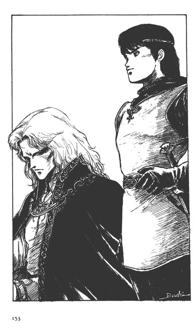
「......違うよ。それを言うならば、もっと世界そのものの問題だと思うな......」
「どういうことです？」
「ン......ガロウ・ランは間違いなくバイストン・ウェルの地の世界に生息するものだった。しかし、それが上の階層に進出してくるというのは、地上世界のブラックとホワイト問題とは違って、世界が変ることを象徴しているのじゃないかな？」
「世界？ 物理的なことを言っているんですか？」
「そうだ。文化史的な世界のことじゃない」
ジョクは、ミハンが持ってきてくれた椅子に腰を下ろした。
急速に周囲に闇の色が濃くなっていった。
「極端な言い方をしますと、バイストン・ウェルと地上世界がつながるとでも言うのですか？」
「ハハハ......想像力が逞しいな......そうだよ。ありうることだ。言ったことがあるよな？バイストン・ウェルは地上世界の妄想の世界だと......」
「はい......考え方としてね？」
「そういう世界における変化とはなにかを、考えてみた。我々、地上人が、こうも次々にバイストン・ウェルの世界に降りてくることもふくめて、バイストン・ウェルの世界は変ろうとしているのだ。なぜか？バイストン・ウェルは、地上世界とつながりたいのだ。なぜか？」
「......分りません......」
ホッと息をついて、ジョクは肩をすくめた。
「地上世界の妄想だけでは、バイストン・ウェルの世界を支えきれなくなって、この世界が、実際の地上人を必要としているからだと考えられんか？」
「サラーン・マッキのような天の力ではなくて？」
「あれだって、世界の代弁者さ」
「なるほど......それで......？」
「現代の地上人は確かに妄想はするが、現代の都市部で暮す人びとの妄想というのは、本当の妄想、つまり病的な妄想だ。自然と隣接して暮す人びとの恐れとか、自然と協調して創造された神話の類いではない。イマージュじゃないんだな」
「ヘー、そうですか？」
「そうだよ。ホラー映画とかオカルト映画の類いにすぎん。偏執狂の妄想だ。イマージュとしてピュアじゃないんだな。それでは、バイストン・ウェルを成立させる力にはならない。その危機感を抱いたバイストン・ウェルという世界の意思が、地上人にバイストン・ウェルの存在を示すために胎動を始めていると考える......」
「そう考えると、最近、地上人の降臨がつづいた理由も、アの国に地上人が集中して降りた理由も分るというのですか？」
「そうは思えんか？」
「長い間、バイストン・ウェルに住んだ方の考えです。ぼくには否定はできません。しかし、そのこととガロウ・ランの変化はどう結びつくのですか？」
「簡単じゃないか、我々が上から降りて来たんだ、下からの突き上げだって、この世界は容認するだろう？」
「納得がいきました。となれば、あのクスタンガの森に住んでいるという羽根つきのちっちやな人、ミ・フェラリオが存在する理由も、同じですか？」
「ああ......ここの人びとはクスタンガの丘と言うぞ」
「それ、なんなんです？」
「知らんよ。コモン界にある一種の結界らしいが、見たことはない」
「嵐の壁のむこうにある美しい森だそうですね？」
「丘だって言うぞ」
ショットは、その言葉にこだわった。
ジョクは、言い直さない自分のズサンさを感じながらも、ショットの頑固な一面を知って苦笑した。
「ドレイク様です！」
ショットは、椅子から立ってラース・ワウの主人、ドレイク・ルフトを迎えた。
「捜索隊は、出したのか？」
「ハッ！ 第二十八部隊を、墜落したと思える地点に出しましたが、まだ場所の特定ができません。判明しだい部隊を移動させ......」
天幕の下で地図と首っ引きになっていた将官が答えた。
「ン......明朝は、オーラが上りしだい、オーラ・マシーンを出動させいっ！」
「ハッ！」
ドレイクは、ショットの前に立って、黙って頷いて見せた。
「オーラ・マシーン部隊には、今日の捜索を終了させました。未だ、ニーのドーメの行方は確認していません」
「ご苦労......」
ジョクは、バーンの報告を耳にしながら、自分のカットグラの方に向った。最終的な整備点検をしておかなければならないのだ。
「ジョク、なにか妙だな？」
ガラリアが、隣り合わせに置いてある自分のカットグラの下から出てきた。
「なんでだよ？」
「もう少し殺気立っていて、いいように思うのだが、みんなリラックスしている」
「ニーのことだ。遭難したとしても、自力で帰ってくると信じているのだろう」
「それでかな？」
ガラリアは、天幕の下でなにごとか協議をしているショットとドレイクを見やって、ショート・カットの髪をかきまぜるようにした。
「髪、洗えよ！ 土ぼこりが見える」
「お互いさまだよ」
ガラリアは、ニタッと笑った。
16 操縦の始まり
トレンは、土間に入ると、上着の汚れが気になって、パタパタと両手で叩いて埃を払った。
ガロウ・ランには、トレンに新しいものを着せようという発想はまったくないし、ニーたちは、作戦のことで頭が一杯で、バーンに頼んだはずの着替えは、持ってきてくれなかったのだ。
『......ギィ・グッガに呼ばれたってことは......サラーンのことが、バレているとは思えないが』
トレンは、不安でならなかった。
自分ごときを殺すのに、ギィ・グッガがわざわざ本人を呼ぶはずはないと思った。
薄暗い土間を警護するガロウ・ランは、十人。彼等は、なんの感情も見せず、土間の隅にうずくまっていた。
待たされること数分......。トレンは、ギイ・グッガが、コモンの女を凌辱する光景を見なければならないのかとうんざりした。
『女を殺してみせるのも、ショウでなくって、本気なんだものな......』
トレンは、ノロノロと立ちあがった一人のガロウ・ランの女を見つめた。彼女は、視線が合っても、まばたきひとつしない。
「トレン......！」
ドーレブが土間につながるドアを開いた。
トレンは、木の床に靴のまま上がって、ふたつほど部屋を横切った。案の定、その部屋の隅の暗がりには、手足を固縛されたコモンの女がころがっていた。生きているのか死んでいるのか、確かめようがなかった。
『............』
ギイ・グッガの居室は、明るかった。四方の壁のガス灯が、部屋の中央にあるテーブルの上のものが読めるほどに輝いていたのである。
「............？」
入って来たトレンに気づいて振り向いたのは、あのパイロット候補という女であった。
正面には、ギィ・グッガがだらしない姿勢で、熊の皮に似たものの上に座って、手にした素焼きの容器のなかのものを舐めていた。
「トレン......明日には、カットグラを少しは飛ばせろ」
「ハッ？」
トレンは、ギィ・グッガの口から出た思いもしない命令に戸惑って、頭のなかで彼の言葉を反芻した。
「少し飛ばせろ！ ここを動く」
「そんな！ 無茶です。今しがたようやく壊れた箇所の点検をおえたところで、これから直そうっていうんですからっ！」
「ヘレナァがよ、全部直す。少し直す。この違いを言った......手前たちが戻った......アの国の軍が来る。だから、ここを動く」
理屈のつながりは分った。
トレンは、ギィ・グッガが、状況の全体を把握して、こちらの目論見を承知の上で行動しているのである。
「トレン、このヘレナァは、コモン人の血を受けた女だ。賢いのだよ」
ドーレブが補足した。
「しかし！ 彼女には修理の程度は分らないはずだ。技師の見立てでは、数日はかかるんだぜ！」
トレンは、前に使った手で切り抜けようとして言葉を続けたが、ギィ・グッガに遮られた。
「トレン。明日の朝、少しでもカットグラを飛ばせろ！できないなら、貴様を殺す」
「そんな、理不尽です！ 無理なものは、なんとしたって......」
「貴様を痛めつければ、その技師とかいう男、修理を急ぐ」
ギイ・グッガは、優しい声で断定した。それは、ニーたちがいれば、トレンの役割は必要ないと見抜いてのことであった。
「伝えます。伝えますが......」
「それでいいんだ。トレン......」
ドーレブは、描撫で声で、トレンの退出をうながした。
「なんてこった......」
トレンは暗澹たる思いで、カットグラを修理している小屋につづく坂を降りていった。サラーンとの密会もなにも吹き飛んでいた。
左右を走る騎馬の列があった。馬車が狭い村の道を、上に下に動き始めていた。
ガロウ・ランたちが、撤退を開始したのである。
「無理ですよ！」
トレンの話を聞くと、ニーは即座に言った。
「少しでも飛ばせればいいんだ。ギイ・グッガだって、そう言った。ほら！ジャンプでもいいんだ。移動できればいい！頼む！」
トレンは、ニーの前に膝を折って哀願した。
「いいですか！ 直しはしますよ。それがこっちの目的なんだから......その任務は遂行しますが、そのためには、時間を稼いでくれないと......。それが、ガロウ・ランとつき合いのあるあなたの役割でしょう！」
「つき合いなんてない！ ギィ・グッガは、人間的な感情など少しもないガロウ・ランなんだ！頼む！イットー！」
トレンは、カットグラを修理するための足場の上に立っているイットーに駆け寄って、その膝に取りすがった。
「無理なんですよ！ 無理っ！」
「マッタ！ キチニっ！ 頼む！ なんでもするからっ！」
トレンは、二人の前に回って、次々と同じように哀願した。
ニーは、トレンを眼の端で見て、静かに言った。
「イットー、エンジンの出力だけはなんとか戻せよ。それと、足の駆動系を補強すれば、なんとかなる」
「分りませんよ。俺だって、こんなところに長くはいたくないんですよ。でもね！」
イットーにも、成算がある、とは言えなかった。
それに、彼は、地上人のトレンの命を救うために努力することを、生理的に拒否していた。
「いいか、イットー！ ガロウ・ランに操縦を覚えられる前に、動かすんだ。そうしなければ、俺たちは一生帰れなくなる」
「帰れますよ！」
イットーは、怒った。
「イットー、ガロウ・ランが操縦を覚えちまったら、俺たちはまったく帰れる見込みがなくなるんだ。俺は殺されるだろうが、お前は、一生、ガロウ・ランと暮すんだ」
「そんなこと！」
「ガロウ・ランが相手で、いいのか？」
二ーは、入口にたむろしているガロウ・ランたちが、自分たちを凝視しているのに気づいて、
「だから！ ギイ・グッガの命令通りにやるんだ！」
芝居がかった大声を出して、イットーに命令した。
「その男っ！」
入口にたむろするガロウ・ランの群を押し分けて入って来たのは、ブラバだった。商人の変装を解き、革鎧を身につけたブラバの姿は、まぎれもないガロウ・ランの戦士だった。
「機械を動かす者は、ここでは必要ないな？ 外の機械を動かすのを教えろ！」
「こんな時間にか？」
ニーは慌てた、事態は、予想以上に早く進行している。
「ヘレナァが、言う。ドーメは易しい」
またも、あの女が差出口をしたのだ。
「その手で、俺もやられているんだ！ ニー！」
トレンは、足場から駆け降りて、ブラバの背後の闇のなかから出てきた女を指さした。
「あたしは、ヘレナァだ。ブラバに操縦を教えろ！そうしなければ、あんたたち、全員を殺す。命令に従えば、全員は、機械を作る者として、ギィ・グッガが雇う」
ヘレナァの凛とした声は、ニーたちに威圧感を与えた。正確な言葉、混濁していない意思の走り......。
「......ガロウ・ラン!?」
二ーの呻くような質問に、女はフワッと頷いてから、さらに言った。
「面倒なことはいい。飛ばせればいい。あとは、読んできかせる」
「りょ、了解した」
「よーしっ！」
ブラバは満面に笑みを浮かべると、ニーの肩をドンと掴んで、引き寄せた。
よろけるようにして、ニーは闇の川原に出て、ドーメに向った。
「ブラバ！」
見張りの男たち女たちが、松明をかざして二人を追った。
「篝火をドーメの周囲に置いてくれ。輪にするんだ。そうしないと、上から地面が見えない！」
ニーは、そんな初歩的なことから始めなければならない自分の境遇を考えると、身の毛がよだった。
さらに、ニーは、村全体が夜の雰囲気とは違うことに気づいていた。松明の明りが村の道筋に列をなしていたし、馬の走る音がそこここにこだましていた。
『ここを撤退するというのか......？』
トレンの恐怖の意味が、多少分って来たように感じられた。
『......。バーンが言っていたように、ガロウ・ランの奴、次々と戦い方を学んでいる。動きが違う......』
ニーは、ドーメの周囲に篝火を用意させる指揮をとりながら、考え続けた。
『騎士ジョクが言う通り、この国は、なにものかを呼ぶ力があるんだ。それが世界の力とでも言うように......ガロウ・ランたちも、その力を受けて成長しているのか？』
今夜の村の雰囲気を見れば、そう考えざるを得なかった。なによりも、このブラバとヘレナァというガロウ・ランが、そのことを証明しているように感じられた。
ブリッジに上がったニーは、ガス灯の下で、操縦するために必要な計器と操縦グリップ類の説明をブラバとヘレナァにした。
「駄目だ。覚えられねぇ！ 動かせ！それを見りゃあいい！」
結局、ブラバはそう言い、ヘレナァも同調した。
「では、俺がやることを見ていろ。夜だから、上昇して、降りるだけにする」
ニーは、最低速度でゆったりと上昇して見せた。
「やらせろ！」
「そんなっ！」
「やらせろっ！」
ブラバは強硬だった。
「いいか、着陸するから、外の景色、明りの見え具合を覚えるんだ。そうしないと地面が分らん！」
ニーは怒鳴りながら、ドーメを着陸させて、ブラバに二本の操縦グリッブを持たせた。
「うむ！」
恐れを知らない人というのは、このような時に驚くべき能力を発揮する。ブラバは、簡単にドーメを上昇させた。
「......ヌハっ!? ガッハハハハ......！」
ブラバに合わせて、ヘレナァも甲高い声で笑い、
「前に移動するのはどうする！」
「駄目だ！ 暗くて山との距離が分らない！そのままだ」
ニーは、自分よりひと回り大きなブラバの身体を押し退けて、操縦グリップを奪おうとした。
「ンドッ！」
ブラバは、逆にニーの身体を肩で払いのけた。同時にブラバは操縦グリップを大きく動かした。ドーメの機体が上昇する時のように傾斜した。が、加速がかからないので、浮力が生じない。機体は、滑るように後退した。
「ウッ!? 落ちる!?」
「外を見ろっ！」
ブラバに払いのけられ、ヘレナァにぶつかったニーは、ブヨッとしたヘレナァの感触にゾッとしながらも、それを支えにして、ブラバの方に向こうとした。
ブラバは、両手を操縦グリップから離して、大きくよろけて来た。それをかわしながら、ニーはバーに掴まって、上になった操縦グリップを掴もうとした。が、うかつに掴むとクリップを引くだけになって、機体を引っくりかえしてしまう。
床を壁にして、ニーは上にあるアクセル・ペダルを手で押した。機体に加速がかかったようだが、まだ、十分ではない。
「アー！ 火がっ！」
ヘレナアの悲鳴が上がった。ズン！ 下から突き上げられるような振動を感じた。
ニーの身体がその反動で上に跳ねて、両手で触れていたペダルに力がかかった。
ニーは、浮き上がった頭がペダルにぶつからないように首をねじ曲げた。
「くっ！」
ニーのねじ曲った首がブリッジの後部、下になった方を向いた。ブリッジの小さな窓から、篝火の列が見えた。
「クッ！」
ニーは、壁にむき出しになっているバイオ・マッスルの筋を掴んで、身体を引き上げると、左の操縦グリップを前に押しながら、右の操縦グリップを肩口で押し戻して加速をかけた。
「ウオオーッ！」
ブラバとヘレナァの呻きが聞えた。
「チッ！」
山にぶつかることを恐れたニーは、ドーメの機体を安定させ、ホバリング状態にしようとしたが、加速をかけた直後だけに、姿勢制御に時間がかかった。
「ウッ!?」
オーラ・ノズルの光を反射するものが見えたように思えた。
バリン！ ザザッ！ 機体をこする音がした。木にぶつかったのだろう。後退しようとして、ようやく、前部ノズルをアクセスすることができたと思った。
が......、ズザザザッ！ 正面に衝撃を受けて、ニーの身体は中央のバーにぶつかった。数枚の窓の透明な甲殻が破れた。
「チッ！」
ニーは、飛び散る破片を避けてから、操縦グリップを掴み、後退を始めた機体の速度を零にして、全ノズルをホバリング状態に安定させていった。
「......フッ！ これが安定状態だ。移動しないで空中に留っている状態だ。分るか！」
ニーは、二人のガロウ・ランに怒鳴った。
「空中に留っている......？」
ブラバとヘレナァは、窓から周囲と下の光景を覗いた。
「これが水平儀だ。この線が、水平に、真横になっているだろう？」
ブラバとヘレナァは、ニーの手元を覗いた。ヘレナァはしたり顔で、
「そうか。その握りの位置とその足踏み板、それにこの水平儀？そっちのは速度計だな？」
ブラバは、透明な甲殻の破片が残っている窓から再び外を覗いて、
「分んねぇもんだ。どこにいるのか、夜は、分んねぇ......」
「それが、空というものだ。計器がないと身体が水平になっているかどうかも分らない」
ニーは、ドーメの機体を前後左右に傾けて見せ、人間の感覚が傾斜を正確に感知できないことを教えた。
「だから、誰がやったってすぐに飛ばすことはできんのだ」
「クッヘヘヘ......分ったよぉ。分りゃあ、飛べるさ」
ようやく、空にいることを納得したブラバは、窓の下に並ぶ幾つかのグリップを握った。懲りてはいないのだ。
ブラバは、平気でそのグリップを押してまった。力一杯押すだけで、コントロールすることを知らない。
「うむ......？」
幸い、そのグリップは、機体をコントロールするものではなかった。
「なんだ？」
ブラバは、ノズルの音とは違う音が聞えるのに気づいて、二ーに訊いた。
「フレキシブル・アームのアクセス・レバーだ。外を見れば分る」
「フレキ・アム？」
窓から首を覗かせたブラバの身体が、そのグリップに触れた。それでさらに、三本のフレキシブル・アームが動いたようだ、
「ホーッ！ こりゃあ、火を噴く奴だぜぇ！」
ブラバは感嘆して顔を引っ込めると、どうすれば火を噴くのだ、とニーに訊いた。
ニーは、一瞬、教えるのはやめようと思ったが、エネルギー切れにしてしまう手があるのに気づいた。
「グリップの上の蓋を開けて、ボタンを押すんだ」
ニーは、その手つきをして見せた。
「フン......？」
ブラバは、ひどく簡単にグリップの上の蓋を開け、チーク材で飾られたボタンを押した。
ドウンッ！ その音と同時に、ブリッジが明るくなった。
「ウオッ!?」
ブラバの巨躯がビクリと揺れた。そして、その眼をクワッと見開いて前方の空間を見た。
閃光が、闇のなかに光の筋を作り、前方の山肌を直撃したのである。
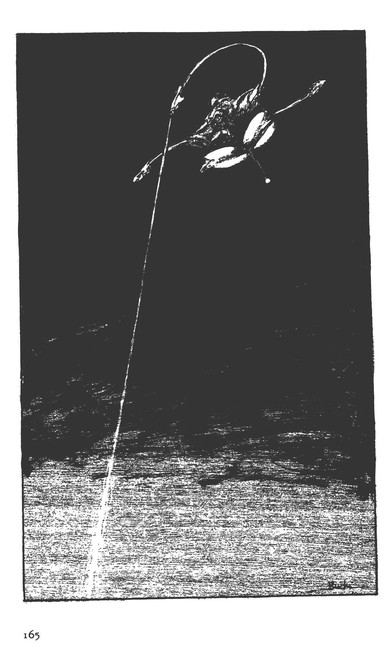
距離は、二百メートルとなかった。真赤な炎が広がって、木々の影を浮き立たせ、岩肌を炎の輪が走った。
「ボタンを離せ！」
ニーは、反射的にブラバの手首を取っていた。その瞬間、ニーは、エネルギー全部を使い果させてしまえば良かったと思ったが、遅かった。ブラバの手がボタンから離れ、フレキシブル・アームから放射された火炎の筋も消失した。
「オウ、オーッ！ そういうことかっ！」
ブラバは、ゴウゴウと燃え始めた山肌と手元のグリップを見比べて、感嘆した。
機械を操作するというのはどういうことなのか、真実分ったという顔である。
二ーは、絶望的になった。
経緯はどうあれ、ニーは、機械をあつかうという概念を確実にガロウ・ランに教えてしまったのである。
ニーは、山の方に視線を移した。山火事が発生していた。風がないせいであろうか、まっすぐに立ち昇る煙を炎が下から照らし出して、不気味な柱のように浮き立たせていた。
それは、あたかも、ガロウ・ランの存在を示すトーテムポールのように、オドロオドロしく威圧する物の形となって、そそり立っていた。
17 闇を読む者
ギィ・グッガはいつものように、寝る前の儀式を行なっていた。女一人を凌辱するという仕事だが、オーラボム・ドーメの飛行音を耳にすると、その若い女を放り出して、居室の前のポーチに出て行った。
寒気が、彼のすべやかな肌を刺激して、女の体臭がはぎ取られていくのが快かった。その感触は、ギィ・グッガにとって、初めてのものだった。
彼にとって、ガロウ・ランであろうとコモンであろうと、異性の放つ体液の薫りは、精力剤に似た効用を果していた。彼自身も、女たちの匂いは、血の匂いも含めて、感性を刺激する以外のなにものでもないと承知していた。
しかし、今夜は、違っていた。さわやかさ、という今まで知らなかった感触に、肌がふるえたのである。
『......地上人に傷つけられたからか......？』
言葉にはならないものの、そんな考えがギィ・グッガの頭をよぎった。
フラフラと上昇する丸っこいドーメの機体が、篝火の明りにほんのりと浮き上がって見える。ブラバが、訓練を始めたのである。
ギィ・グッガは、満足だった。
敵と同じものを所有し、その上、敵にない強獣部隊があれば、こんどこそ、アの国は我物になるであろう。
招集をかけていたガロウ・ランたちの新しい部隊と合流するのも、今日か明日という日程である。
『機械を知らねぇ連中には、敵の機械を見せてやる。そうすれば、ガロウ・ラン共は、みんな俺に従う』
そういう論理が、言葉となって列挙されたわけではないが、明瞭な思考として、ギイ・グッガの脳裏に刻みこまれていった。つまり、ドーメを、自分のものになった機械として認識していたのである。
昨日までは、自ら強獣を操って軍を指揮せざるを得なかった男が、今は、触りもしない機械を、自分のものと認識しているのである。ガロウ・ランとしては、極めてすぐれた理解力と言えた。
もちろん、軍を統率するという面から見れば、会わない人びとでさえ自分の部下として指揮Ｌてきたのだが、『もの』に対して、このように認識できるというガロウ・ランは珍しい。
ヘレナァの場合は、想像力が勝手に拡大して、『もの』を取りこんでいるだけなのだが、ギィ・グッガの認識は、もう少し確実なのである。
「......ン？」
ドーメの不自然な動きが安定した。少し間を置いてドッと赤い火が伸びて、左の山肌を焼いた。
それは、闇のなかに、巨大な光の帯となって目撃された。
「ホーッ！」
天に向ってまっすぐに立ち昇る煙の柱が、ギィ・グッガには、自分の意思そのものに思われた。
彼は、ひどく感動した。
「そうけぇ......」
ギィ・グッガは、部屋のなかの気配にゆっくりと振り向いた。
部屋の中央に敷かれた毛皮の上に倒れこんでいたコモンの女が、逃げ出そうと背中を向けたところだった。血の混じった汗ともなんともつかない液体でビッショリと濡れた大腿部の筋肉が、ピクピク痙攣していた。背中には、ギィ・グッガに引っ掻かれた傷が赤いみみず腫れとなって、ベッタリと貼りついていた。
「ヘッハッ......！」
ギィ・グッガに気づかれているとも知らずに、その女は喘いだ。その女は、そう、あまりいい味ではない。今朝がた賞味した女を呼んだ方がいいと思いながら、ギィ・グッガは、妙なことを思いついていた。
「......女！」
「ヒッ！」
床を這って逃げようとしていた女は、恐怖に引き攣った顔を向けた。今は、ギィ・グッガは、そんな顔を見ても欲情しなかった。
自分でも不思議だと思う。
「言いつけたことをやれば、もう呼ばねえ、主の股座が使えるならよぉ、好きな男とやればいいよぉ。使えればのことだけどよぉ......ドーレブ！」
ギィ・グッガは、喉を鳴らすとドーレブを呼んだ。
その女が、壷に入れた飲物と少しばかりの食べものを携えて、カットグラを修理している小屋にやって来たのは、それから間もなくだった。
その女が、ギィ・グッガが見ていなくても、命令されたことを実行するのは、彼の次の凌辱が恐ろしいからでも、ガロウ・ランの目がどこにでもあるからでもない。
この村を襲ったガロウ・ランによって、村人が次々に惨殺され、使役され、家族の姿が見えなくなっていく光景を見続けて、金縛り状態になっているだけのことだった。思考力など、まったく働いていない哀れな少女なのだ。
「へへ......うまそうな女じゃねぇか？」
二ーたちを警護するガロウ・ランたちは、慰み者が来たと思った。
「......ギイ・グッガが、この女をコモン人につけたんだ。手え出すな！」
女を小屋に連れて来たガロウ・ランの兵士は、そう叫んで、さらにつけくわえた。
「ギィが使った女だ。穴はメチャメチャだでぇぉ！」
兵士たちがドッと哄笑した。それは明らかに侮辱であったが、同時に、その女の今後の身の安全を保障する言葉でもあった。
女は、ヨロヨロとよろけながらも、持って来たものを必死で支えて、置く場所を捜した。
この山間の村から一歩も外に出たことがない少女にとっては、カットグラもドーメも、機体を修理するために組まれた足場の光景も、ギィ・グッガがもたらした恐怖の対象にしか見えなかった。
女は驚愕し、ますます、怯えた風を見せた。
「なんだ？」
ドーメから降り立ったブラバは、女の手にした飲物の壷を覗いた。
酒のようなものが入っているらしかったが、ブラバには、その飲物がなんであるか分った。
「ギィ・グッガが、コモン人にだと？」
女を連れて来た兵士に確認すると、、
「ニー！ お前たちに、ギィ・グッガの差し入れだ」
「夜食か？」
ニーが警戒の表情を見せた。
トレンが「食えるものかっ！」と毒づいた。
「毒はないぜぇ？」
ブラバは、壷を傾け酒を手に受けて、一口飲んで見せた。
「食い物も毒味して欲しいな」
トレンの言葉に、ブラバは嫌な顔もせずに、ナムに似た物を口に放り込んだ。
「明日は、俺がドーメを動かす」
口をモグモグさせながら、ブラバはそう言うと、篝火の向うに消えていった。
ブラバは、初めてドーメで飛ぶという体験をして興奮していた。すぐに寝られる状態ではなかったので、気を抜くための女を調達しに行ったのである。
ブラバは、何も心配はしていなかった、つまり、ブラバは、ニーたちに供される夜食に、ギィ・グッガの使う白い粉が混入されていることを承知していたので、自分かいなくても、修理が遅れることはないと安心して出かけたのである。
「そこに置いてくれ」
ニーは、カットグラの前の足場の下を女に指し示した。そして、カットグラに取りついているクルーたちに、夜食を取れと命令した。
飲物は、辛いカルピスのようなものと言えば良いだろう。ニーたちは、その食事のおかげで、その夜は、朝まで突貫工事ができたのである。
彼等は、眠気を感じることもなく、まだまだ働けるという状態で朝を迎えた。ガロウ・ランに監視されて、緊張していれば、働きつづけられるのだと彼等は思った。食事に麻薬に類するものが混入されているなどとは、想像もしない。
ともかく、カットグラを飛ばせる状態にすることはできた。
「......しかし、実戦に使える状態ではありませんぜ」
イットーは、それでも、満足そうだった。彼はつやつやした顔で、カットグラを見上げた。
「今夜の仕事としては、これでいい。あとは、交代して順々にやるさ......」
「装甲の張り替えと、バイオ・マッスルの補強を本格的にしないとねぇ？」
マッタとキチニも、まだまだ仕事ができるという風だったが、撤退のために工具と部品をまとめる仕事にかかった。
その朝、ギィ・グッガ自身も、バミルゥの山間の村から後退した。
夜半より順次撤退作業をしていた軍は、サラーン・マッキを収容することも忘れてはいない。
数にして、三百人ほどの部隊は、周囲に散開している部隊を糾合しながら、かつ、アの国の偵察部隊を掃討する動きを見せながら、北に移動していったのである。
ニーたちのオーラ・マシーンニ機はしんがりであったが、好きにできる状態ではなかった。
ギィ・グッガは、トレンと共にイットーとマッタ・ブーンを人質として彼の直掩部隊に入れ、オーラ・マシーンには、ニーとキチニが残された。
「おいっ！ そろそろ行くぞ！」
ブラバは、ヘレナァをニーの方に押しやってから、自分も数人の手下を引き連れて、ドーメに搭乗した。
ドーメの操縦は、キチニである。
ブラバの手下は、今朝になって彼の指揮下に入った男たちである。
彼等は、ブラパが空を飛ぶ機械を動かすと聞いて、率先してブラバの下につくことを願い出た若い戦士たちであった。
「おーいっ！」
ヘレナァが、カットグラのコックピット前の足場の上で、短い手を振ってニーをよんだ。
「昨夜から御苦労だった」
ニーは、食事を運んでくれた哀れな少女にそう言ってから、カットグラの足場に脚をかけた。
「あんたが、動かすのか？」
「お前が操縦をする。あたしは、見ている」
「......？ 俺は、カットグラを操縦したことがないんだ」
ニーは、たっぷりと皮肉を込めて言ったつもりだったが、ヘレナァの返事は明快である。
「考えた......あたしよりはできる。やれ！」
「しかし......」
二ーは、ヘレナァかブラバが操縦するカットグラに乗せられて一緒に墜落するという嫌な想像もしたのだが、自分がカットグラを操縦しても、状況は少しも良くならないだろうと思った。
ニーはうんざりしながら、コックピットのシートに座った。
計器とバイオ・マッスルの間にある操縦グリップを確かめてから、ガラリアのイニシアルの入ったキーを所定の位置に差しこんで、オーラ・エンジンを始動させた。
「できるじゃないか！」
「この程度で、できると思われては困る。俺は、死にたくない」
「ンならさぁ、ちゃんと飛べばいいのさ」
「どの程度飛べるか分っているのか？」
「飛ぶよ......」
航続距離などの概念は、まったくない手合いである。やって見せるしかないだろうと覚悟はしたものの、目的地まで到達できずに、途中で不時着したら、この女はどうするだろうと考えると、帰りたくなった。
修理しろと言われても、ニーにはカットグラのメカニック面の基礎知識は皆無である。
『三人を人質に取られていなければ......』
思わず愚痴が頭に浮かんだ。
「......知らねぇぞ！」
「なーに考えてんだよ！」
ヘレナァは短剣を取り出して、その峰でニーの頬を叩いた。
二人のガロウ・ランの男たちが奇声をあげて、コックピットに滑りこんで来た。二人は、ヘレナァの命令で、ニーの右横の狭い隙間に身を寄せた。
「............？」
食事を運んでくれた少女が、まだ正面からニーたちを見上げていた。ゲッソリとした頬が、少女の運命を物語っているようだった。
「ヒーッ!?」
少女は、糸のような細い悲鳴をあげて、小屋の横のくらがりに駆けこんだ。カットグラの正面の川原にあったドーメのオーラ・ノズルが、川原の石を弾き飛ばしたからだ。
コ・パイロットのキチニが操縦するドーメは、ブリッジのハッチを閉じていた。昨日のように、ドーメから落下するガロウ・ランはいない筈だ。
「行くぞ！」
ニーは、カットグラの歩行操作については正確には知らない。いきなり、カットグラの羽恨をひろげると、一気に正面の川原の空間にカットグラの機体を飛び出させて、加速をかけた。
ギュールルル......！ 小屋の屋根がパッと消えた。カットグラの機体は、宙に飛び立っていた。
「ウワーッ！」
ガロウ・ランたちが、背後の壁にたたきつけられたようだった。
ニーは、そんなことには目もくれずに、神経を前方と計器に集中した。キチニと共にジョクから預かった大切な部下であるマッタを取り戻して、一緒に脱出するまでは、なにも考えないと決心していたのである。
「チッ！」
ニーは、カットグラに加速をかけて、先行するドーメの上に出た。
「手前っ！」
「言ったろうっ！ 俺はカットグラの歩かせ方を知らない。飛ばすのも、今が初めてなんだ。それに、ちゃんと直っていない！」
ニーは、上昇と降下を繰りかえしながら、先行するドーメの機体を追っていくしかないのだ。
言わば、空中でジャンブをするようにして、山の端スレスレに飛行することしかできないのが、今のカットグラなのである。
この飛行が、どこまで続くのかと、ニーは、絶望的になっていた。
18 想像の向うに
「チッ！」「イォーッ！」
吐く息が、朝の冷気のなかで白く見えた。
上半身、裸のまま、鉄製の剣を振るい、巻藁を素手で突く。
それが起き抜けのジョクの習慣である。若い者が起きていれば、組手もやった。
もちろん、生兵法は怪我のもと、ということわざは知っているが、ハンダノに移ってからのジョクは、中学時代を思い出してトレーニングをつづけていた。
生まれながらの戦士などはいない、というニーの教えが、一層、ジョクに厳しい肉体的な訓練をさせることになったのだが、なによりも、毎日、死と隣り合わせの生活を送っているという強迫観念が、ジョクの格闘技を上達させた。
ジョクの学んでいたカラテは、理論的に体系化された、現代の道場でのものである。それは、習う者にとっては上達を早めるシステムになっていたということを、ジョクは、この世界に降りてから新たに発見した。
初めは、実戦技に勝れた者には、歯がたたないと恐れていたが、そうではなかった。
確かに、実戦技の狡猾さには舌を巻いたが、所詮は、体力技で、技術の伝承、蓄積というものはない。その点、技を磨くというシステムに則った現代の格闘技の習熟方法を身につけていたジョクにとっては、実戦技との間の溝を埋めるのは、さして困難なことではなかったと言える。
この世界では、よほどの使い手でなければ、生き残れないのである。生き残っている人は、よほど強いか、ジョクと同じようにまだ実戦の場数を踏んでいない者である。
別の言い方をすれば、できそうな敵に当った場合は、逃げればいいのである。卑怯か卑怯でないかは、生き残った者の理屈でどうにでもなる。
「こんなところが、マーベルに嫌われるんだよな」
しかし、ジョクは、毎日のトレーニングをやめることはできなかった。むしろ、フルコンタクトの試合をもっとやっておけば良かった、と後悔することが多かった。実戦技を身につけているラフでしたたかな相手とは、ともかく手合わせをして、身体で勝つことを覚えるしかないのだ。
「フーッ！」
最後の突きを巻藁に決めた。
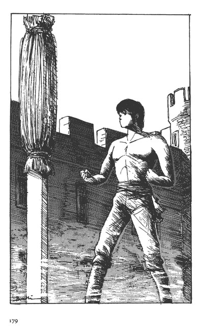
ジョクは、納得できない問題をかかえていて、今朝はトレーニングに集中できない。
「......どうも、な......」
今朝早く目が覚めたのも、この不快感が残っていたからだ。
「ニーは帰って来なかった......捜索しても、墜落の形跡さえなかった......バーンたちは、どこかよそよそしい......なんだ......？」
空を仰いだ。夜の燐光は薄れて、鳥たちの朝のかしましいさえずりが、そこここにあった。
ジョクは、上体の汗を拭いながら、食堂の人影に向って怒鳴った。
「ミハン！ ガラリアを朝食に呼んでくれ。今、すぐだ！」
「はあ！ 今......？」
「そうだ。急ぐ......」
食堂から顔をのぞかせたミハンは、長身をひるがえして、居間を出ていった。その後で、ジョクは、二人の若者、デトアとナームに聞いた。
「......ドレイク様が、軍を動かす気配はないのか？」
彼等は、ミハンと同じくジョクに従う騎士候補生である。
「はい、昨日、お館様が、騎士ニーの捜索に出られまして後、三つの部隊がメットラ方面に出ましたが、それっきりです」
「装備は？」
「もちろん、ここずっと続いている正規装備で、部隊全部が、馬車で出ていきました」
「じゃあ、そろそろ戦いが始まると見ていいんじゃないか？」
「でも、このラース・ワウには、十分部隊が残っています」
「前の時と違うというのだな？」
「そうですね。倍の数が残っていますから......」
デトア・ローマンは、朝食の支度をととのえていた。デトアの観測は間違ってはいまい。そんなことを考えている間に、ガラリアが入ってきた。
「なんだい？」
食卓の前に座りもしないうちに、ジョクに訊いた。
「ン......まあ、おはよう......今聞いたのだが、ドレイク様は、今度の戦場が特定できないで苦しんでいるのか？」
「そのようだが......」
ガラリアは、分りきったことを訊くなという顔をして、野菜ジュースを口にした。
「そりゃ分っているさ。我々の偵察もなんの成果もあげなかった。しかし、ドレイク様は何もおっしゃらずに、散発的に軍を展開なさっている。ガロウ・ランの方から来るのを待っているのか？」
「ラース・ワウは、動けないからな。ガロウ・ランは好きにできる。その違いが出ているんだろう？」
「......戦術的には、ギィ・グッガの方が有利ということか？」
三人の若者たちも、同じ食卓について食事をするのが、ジョクの家のしきたりである。
「ガロウ・ランの戦法も戦いのたびに上達しているしな。シャバでは、伝説の崩壊ということが、話題になっているようだ」
「ガロウ・ランは、地の者ではないということか？」
「......それで、なんだい？」
ガラリアは、ジョクの一般論など聞く気はなかった。
「そう......ニーは、どこかに不時着したはずなんだが、その痕跡は見つからなかった。妙だと思う」
「バーンが、なにかやっているんだろう」
ガラリアは、ひどく簡単に答えた。その言葉は、ジョクには刺激的だった。
また、自分の勘の悪さを棚に上げて、自分が除け者にされていると感じる。
「......そういうことか？」
「そうだよ。何か秘密の作戦があると見たね。そういう男だ。あたしたちが嫌いなのさ」
「ニーは、何も言わなかったがな」
「そりゃ、ニーの立場では、バーンに口止めされれば、何も言えないだろう。それに、バーンは手を打つのが早い。パンパンと手際よくやられれば、ニーがジョクに報告する間はあるまい」
ミハンも、デトア、ナームも、ガラリアの言葉に納得顔になった。
「......みんながそう感じるとすれば、俺は、阿呆だったことになるな......」
ジョクは、一同の顔を見比べたが、誰もなにも言わなかった。
彼等は、別にでジョクの卑下する言葉を認めたわけではない。それは、彼等の『意思の漂い方』でジョクにも分った。彼等は、次にジョクがなにを言い出すか興味があって、黙っているのだ。
ジョクにしても、日本人特有の謙遜の感覚で自分を卑下する言葉を吐いたつもりはない。考える『間』が欲しかっただけだ。
そんな特に、謙遜の言葉が出るのは、民族性のなさしめることであろう。確かに、直さなければならない癖である。
「行くぞ。ニーのところへ！」
ジョクは燻製肉を口にしてから、そう言った。
「どこへだって？」
「もし、バーンが秘密の作戦を実施しているのならば、ニーは、そのために動いている。他に行方不明のドーメはいないのだからな」
「ああ、そうだ」
「そして、バーンが動くなら、俺を呼ぶ。呼ばなければ、俺が動く。俺だって、二ーたちがやっていることを手助けできるはずだ」
「ニーに命令されていることは、単なる偵察かも知れない」
「しかし、ニーから俺に一言もないというのは不自然だ。キチニとマッタだっているんだぜ」
「そうだけど、バーンは、あたしたちが嫌いなんだよ」
「一人で武勲が欲しいというのか？」
「そりゃそうさ......それに動くったって、ニーたちはどこにいる？どこに行ったらいいんだ？」
「分るはずだ。これから機械の館に行けばな」
「なんで？」
「軍は、アの国の全域に展開している。ドーメの動きがあれば、その報告はラース・ワウに来ている。だから、報告がないところにこそ、ニーがいるはずだ。違うか？」
「分るかね......？」
「みんなの協力があれば分るね。バーンの独断だけで、作戦が完遂されることはない。奴の増長を叩いてやるさ」
「なんで、そう思いつめるんだ？」
「......理由はないが、俺だって、バーンの気に入らない部分をすっきりさせたいと思っている。そうしないと、とても、危険だって感じる」
「なんで？ この国にとって、悪いことなのか？」
「ちょっと違うな......もっと、悪いことだって気がする」
ガラリアは、首をひねって、
「そんなことを言うならば、ショットやジョク、それにあのマーベルやトレンかい？ゾロゾロ地上人がこの国に降りて来たことの方が、よほど気持悪いことなんだよ。あたしには面白いがね」
三人の若者たちが、笑って頷いた。
ジョクたちは、食事が終ると騎馬で機械の館に向った。
「どうしたんです？」
ジョクは、機械の館前の天幕の下に、マーベル・フローズンがあのガルマティカ風のふんわりとした衣装を着て座っているのを見つけた、
「......ニーが帰ってこないんですってね？」
マーベルの表情を見て、ジョクは、彼女も観念してこの世界で暮す覚悟をしたな、と感じた。
ニーのことを気にするのは、悪いことではない......。
「ええ。個人的に気になりましてね、これからまた、捜索に出るつもりなんです」
「昨日も捜索、やったんでしょ？」
「はい......」
ジョクは、ミハンたちが機械の館周辺のオーラ・マシーンや、作戦指揮所や偵察部に消えて行くのを目の端に捕えながら、
「妙なんですよ。彼とは一番親しい間柄のはずなのに、彼は、何も言わないで訓練飛行に出ていったんです」
「訓練飛行って？ ニーは、わたしには、任務で当分会えなくなるって別れに来たわ。......なのに、ニーの捜索をしているって聞いて、変だなって、わたし......」
「ハ......？」
ジョクは、マーベルの瞳を覗きこんだ。ジョクはマーベルから、ニーが別れの言葉を言いに来た時の状況を聞いた。
「......分りました。あなたがぼくにこんなことを言ったなんて、バーンには言いませんよ。昨日の偵察を続行するとだけ言っておきます」
「そう、気を遣うのね？」
「そりゃそうです。人間は、一人一人違いますからね」
ジョクは天幕を出ると、機械の館の一角に新設された管制塔に上がっていった。
「騎士ジョク！」
若い管制官が、敬礼を返した。
「ニーの捜索に出るつもりだが、今朝までのオーラ・マシーンの目撃報告を教えてくれ」
「ハァッ！」
案の定、訓練飛行の目撃以外、新しい報告はなかった。
ニーが不時着したらしいポイント周辺のカットグラ飛行の報告は、すべてジョクが捜索に当った時のものだった。
「............」
ジョクは、オーラ・マシーンの飛行目撃のない場所をチェックしていったが、通信網が発達していないこの国では、ジョクの想像以上に目撃なしの空域が多かった。
「手掛りなしか......」
「どうします？」
「......田か湖に沈んだと見るのが、正しいのかな？」
「じゃ、捜索はやめますか？」
「しかしな、この北の方面は、ガロウ・ランの動きも報告されているのだろう？行くよ。今日一杯ぐらい捜索してやらなければ、死んだにしてもかわいそうじゃないか」
「そうでありますね！」
ジョクの言葉に、管制官は感動したらしい。
「二番カットグラに七、八、九番ドーメ！ ニーの捜索飛行に追従！発進準備急げっ！」
スピーカーの声が、機械の館の前の広場に流れた。
正規の訓練飛行が始まるまでには、まだ十分に時間があった。
「第二十八から四十地点には、補給物資が用意してあります。緊急の場合は、そこで補給をして、捜索を続行して下さい」
「了解だ」
ジョクは管制塔を降りた。
ミハンが待っていた、
「工場のイットーが、ニーのドーメに乗っていたようですね」
「技師が？ ドーメに乗って訓練飛行か......？」
「あの時、見送りましたが、ニーのドーメに技師が乗っていたなんて......見えませんでした」
「当り前だ、ブリッジがある」
「そりゃそうです。それともうひとつ、工場から、カットグラの部品が外に出たって話もあります」
「なんだ、そりゃ？」
「分りませんが、我々の知らない作戦が行なわれていますね」
「そうだな......。バーンかショットか。水臭いな。ガラリアの言う通りらしい」
ジョクは、とっさにドレイクに会っておいた方が良いと感じた。
「すぐに戻る」
機械の館の電話で、ジョクはドレイクヘの面談を申し入れてから、騎馬でラース・ワウの城へと走った。
「なにか？」
ドレイクは、居室の隣の部屋までジョクを招き入れてくれた」
「気になることがあって参りました。遭難したニー・ギブンのドーメは、技師を乗せて訓練飛行に出た後で、行方不明になりました。自分は、ニーの任務を知らないばかりに、この二日間、ニーの捜索をし、今日も捜索に出るつもりでありましたが、出る必要はないと考えます」
「ああ、そのことか。いや、出てくれ。捜索は、続けた方が良い」
「なぜです？」
「将兵に安心を与えるわけにはいかん状況である。ニーのドーメが遭難したという方が、将兵は緊張する。それにもうひとつ。捜索しながらガロウ・ランの動静をさぐることはできる」
「なんのために、ニーを出したのでありますか？」
「ギィ・グッガの軍に捕獲されたカットグラの奪還作戦だ」
ジョクは、なるほどと思いたかったが、作戦の名前を聞いた時に、なぜか、背筋がゾッとした。
「.........カットグラの奪還作戦......成功するとお考えでありましょうか？」
「そうは、読めんのか？」
「妙であります。ガロウ・ランと接触できた者が、このラース・ワウにいるということがです」
「フン......そうだな。バーンは、それで有頂天になっているようだ。だからこそ、儂は、軍を動かし、カットグラ奪還と同時に、ギイ・グッガを殲滅する予定を立てている」
「奪還できるという前提は、危険ではありますまいか？」
「ガロウ・ランに、カットグラが使えるのか？」
「ニーたちが、ガロウ・ランのために働くことは考えられます」
「............？」
ドレイクは、言葉を呑んだ。
「自分の女が、ギイ・グッガによって戦士に仕立てられ、それと戦った者の直感です」
ジョクは、大学の後輩、田村美井奈のことを言ったのである。
「そうか......うかつだったな。ニーならば、忠節を示す機会を与えられのだから死を賭してもカットグラを奪還するか破壊すると信じた」
「ギィ・グッガが危険なのは、御存知のはずでしたのに......バーンとて、ガロウ・ランと接触したならそのギィ・グッガのまやかしの技に取りこまれていると考えることもできましょう」
「なるほど、騎士ジョク、前に出よ。ギィ・グッガの動く徴候が見えたならば、即、殲滅しなければならない」
「はい......捜索の形でラース・ワウを出ましょう。アントバの麗すべてを前線と見立てて、その中央に位置します」
「頼む......！」
ジョクは、朝のさわやかなオーラの光の溢れる居室を退出した。
ジョクの背中を見送るようにして、食堂の方から、ルーザ・ウルが姿を現した。
「......あれが、地上人で？」
「そうだ。良い騎士だ」
ドレイクは、ルーザに言った。
「あの地上人は、アの国を聖戦士の国として、地上まで導く者になるやも知れん」
「それは、なんとすばらしいことで......」
ルーザは、少女のように表情を輝かせて感嘆した。
ドレイクは、ルーザは本気でそう望んでいるのだと感じた。
この女を満足させられた時は、儂は、世界一の王であろう、とドレイクは思う。その底には、ギィ・グッガ的な恣意を受け入れる素地ができあがっていることに彼は気づいていない。
しかし、それは、まだまだ先のことである。
コモン界そのものを平定するか、まったく別の力を得なければ、実現することではない。
19 策動から
ジョクは、ドレイクの命令通りにする決心をしたが、そのことをドレイクがバーンにどのように伝えたかは、気にしなかった。
気にしたところで、バーンに嫌われている自分の立場が、良くなるものでもない。
今は、アリサとの将来を固めるための努力をすることが、一番まっとうに、周囲の人びとに理解される道だろうと判断したのだ。
「シンプル・イズ・ベストだものな」
ジョクは、アントバに向う途中、ハンダノの自分の城に寄った。
「軍務の途中で......！」
アリサは、多少非難がましいロをききながらも、ジョクの気遣いに嬉しそうだった。
「わたしの部屋を見て下さい」
ジョクは、アリサの三つの部屋をのぞいた。別に新しい家具が入ったわけではない。カーテンと壁掛けが替り、ベッドカーテンが少女らしい明るいものになっていた。
「これで、この城に柔らかさが出たな。いかにも人が住んでいるって感じだ」
それが、ジョクを、一番ホッとさせることだった。
「なら、わたくしの存在価値もあるのですね？」
「そりゃ、来てくれて嬉しいものです」
ジョクは、アリサの腰を抱いてやった。しかし、心の底にわだかまる重さは、少しも軽くならず、ジョクは息苦しさを感じるのだった。
「ヤエー・ウーヤを！」
ジョクは書斎に入った。すぐにヤエー・ウーヤがやって来た。ジョクは、彼にサインを終えた書類を渡し、ドレイクがアリサのために付けてくれた騎士団の宿舎になっている屋敷のことを聞いた。
「分った。昼食を済ませたら、出発するが、その前に騎士団長のハンマ・スワンに挨拶をしておきたい」
「はい、ミハンを使いにやりましょう」
ヤエー・ウーヤは、不機嫌だった。
「なんだい？」
「そりゃ、物入りが重なります。新しい鎧などは、当分、用意できませんぞ」
「そりゃ、仕方がない。がんばるさ」
ジョクは、これが所帯じみることなのだろう、と嘆息する。
ジョクは、ハンダノを発進した。
ラース・ワウの北、アントバの山脈に至る山裾の村アグーに、ジョクが入ったのは、ニーがバミルゥの村を撤退した翌々日であった。
ジョクは、そこでオーラ・マシーンの前進基地設営のための物資搬入の指揮をし、自分の指揮下に入った三機のドーメの整備と補給に忙殺された。
ギィ・グッガの軍の動きの輪郭はどうやら掴めたが、戦線がどこに固定されるかは、まだ不明である。
オーラ・マシーンの補給と不時着に対処する仕事は、偵察以上に苛酷な仕事であった。
その翌日、ジョクが朝の偵察飛行を終え、次の前進基地を設営する準備を始めたころ、バーンが、ジョクと同じ編成のオーラ・マシーン部隊を引き連れてアグーに入ってきた。
「騎士ジョク！ カットグラ奪還作戦を貴公に教えなかったことを、そんなに怒っているのか？」
ジョクの天幕に入って来るなり、そう言ってバーンは笑った。
「............？」
バーンの明るすぎる態度に、ジョクは戸惑った。
「貴公は、騒動のもとになる傾向があるから、余計なことは教えなかっただけだ。そうはいっても貴公の働きには感謝している。だが、我々コモン人だけでできる作戦は、我々に任せてもらいたい。騎士たる者の自尊心がそれを望むのだ」
「自分が、いつも騒動の元にいたのは認めるが、自尊心のことで言えば、自分だって、少しでも早くこの世界に同化したいから、除け者にされるとひがむのだよ」
「この作戦は、ニーに機会を与えてやることでもある。ギブン家とラース・ワウの間にある問題を解決するためにな。ニーは、それを承知しているからこそ、この任務を買って出たのだ。愚鈍すぎるくらいに実直な男だからな」
「ただな、ニーのドーメに同乗している若い者は、自分の家に仕える者だ。それを心配している」
「貴公もニーと同じだな......ガロウ・ランが入ったバミルゥの村の偵察はどうした？」
「報告した通りだ。ギィ・グッガの今後の動きを教えてくれるようなものはなかった」
「フム......わたし自身の目でも見ておきたいが......？」
「いいだろう」
ジョクは、テーブルの地図を見下ろして、
「この土地の者の話では、結構、枝道がある」
「フム......車も通れる道か？」
「その道は、三本ほどある。今朝までのところ、ガロウ・ランの動きは見えないが、そろそろ出てくるのではないかな」
「この西の方からラース・ワウに入るか？ フーム......こんなところにギィ・グッガが長期間滞在していたというのが気になる。奴は、初めから、カットグラを修理するための人質作戦を考えていたのかな？」
ジョクには、バーンが、ひどく神経質になっているように感じられた。
「多分な......自分の部隊は、今日、このポイント、マランの谷間に前進基地を設営する」
ジョクは、周囲の将兵の働きぶりを見ながら言った。
「そうしてくれ。ギィ・グッガは、カットグラを修理するための情報を手に入れるために、アの国の領土内に侵攻していたんだ。となれば、ニーたちがカットグラを修理し終って、カットグラとドーメを奪還して帰って来るのも時間の問題だ」
「そうだ......」
「ニーなら、バミルゥを通過するルートを戻ると思う」
「そういう打ち合わせなのか？」
「......ン。行ったルートを戻るというのが約束だ」
「そうか......」
ジョクは、バーンは別のことを考えている、と感じた。
「......バミルゥの村は、ここからオーラボムの一戦闘単位の距離にある。気をつけてな」
「了解だ。ジョク......そうだ。ショットの工場では、新しいドーメが今日三機、あさって三機、ロールアウトするそうだ」
「結構じゃないか」
ジョクは、笑って見せてから、立ちあがった。
「また、忙しくなるな」
バーンも笑いながら応じた。
バーンはバーンで、ジョクが自分に対して抱いているわだかまりを感知していたが、それを許していた。そして、バーンは、たによりも、ジョクがショットと自分の本当の目論見に気づいていないことを確認して、安心をした。
『我々の考えを話してもいいのだが......こやつは同調しない......ドレイクの娘を押しつけられた男だ。反ドレイクに動くとは思えん......』
反ドレイク──端的に言えば、ショットとバーンの目論見とは、これであった。
バーンは、再びカットグラに乗ると、三機のドーメと共にバミルゥの村に向った。
バーンは、若者らしい洞察力を持って、オーラ・マシーンを未来の兵器、時代を開拓する道具と理解していたのである。
ドレイクは、オーラ・マシーンによってコモンの国々を支配するという現実的な野心を持っていたが、バーンは、オーラ・マシーンの出現の意味をもっと深いところで捉えていたのである。
そのために、まず、バーンは、ガロウ・ランにオーラ・マシーンを使わせて、ドレイクを排除することを狙ったのである。
『ショット様と手を組んで、真のオーラ・マシーン力を発揮できる機械を手に入れれば、それを支配する者はドレイクではありません』
ショットと密会して、バーンは、そう言った。
『まったく新しい国作りが必要なのです。そのためには、まずギィ・グッガにドレイクを討たせて、その上で、オーラ・マシーンの真実の力でギィ・グッガを討ち、アの国を我等のものとするのです。そして、オーラ・マシーンの力による世作りをするのが、我々の使命なのではありますまいか？』
『騎士バーンが、そこまではっきりとお考えとは......。よく打ち明けて下さった』
ショットにも、バーンの熱弁に乗るだけの理由はあった。
『ならば、お気づきでしたろう、わたしが、機械の館を引き払って、ここに新しい工場を建設した理由に』
『もちろんです。ドレイク様の支配を少しでも薄くするお考えと......』
『そうです』
ショットは、短く答えた。
彼にすれば、このコモンの世界で名を成すにしても、別の可能性を探るにしても、オーラ・マシーンが、アの国にだけあるというのでは、まったく展望が開けない。このままでは、オーラ・マシーンの開発が袋小路に入ってしまう、と彼は危機感をつのらせていた。
彼は、現代人である。技術の世界だけで言えば、ＩＢＭの世界制覇などは、ショットの感性を刺激する例であったが、一方的な技術支配の結果が、何をもたらすかということもよく知っていた。
それは、所詮、独善的なものである。
そういう見識を持つのが、ショットである。
現在のバイストン・ウェルのコモン界は、まだまだ、独占的な技術で支配する時代ではない。技術に限らず、世の進歩そのものも、競りあうところに面白味や意外性が生まれるのだ。
ショットにとって、もしここでガロウ・ランにオーラ・マシーンを与えたならばどうなるか、という設定は、極めて刺激的なものであった。
現在のガロウ・ランは、それなりにオーラ・マシーン対策を立ててはいるが、強獣にガロウ・ランを乗せて、弓矢で攻撃してくるのが精一杯である。
結果がどうなるかは、ショットにはすでに見えていた。
ガロウ・ランならば、オーラ・マシーンを与えても、大改造をする能力を持ち合わせているとは思えない。ならば、オーラ・マシーンを与えて、オーラ・マシーン同士の戦闘を実戦でシミュレートしてみたいという誘惑は、技術者として拒否できるものではない。
それが、純粋技術者のショットの質である。技術者の性である。
バーンとショット、この二人の思いが、ブラバの申し出を受け入れさせたのである。
バーンの立場としては、単純にブラバを斬れば良かったのだ。そうすれば、十八機のドーメと完全稼働する三機のカットグラがあるドレイク軍は、ギイ・グッガがどのような強獣軍団を送りこんだとしても、最終的な勝利を手にするはずだった。
しかし、事はそのようには進まなかった。
バーンが、バミルゥの村に入った時、そこには、十数人の半死状態の村人がいた。ニーたちは、その村人たちに何も手助けをしていないように見えた。
援助をしても、彼等に天寿をまっとうさせることはできないと判断したのだろう。
バーンは、ニーたちがカットグラを修理したらしい小屋を調べ、ギイ・グッガが本陣にした屋敷も見て回った。
ニーたちに食事を運んだあの少女は、バーンたちについてまわったが、何を欲しがるというのでもなかった。
「......村人も連れていかれたか......」
バーンは、その少女に、腰のポケッ卜に入れた干肉を投げ与えた。
「この上に、車輛、軍馬の移動した後がありますが、どの程度の数か分りません。風で足跡は消えていますから...」
「追撃するわけにはいかんか？」
「新しい蹄の跡もありますね。偵察に戻っているんでしょう......」
「数は、どのくらいと見た？」
「さて......追撃して個々を撃破するのは可能でありましょうが、たいした効果はありますまい」
「そうだな。ガロウ・ランは、山に入れば地に伏せ、木々に隠れて移動するのに長けている。しかし、ここまで侵攻したのだ。ギィ・グッガ自身が、次の動きをしているらしいとなれば、その先を叩いていく必要はあるかも知れん」
「はい......ここからなら、三つのルートが考えられます。偵察にあがりましょう」
「その上で、騎士ジョクが設営している前進基地、マランの谷に合流する」
バーンは、三機のドーメに二つのルートをジグザグに北上させ、自分は、左の西寄りのルートを航続距離の許す限り北上して、前進基地で合流する手筈を整えた。
近くにガロウ・ランの動きがあることを確信していたバーンは、なんらかの形で、そのひとつを捕捉できる可能性はあると踏んで、勇躍、一機、山並の上空を飛んだ。
残り少ない航続距離をカバーするために、バーンは、一気に高度を取って、滑空するようにして、山を三つ越えた。
「............？」
僚機のドーメとの無線が使えなくなった頃、ひとつの煙を見つけた、
一気に降下したバーンは、山の斜面の濯木の下を走るガロウ・ランたちの姿を見つけた。
「なかには、ああいう不用意な者もいるということだ」
バーンは、いなごのように散って行くガロウ・ランを攻撃しようとはしなかった。一人、二人のために、フレイ・ボンムを消耗したくなかったからだ。
「ということは、不用意とは言えんのか？ ガロウ・ランの自由さは......」
天に向って唾をするガロウ・ランの戦士の姿まで目撃して、バーンは苦笑した。
バーンは、さらに北上して、左右に渓谷が迫る岩肌を南下する幌馬車の列を見つけた。
「......隊商か......？」
一見、一枚岩のように見えるが、その岩場には段差があり、そこに道があった。
幌馬車は、コモンの商人のものに見えた。四頭だての馬車、八輛である。
カットグラを接近させて、馬車の列を観察すればするほど、バーンは迷った。コモン人としか見えないのだ。なかには、手を振っている女もいる。
ガロウ・ランを異形というが、コモン界の人びとも決して、現代の我々が考えるほど均整が取れた人びとではない。
馬車を御する男たち女たちの服装は、アの国のものである。
「......なんで、ガロウ・ランの軍が展開しているこの地域を、無事に移動できるのだ？」
バーンは、ブラバに会ったことによってガロウ・ランに対する認識が変りはじめていた。それ故、この馬車の列に疑惑を抱いた。
知恵がついたガロウ・ランは、物事を隠蔽するために、コモンの商人を生かしておくということもあるのではないか、と......。
「............？」
バーンは、カットグラのフレイ・ボンム・キャノンを構えて、楯を前に出しながらも、その陰から馬車の群をもっとよく観察しようとした。
その時だった。
バーンの視界で真赤な光が弾けた。
「............!?」
バーンは、反射的にフレイ・ボンム・キャノンを斉射して、後退をかけたが、楯に受けた衝撃で、カットグラの機体が反対側の渓谷に激突した。
「アゥッ！」
視覚に赤い光の残像があった。バーンは、その赤い光がいくつかの幌馬車から射ち出されたものであると確信した。しかし、そこまでである。その後は、何が起ったか分らなかった。
衝撃が数度バーンのカットグラを襲い、バーンは、シートのなかに身体を埋めているのがやっとだった。
上昇をかけると、機体が激しく前後に振動した。
「クッ！」
バーンは、自分のうかつさを罵った。
ようやく自機を渓谷の上に出した。その間に、数回、フレイ・ボンム・キャノンを発射したが、効果は不明だった。
「............？」
渓谷を見ようとしたが、オーラの光のさす上空に出た直後であるために、渓谷は暗い闇の底に沈んで、馬車の列は見えなかった。攻撃もやんでいたので、バーンの方も、フレイ・ボンム・キャノンの狙いを定めることができなかった。
「クッ！」
バーンは、楯とそれを支えていたカットグラの腕がなくなっているのを見て、カッとした。
幌馬車隊は、殲滅しなければならない。そこには、ガロウ・ランの部隊のガダを発射できる重火器が隠されていたのだ。
バーンは、カットグラの残った二枚の羽根を左右に広げると、不安定な機体を操って降下しようとした。
「わ、うわっ！」
激しい衝撃と共に、カットグラの機体が上に撥ね飛んだ。
バーンの膝にシート・ベルトがギチッと喰いこんだが、痛みを感じる間はない。さらに、やや斜め下から衝撃が襲った。ドウッ！
「なにっ!?」
バーンは信じられないものを見た。
カットグラの右腕が、キャノンを持ったまま噴き飛んでいったのだ。
「なんとっ！」
カットグラの両方の腕をなくしながらも、バーンは、後退をかけた。
が、さらに、信じられないものを目撃した。
カットグラに似た姿の強獣が、右腕に持った剣を振りかざして、突進してきたのだ。
「なんだ!? カットグラかっ！」
バーンは、自分の眼を疑いたかった。しかし、接近してくるのは、間違いなく、黒に近い褐色の機体のカットグラである、
狂暴に見えた。
「なんだとっ！」
バーンは、急速に機体を降下させながら、そのカットグラの切っ先をよけた。バーンは、自機の脚を蹴り上げさせながら、さらに、機体を縦に回転させた。
急速に流れる視界の向うでその黒褐色のカットグラはターンして、ななめ下から攻撃をかけようとしていた。
「............!?」
バーンは、縦の運動から加速をかけて、そのカットグラの懐中に飛びこむようにした。
「あたれっ！」
バリッ！ またも、バーン機の残った羽根の一枚が、剥ぎ取られたようだ。バーンは、機体の肩口を黒褐色のカットグラにぶつけた。
ドスッ！ 続いて、蹴り上げた。
バーンのカットグラの脚の爪が、相手の機体の手首に伸びた。カットグラの脚の爪は、鷲の脚のように鋭く、物を掴むことができる。掴んで捩れば、手首ぐらいは折ることができるはずだった。
しかし、同じカットグラであれば、よほど気合いを入れてやらないと、掴むことも、捩ることもできない。力量の互角の人の格闘技と同じである。
正拳ができる相手に正拳を出しても利くものではない。捨て技を出して気を散らし、その隙に正拳を出さなければ、ダメージなどは与えられない。
バーンのカットグラの脚が空を切った。が、飛び抜けることはできない。
バーンは、速度を殺して、相手のカットグラの陰をなしている部分に向って機体を前進させた。相手の懐中で上昇をかけた。
黒褐色のカットグラの剣が、空中をむなしく走り、バーンのカットグラの頭突きが、相手の顎に決った。
が、機械である。ダメージにはならない。
バーンは、残った肘を相手のカットグラのコックピットのハッチに激突させた。
ドガッ！ ビッ！ ビシシシッ！
そのコックピットの正面の透明なハッチに、白い筋が網の目のように入った。
「ウッ！」
「なにしている！ 斬れっ！ 斬れ！」
「駄目なんだからっ！」
「ウオーッ！」
操縦シートに座ったニー・ギブンが怒声を上げた。
ニーの左右に立っていたブラバとヘレナァが、絶叫した。
一挙に視界が曇ってしまったニーは、遮二無二に機体を後退させた。それをブラバとヘレナァが怒っているのだ、
「チッ！」
バーンは敵の影が遠くなった気配に、機体を立て直した。サッと周囲を見てから、敵のカットグラと正対した。
「まちがいない。カットグラだ......！」
バーンは、それがガラリアの使っていたものかどうか考える暇はなかった。またも、剣を上下左右に振りながら突進してくる黒褐色のカットグラに対して、バーンのカットグラは身構えた。
が、こんどは、動きが直線的である、
「............!?」
バーンは、今の攻撃がなんらかのダメージを与えたことを知った。しかし、手のあるなしは、格闘の場合、決定的である。バーンは、カットグラの脚を前に出して、敵の剣を避けながら、横、後からと接近を敢行した。
「よしっ！ 行けるっ！」
バーンは、相手の動きが全体的に遅いことに気づいた。こうなれば、なんとか互角に戦えるのではないかと思った。
一瞬の欲であった。
生身の身体を晒していないところからくる、油断であろう。接近しすぎた。
敵のカットグラ、つまり、ニーの操縦するカットグラが、踵を返すようにして、剣を横に走らせた。
ガリッ！
今度は、脚だった。膝をやられた、という感触があった。
「チッツ！」
バーンは、自機の左の脚を蹴り上げさせ、それをジャブのように激しく動かす。その下を、ニーのカットグラが擦り抜けて、背後に回った。
「なんとっ！」
羽根一枚になってしまったバーンのカットグラは、安定しない。急速に飛行させるしかなかった。一気に距離を離し、次に、一挙に距離を詰める。
また、脚のジャブを出す。両方の脚が動いたようだった。敵の振る剣が下に来た。
ガチッ！ 左の脚が、敵の、剣を持つ腕を掴まえた。
ギギギッ！ 一瞬、両機が空中に静止したようになった、
「ウオオオッ！」
ニーは、自機の腕が、バーンのカットグラの脚に掴まれているのを見て絶叫した。
「ニーッ！」
ヘレナァが、ニーの肩を掴んで揺する。
ニーが、楯を持ったカットグラの右腕を作動させた。楯の縁が、バーンの脚に激しく激突した。ガッン！ガガガッ！
「クッ!?」
バーンのコックピットにまでその衝撃が伝わった。
バーンは、自分のやろうとしていることが危険だと察知した。
「チッ！」
バーンは、脚の爪を離すと同時に上昇を掛けた。
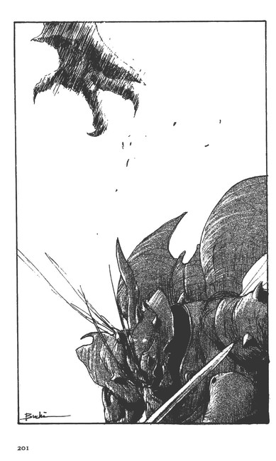
撤退を決意したのだ。
「うっ！ 逃げたようだ！」
「追えっ！ ニーッ！ 今なら叩けるっ！」
ブラバが、ニーの肩を揺すって怒鳴った。
「駄目だ！ ブラバ！ 視界が利かない！よく見えないじゃないかっ！」
ヘレナァが、激しく拒否した。
「奴は、よたってたぜぇ！」
「こっちも同じだ！」
ヘレナァは、機体の損傷がどのように自分たちの動きを不自由にするか想像がつくようだった。
「ニー！ 戻れっ！ なんとかしないと戦えない！」
ニーは、ヘレナァをヒョイと見上げた。その瞳は、奇妙に混濁して、ウロウロとしていた。
「戦えない......？」
ニーは、それでもカットグラを前進させようとして、操縦バーを動かした。
「駄目だ！ 退れ！」
ヘレナァは、厳しく言って、ニーの手を叩き、バーからニーの手をどけた。
「こいつを動かす気分は、分ったってもんじゃないのか？ええっ！ブラバ！」
ヘレナァはそう言うと、ホワッとした表情のニーの顔を覗いて、
「さあ、帰るんだ。帰って、寝ようか」
と言った。
「フン！ 薬は、うまくねぇのかな？ 機械にはよぉ」
ブラバは、頭のなかで考えなければならないことが一杯あることにうんざりしていた。同時に、空中で戦闘することは、とんでもなく素晴しいものだと実感していた。
「今度は、俺がやるぜぇ。エ？ へへヘ！」
ヘレナァは、そうしなよと言いながら、網の目のようにひびわれたハッチを開こうとした。
「......コックピットのハッチが傷ついていた......」
バーンには、敵は追っては来ないという確信があった。だから、後退を掛けたのである。
もうひとつ、バーンは、ドーメによる次の攻撃を危惧したのであった。
カットグラが攻撃してきたのだから、そう考えても、想像力が強すぎるとは言えまい。そして、今のカットグラをニーのクルーの一人が操縦していたとすれば、ますます、敵がドーメで攻撃してきても不思議はない。
バーンは、敵のカットグラが、戦闘空域でウロウロする姿を見ながら、自機の高度を低くして、来た通りのルートを戻って、予定の合流地点に機首を向けた。
「......しかし、なんだ？......」
激しい不安が突き上げてきた。
ゴーグルを外し、革兜も外してからも、バーンは、背後の空域を何度も振り返った。自分は、どこか増長していたのではないかと後悔に近いものを自覚していた。
20 孤 立
バーンが、マランの谷間にジョクたちが設営した前進基地の位置を示す赤い旗を見つけたのは、それから一時間後であった。
基地と言っても、ジョクの率いるドーメ部隊で運べるだけの資材を、隠し置く場所でしかない。それらを谷川の縁の木の下に隠し、各オーラ・マシーンも木の下に隠れるように、足場を組んだ程度のものである。
バーンは、赤い旗を見つけると、必死に機体を水平に保って、狭い川原に降下していった。
その姿を見て、ジョク以下のクルーは、バーン機になにが起ったかを悟った。
「どうしたんだ!?」
バーンほどの騎士なら、強獣部隊に包囲でもされなければ、受けることがないと思える損傷であった。
「カットグラだ。ガラリアのカットグラが飛べるようになっていたんだ。それが、襲ってきた......」
バーンは、タラップを降りても、ジョクたちの顔を見ることができなかった。
ジョクは、ドーメを一機飛ばして、バーンの戦闘報告をラース・ワウに届けさせ、ガラリアのカットグラが本当に飛べるようになって襲ってきたのかどうかの検討に今晩一晩かけると伝達させた。
「......ガロウ・ランが、カットグラを使ったというのか？」
木の下に設営した小さい天幕の下で、ジョクは、バーンのそそけ立った頬を見つめて、繰り返し訊いた。
革鎧の胸をはだけたバーンは、額に垂れたザンバラ髪の間からギロリと瞳を光らせた。
「たった数日で、ガロウ・ランがカットグラを使えるようになったのか？」
ジョクは、携帯用のガス暖房器に火を入れながら、バーンに言った。
「......ニーたちの誰かが、ガロウ・ランに威かされて、操縦しているということは考えられる」
「しかし、あのクルーには、カットグラを操縦した者はいないんだぞ？」
「そうだが......ギィ・グッガは人質作戦に味をしめている......そうとしか考えられんな」
バーンは、革鎧を脱ぎ捨てると、天幕にあった毛布に上体をつつんで、ドッと横たわった。
ジョクは、バーンの失望の色の深さに、またも妙だなと感じた。
顎の下しか見えないが、そこは、ヒクヒクと痙攣している。
「バーン、敵がカットグラで襲ってきたのならば、敗北は当然だ。これは失敗ではない。ガロウ・ランが、次々に知恵をつけていくのは、過去の歴史になかったことだ。我々すべてが、ガロウ・ランに対する認識と想像力を欠いていた結果だ......」
バーンは、ジョクの言葉は聞いていなかった。
「すまん。しばらく一人にしておいてくれ」
「ああ......」
ジョクは、暖房用のガス器をバーンの足元に寄せると、その場を離れた。
『......ガロウ・ランにオーラ・マシーンを与えた結果が、このように、自分に襲いかかってくるとはな......ガロウ・ランを舐めていたんだ......ジョクが前線に出て、俺より先にカットグラを回収することを俺は恐れた......ノコノコと、ここまで出て来てしまった自分のミスだ......』
なぜ、俺は、自分が思った通りに事態がすすむと思いこんでいたのだろうか。
『ショット様は、理論だけのお方だということを忘れていたのだな』
バーンは、自分の成功のためには、野戦に生き残り、人望を得なければならないのではないか、という考えに辿りついた。
『個人の軍功だけでは、一軍は支配できないのだ......しかし、そんなことが、この自分にできるか？』
それがバーンの最後の設問であった。
「ま、仕掛けたのだ。やって見るさ」
バーンは、ガス暖房器を抱いて、腹のあたりを暖めながら、木々の間に置いてあるカットグラの点検を始めたジョクたちのクルーの動きを、ボンヤリと見つめていた。
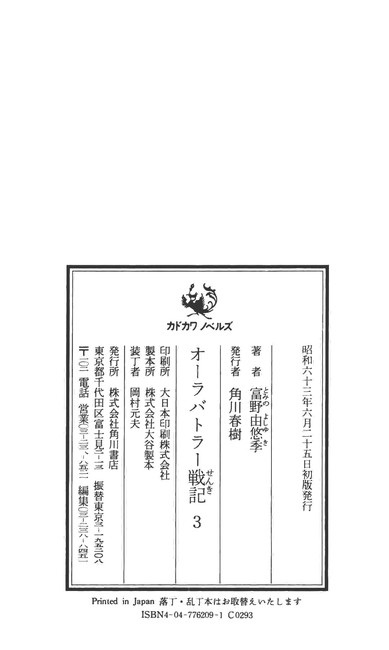
底本：「オーラバトラー戦記 2」カドカワノベルズ、角川書店
1988(昭和 63)年06月25日初版発行
このテキストは
(一般小説) [富野由悠季] オーラバトラー戦記第０３巻ガロウ・ラン・サイン.zip XYye10VAK9 14,553 76021546f59f459b39ff3a90e9d6dd11
を元に、OCRにて作成し、底本と照合、修正する方法で校正しました。
画像版の放流神に感謝します。
***** 底本の校正ミスと思われる部分 *****
＊行数は改行でカウント、( )は底本の位置
648行目
(p 49-上-17) 下下
下々の方がいいような......
2653行目
(p166-上-17) そのグリップを押してまった。
そのグリップを押してしまった。では......
2674行目
(p167-下- 2) フレキブル・アーム
フレキシブル・アーム（訂正済）
****************************************